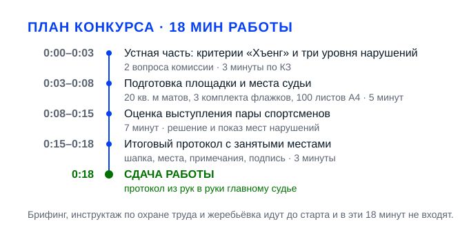
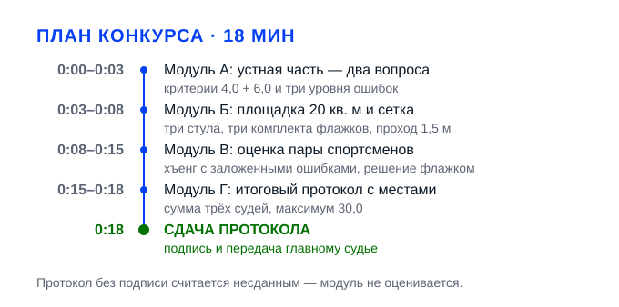
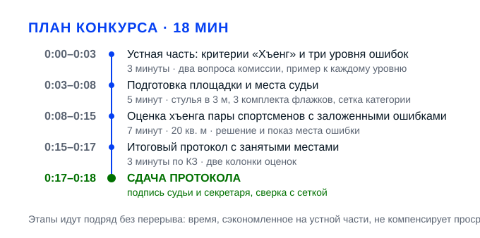

Судья по адаптивному тхеквондо (ФВ)
Задания ниже — официальные файлы «Абилимпикс» (источник: abilympics-russia.ru), разложенные по категориям. Решения написаны по тексту задания, регламенту и критериям оценки; в них указано, что именно проверяет эксперт.
Школьник
14–16 лет, базовый уровень заданияВ официальном файле категории не разделены отдельными разделами — приводим задание целиком; различия по категориям смотрите в таблице модулей.
Пошаговое решение
Конкурсное задание категории «Школьники» устроено как рабочий день судьи по адаптивному тхэквондо в дисциплине «Хъенг», только сжатый до 18 минут. Сначала вы отвечаете комиссии на два вопроса о критериях судейства и о том, чем грубая ошибка отличается от ошибки и недочёта. Потом за пять минут готовите площадку из двадцати квадратных метров будо-матов, своё место и судейские атрибуты — три комплекта флажков, три ручки и сто листов А4 — и составляете сетку категории по числу участников. Дальше самое трудное: за семь минут оценить выступление пары спортсменов, в комплекс которых заранее вложены нарушения, вынести решение и показать комиссии, где именно что было сделано не так. Завершается всё итоговым протоколом с занятыми местами, на него — три минуты. Ошибка новичка — считать эти части отдельными: критерии из начала — тот же инструмент судейства, и протокол должен быть их следствием.

Задача 1. Ответить комиссии на два вопроса о критериях «Хъенг»Устная часть · 3 минуты
Устная часть длится три минуты, и за это время нужно успеть не просто перечислить критерии, а показать, что вы понимаете их внутреннюю логику. Комиссия задаёт два вопроса: из чего складывается оценка комплекса «Хъенг» и чем отличаются грубые ошибки, ошибки и недочёты. Отвечать нужно связно, с примерами движений, потому что именно пример показывает, что вы видели эти нарушения на тренировках, а не выучили формулировку наизусть. Всё, что вы скажете здесь, комиссия потом сверит с тем, как вы судите пару спортсменов, — расхождение между словом и делом заметно сразу.
Действие 1.1. Рассказать, из чего складывается оценка комплекса
Шаг 1.1.1
Начинаем ответ с рамки, а не с подробностей: комплекс «Хъенг» оценивают по двум большим блокам — техника исполнения и качество presentation, то есть подача движения. Внутри техники называем точность траекторий, правильность стоек, верный уровень блока или удара и согласованность работы рук и ног. Внутри подачи — силу, скорость, равновесие, ритм и дыхание, а также концентрацию и завершённость каждого действия. Проговариваем это ровно, без пауз на «э-э», держа темп спокойной беседы: три минуты — это примерно две страницы обычного текста, и в них всё перечисленное помещается свободно.
Комиссия слушает не перечень, а структуру: если участник начинает с деталей и тонет в них, дальше ему не хватает времени на второй вопрос. Рамка из двух блоков — это тот же каркас, по которому потом заполняется судейский бланк в третьей части задания, и комиссия специально проверяет, совпадает ли устный ответ с последующей практикой.
Проверьте себя по трём признакам: вы назвали оба блока, внутри каждого перечислили не меньше четырёх составляющих и не сбились на рассказ о конкретном комплексе. Если после ответа комиссия может переспросить «а что входит в технику?» — значит, рамка прозвучала недостаточно ясно.
Самая частая ошибка — начать пересказывать содержание комплекса Тэгук и уйти в него целиком: времени на второй вопрос не останется, а критерии так и не прозвучат. Вторая — говорить только о технике, забыв про силу, ритм и концентрацию, из-за чего ответ выглядит половинчатым.
Эксперт отмечает, прозвучали ли оба блока критериев и названы ли внутри них составляющие, а не оценивает красноречие. Отдельно он отмечает, не пришлось ли задавать наводящий вопрос, чтобы услышать второй блок.
Шаг 1.1.2
Расшифровываем технический блок на движениях: стойка должна быть той, которая предусмотрена в этом месте комплекса, — ноги на нужной ширине, колени мягкие, вес распределён, задняя нога не выпрямлена в замок. Блок выполняется на своём уровне: нижний — у пояса, средний — на уровне груди, верхний — над головой, и предплечье приходит точно в это положение, а не «примерно туда». Удар заканчивается в точке, куда он направлен, с выпрямленной, но не переразогнутой рукой или ногой, и возвращается по той же траектории, а не падает вниз.
Точность — самая measurable часть оценки: именно её видно на видео и именно по ней проще всего объяснить разницу между спортсменами. Когда участник называет уровень блока и точку удара конкретно, комиссия понимает, что он сможет потом показать место нарушения на площадке, а не сказать «было как-то не так». Это прямо связано с третьей частью задания, где требуется описать и показать, в каком месте были совершены ошибки.
Проверяем, что в ответе прозвучали три уровня блока, ширина и глубина стоек и точка окончания удара. Если вы можете на себе показать любое из названных движений без подготовки — знание настоящее, а не заученное.
Ошибка — говорить о технике общими словами: «движения должны быть чёткими и правильными». Такая формулировка не даёт комиссии ни одного признака, по которому можно проверить вашу квалификацию, и звучит как отписка.
Эксперт слушает, есть ли в ответе уровни, стойки и точки фиксации, и может попросить показать одно из движений рукой. Если участник называет уровни, но путается в стойках, вопрос будет задан именно про стойку.
Шаг 1.1.3
Переходим ко второй половине технической оценки — силе, скорости, равновесию, ритму и дыханию. Объясняем так: сила проявляется в момент фиксации, когда движение на долю секунды замирает в конечной точке, а не проваливается дальше; скорость нарастает к моменту удара, а не держится ровной всю траекторию; равновесие проверяется по тому, стоит ли спортсмен на опорной ноге без микропокачиваний; ритм — это чередование быстрых и медленных фаз, в котором комплекс дышит; дыхание совпадает с моментом выдоха на ударе и вдоха на подготовке.
Эта группа критериев отличает механическое выполнение от настоящего: два спортсмена могут сделать одинаковые движения, но один вкладывает силу и держит равновесие, а второй просто машет руками. В судейском бланке эти признаки идут отдельными строками, поэтому на устной части важно назвать их по отдельности, а не слить в одно слово «качество».
Проверьте, что каждому из пяти признаков вы можете дать наблюдаемый образец: фиксация — это пауза, скорость — нарастание, равновесие — отсутствие покачивания, ритм — чередование фаз, дыхание — выдох на ударе. Если хотя бы один признак вы объясняете только прилагательным, вернитесь к нему.
Типичная ошибка — сказать «должно быть мощно и красиво» и остановиться: это не критерий, а впечатление, и комиссия такой ответ не засчитывает. Вторая — перепутать силу с напряжением: зажатые плечи и поднятые плечи не дают силы, а как раз её отнимают.
Эксперт проверяет, различает ли участник фиксацию и амплитуду, силу и зажатость, — это видно по формулировкам. Вопрос «чем сила отличается от напряжения» задают чаще всего именно на этом месте.
Шаг 1.1.4
Заканчиваем ответ блоком выразительности: концентрация внимания от стартового поклона до финального, направление взгляда в сторону воображаемого противника, а не в пол, крик-кихап в тех движениях, где он предусмотрен, и завершённость каждого действия — движение не обрывается на середине, а приходит в конечную точку и только потом начинается следующее. Добавляем, что сюда же относится общий рисунок комплекса: спортсмен двигается по площадке так, что линия перемещений читается, а не расползается по матам.
Выразительность — единственный блок, где оценка держится на впечатлении, и именно поэтому его нужно объяснять через наблюдаемые признаки. На практике именно здесь участники теряют баллы в третьей части задания: они видят техническую ошибку, но не замечают, что спортсмен смотрел в пол и не фиксировал движения. Комиссия проверяет, готовы ли вы смотреть на выступление целиком, а не только на ноги.
Проверяем по четырём признакам: взгляд, кихап, фиксация, линия перемещений. Если вы можете, не задумываясь, сказать, куда смотрел спортсмен в конкретном комплексе, — блок усвоен. Если назвать все четыре без запинки — блок усвоен.
Ошибка — считать выразительность «вкусовщиной» и вовсе её не упоминать: тогда ответ неполный, и комиссия вправе спросить, по каким критериям вы будете сравнивать двух спортсменов одинакового уровня. Третья — перечислять критерии выразительности, не связав их с движениями.
Эксперт ждёт, что участник назовёт взгляд и концентрацию как критерий, а не только технику. Вопрос о взгляде спортсмена в конкретном движении он может задать сразу после ответа.
Действие 1.2. Объяснить, чем отличаются грубые ошибки, ошибки и недочёты
Шаг 1.2.1
Отвечаем по восходящей, начиная с самого тяжёлого. Грубая ошибка — это нарушение, которое ломает структуру комплекса или ставит под угрозу безопасность: спортсмен потерял равновесие и сделал лишний шаг, упал, вышел за границу площадки, забыл часть комплекса и остановился, выполнил движение не той конечностью или в обратную сторону. Формулируем коротко: грубая ошибка меняет сам комплекс, а не его качество, и именно поэтому она весит больше остальных нарушений.
Комиссия задаёт этот вопрос, потому что от классификации зависит решение: одно и то же падение равновесия в одном случае снимает больше, чем три неточных блока. Если участник путает уровни, он потом либо завысит оценку спортсмену с явным срывом, либо, наоборот, обнулит почти чистый комплекс за мелкую неточность — и в обоих случаях решение будет ошибочным.
Проверяем ответ по трём признакам: названо, что нарушение ломает структуру или безопасность; приведён живой пример из практики; сказано, что это самый тяжёлый уровень. Если пример звучит как «ну, грубо сделал» — классификация не усвоена.
Частая ошибка — назвать грубой ошибкой неверную стойку: это заметное, но не структурное нарушение, и комиссия сразу уточнит, действительно ли вы считаете его грубым. Вторая — приводить пример, которого не бывает в комплексах, и тем выдавать, что движения вы знаете плохо.
Эксперт слушает пример: если он реальный и узнаваемый, значит участник видел такие срывы на тренировках. Если пример придуман, он попросит второй — из другого комплекса.
Шаг 1.2.2
Ошибка — это нарушение техники, которое видно, но не ломает комплекс: неверная стойка, блок выполнен на чужом уровне, удар пошёл мимо точки, перепутан порядок двух движений внутри одной связки, лишний или пропущенный шаг в перемещении, движение выполнено не той рукой, но комплекс продолжен и доведён до конца. Отличие от грубой ошибки проговариваем одной фразой: после ошибки спортсмен продолжает комплекс, после грубой — структура уже нарушена.
Это самый частый уровень нарушений на соревнованиях, и именно по нему сравнивают спортсменов, когда оба выступили чисто по структуре. Комиссия проверяет, умеет ли участник держать в голове середину шкалы: без неё судейство скатывается к «всё хорошо» или «всё плохо», а обоснование решения в третьей части задания становится невозможным.
Проверяем, что пример содержит три элемента: конкретное движение, что в нём не так, и указание, что комплекс при этом продолжен. Если в ответе есть все три — уровень назван правильно. Если хотя бы один элемент выпал — переформулируйте пример.
Ошибка — сваливать в эту категорию всё подряд, включая смазанную фиксацию: тогда шкала теряет нижний уровень и недочёты начинают весить как ошибки. Вторая — говорить «ошибка это когда неправильно», не приводя ни одного движения.
Эксперт отмечает, назван ли критерий «комплекс продолжен», — он и есть граница между ошибкой и грубой ошибкой. Отдельно отмечает, не путает ли участник ошибку с недочётом в собственном примере.
Шаг 1.2.3
Недочёт — мелкое отклонение, которое не влияет на структуру и почти не влияет на технику: недостаточная фиксация в конечной точке, слабый или невнятный кихап, чуть разная высота двух одинаковых блоков, взгляд в пол, небольшая потеря темпа на переходе, слегка смазанный разворот. Объясняем, что недочёты обычно накапливаются: по одному они почти незаметны, но в комплексе из двадцати движений дают заметную разницу в общем впечатлении.
Третий уровень нужен, чтобы оценка была честной: если все мелкие отклонения считать ошибками, ни один спортсмен не получит высокой оценки, а если игнорировать — судейство станет грубым. На чемпионате комиссия проверяет именно чувство меры: способность заметить недочёт и не раздуть его.
Проверяем, что примеры мелкие по своей природе и что вы можете объяснить, почему это не ошибка: движение выполнено верно, но чуть слабее или чуть менее выразительно. Такой тест отделяет недочёт от ошибки надёжнее всего.
Ошибка — назвать недочётом пропущенный блок: это уже ошибка, а при определённых условиях и грубая. Вторая — перечислять недочёты без примеров, и тогда ответ звучит как заученный список. Третья — приводить в пример целый комплекс вместо одного движения.
Эксперт проверяет, приведён ли хотя бы один пример из области фиксации или выразительности — там недочёты встречаются чаще всего. Если пример мелкий, но назван уверенно, ответ засчитывается.
Шаг 1.2.4
Собираем всё три уровня в одну короткую конструкцию, которую удобно произнести и удобно потом применять: «грубая ошибка ломает комплекс, ошибка ломает технику, недочёт снижает качество». После этого приводим по одному примеру на каждый уровень подряд, в одном темпе и в одной форме, чтобы комиссия услышала разницу, а не три разных рассказа. Если остаётся время, добавляем, что на соревнованиях решение принимается по совокупности: сначала фиксируются грубые ошибки, потом ошибки, потом недочёты.
Такая связка показывает системность: участник не помнит три определения по отдельности, а держит шкалу целиком. Именно эта шкала понадобится через десять минут, когда нужно будет объяснить комиссии, какие нарушения были у пары спортсменов, — и если она уже прозвучала внятно, обоснование решения будет выглядеть продолжением мысли, а не новым текстом.
Проверяем на слух: три фразы идут в одном ритме, примеры короткие и разные, между уровнями нет пауз на поиск слова. Если вы сбились и начали заново — значит, конструкция ещё не своя. Если ритм сбился — проговорите связку ещё раз про себя.
Ошибка — выдать три определения, но привести один и тот же пример с разными словами: комиссия это замечает сразу. Вторая — говорить слишком быстро, чтобы уложиться, и проглатывать окончания. Третья — вставлять между уровнями длинные паузы.
Эксперт оценивает целостность ответа и то, прозвучала ли шкала как единая система. Он также смотрит, не пересказывает ли участник определения дословно, как выученный текст.
Шаг 1.2.5
Если комиссия задаёт уточняющий вопрос — а это почти всегда происходит, — отвечаем коротко и по существу, не начиная ответ заново. На вопрос «а если спортсмен сделал лишний шаг, это что?» отвечаем: это ошибка, потому что структура комплекса сохранена, но перемещение выполнено не по рисунку; грубой она станет, если из-за этого он потеряет равновесие или выйдет за границу. Держим паузу в полсекунды перед ответом — она читается как обдумывание, а не как провал в памяти.
Уточняющий вопрос — это проверка на прочность: заученный ответ рассыпается на первом же нестандартном случае, а понятая шкала выдерживает любое уточнение. Кроме того, умение отвечать на вопросы комиссии прямо входит в задание: после вынесения решения по паре спортсменов участник тоже отвечает на вопросы о своём решении.
Проверяем, что в ответе есть классификация и обоснование, а не только название уровня. Если после вашего ответа можно задать следующий вопрос по той же логике и вы снова ответите — система работает. Если ответ развалился — вернитесь к шкале уровней.
Ошибка — спорить с комиссией или переспрашивать вопрос, делая вид, что не расслышали. Вторая — уходить в длинное объяснение на минуту, теряя оставшееся время. Третья — отвечать вопросом на вопрос, перекладывая решение на комиссию.
Эксперт задаёт один-два уточняющих вопроса и смотрит на скорость и точность реакции. Второй вопрос обычно касается границы между ошибкой и грубой ошибкой.
Задача 2. Подготовить рабочее пространство и место судьиПодготовка площадки · 5 минут
На подготовку даётся пять минут, и за них нужно превратить пустой зал в площадку, готовую к обслуживанию соревнований: застеленные будо-маты, три судейских места с нормальным обзором, разложенные атрибуты и составленная сетка категории. Оценивается не красота, а рабочая логика: судья должен видеть обе границы площадки, не перекрывать выход спортсменам и иметь под рукой всё, что понадобится через минуту. Пять минут проходят быстро, поэтому порядок действий лучше держать в голове заранее: сначала площадка, потом места, потом атрибуты, потом бумаги.
Действие 2.1. Осмотреть зону и расставить судейские места
Шаг 2.1.1
Начинаем с покрытия: площадка должна быть застелена специальными будо-матами «ласточкин хвост» на площади около двадцати квадратных метров, без щелей и сдвигов на стыках. Проходим по периметру и проверяем, что замки соединены до щелчка, крайние маты не выступают языком наружу, а поверхность сухая. Если маты лежат в два ряда и стык идёт по центру, проверяем именно его: именно там спортсмен разворачивается и чаще всего цепляет ногой край.
Ровное покрытие — это и безопасность, и чистота оценки: спортсмен, зацепившийся за щель, теряет равновесие не по своей вине, а судья потом не сможет отличить это от собственной ошибки выступления. Кроме того, границы площадки нужны вам самому — по ним определяется выход за пределы, который относится к грубым ошибкам.
Проверяем по трём признакам: щелей нет, поверхность не «гуляет» под ногой, границы читаются как ровный прямоугольник. Пройдите по диагонали и посмотрите под ноги — так видны сдвинутые маты. Сдвинутый мат виден по неровной линии стыка.
Ошибка — оставить стык недожатым: он выглядит почти ровным, но при развороте нога уходит в щель. Вторая — начать расставлять стулья, не проверив покрытие, и потом двигать всё заново. Третья — проверять покрытие после расстановки стульев.
Эксперт обходит площадку вместе с участником или проверяет её до старта и отмечает, устранены ли очевидные дефекты покрытия. Если дефект найден, он ждёт, чтобы участник его устранил сам.
Шаг 2.1.2
Расставляем стулья для судейской бригады: три места с одной стороны площадки, лицом к центру, на расстоянии двух-трёх метров от края матов. Между рабочими местами оставляем проход не меньше полутора метров, чтобы судья мог встать и показать движение, не задев соседа. Стулья ставим так, чтобы они не перекрывали выход спортсменов на площадку и не оказывались на линии между зрителями и центром: судья должен видеть обе границы одновременно, не поворачивая головы.
Позиция судьи — не формальность: с неправильного места не видно уровень блока и точку фиксации, а значит, оценка будет случайной. Проход в полтора метра взят из требований к оснащению рабочих мест, и на площадке он работает так же: судья встаёт и показывает нарушение, и ему нужно место для движения.
Проверяем, сев на каждый стул: видны ли оба дальних угла площадки, не упирается ли взгляд в спину впереди сидящего, есть ли куда встать. Если из среднего места видно хуже, чем из боковых, — стулья стоят по дуге, а не по прямой.
Частая ошибка — поставить стулья вплотную к матам: ноги спортсмена оказываются в полуметре от лица судьи, обзор сужается до одной точки. Вторая — выстроить их в линию поперёк зала, перекрыв проход. Третья — ставить стулья спиной к окну.
Эксперт смотрит на геометрию: три места, одна сторона, свободный подход и отсутствие помех между судьёй и площадкой. Проверяя обзор, он может попросить участника пересесть на среднее место.
Шаг 2.1.3
Убираем всё, что мешает обзору и движению: стол главного судьи и стойку с флагами отодвигаем в сторону, провода и сумки убираем с пола, освобождаем путь от входа до площадки. Проверяем освещение: если над одной половиной матов тень, а над другой свет, судье будет казаться, что спортсмен наклоняется, хотя он стоит ровно. В конце проходим по маршруту спортсмена — от входа до стартовой точки — и смотрим, нет ли на нём препятствий.
Помехи в поле зрения — источник ошибочных решений: блик от окна съедает уровень блока, а сумка на краю площадки читается как препятствие, за которое спортсмен якобы вышел. Кроме того, освобождённый маршрут нужен для второй части задания, где пара выходит на площадку по вашему приглашению.
Проверяем: в поле зрения судьи нет людей и предметов между стулом и матами; пол по маршруту свободен; тени на площадке ровные. Достаточно встать на место судьи и медленно провести взглядом по всем четырём углам.
Ошибка — оставить стулья зрителей в первом ряду вплотную к площадке: они перекрывают нижний уровень обзора. Вторая — не заметить, что на маты падает тень от стойки, и потом «увидеть» наклон корпуса. Третья — оставить провода на полу у края матов.
Эксперт проверяет обзор с судейского места и отсутствие предметов на пути спортсменов. Отдельно он смотрит, заметил ли участник тень на площадке и сказал ли о ней.
Действие 2.2. Разложить судейские атрибуты
Шаг 2.2.1
Берём три комплекта судейских флажков — по одному на каждое место — и проверяем каждый: два флажка в комплекте, древко целое, ткань не порвана и не свёрнута в жгут, цвета читаются на расстоянии. Раскладываем флажки на стуле или столике перед судьёй так, чтобы их можно было взять одной рукой, не глядя: рукоятки к себе, полотнища в сторону площадки. Если флажки хранятся в чехле, чехол убираем сразу, а не кладём под стул.
Флажок — основной инструмент объявления решения: поднятый флажок виден спортсменам и главному судье, и заминка с ним читается как неуверенность. Три комплекта нужны потому, что судейских мест три, и если один комплект остался в чехле, второе место фактически не работает.
Проверяем: на каждом из трёх мест лежит пара флажков, рукоятки направлены к сидящему, полотнища расправлены. Поднимите каждый флажок — он не должен разворачиваться сам и не должен скользить в руке. Флажок не должен выскальзывать из ладони.
Ошибка — положить флажки в общую кучу в центре стола: в нужный момент судья тянется через весь стол и путает цвета. Вторая — оставить флажки свёрнутыми: поднятый свёрнутый флажок не читается как решение.
Эксперт отмечает, разложены ли атрибуты по местам и готовы ли они к работе без доступа к сумке. Если флажки лежат россыпью, он может попросить разложить их заново.
Шаг 2.2.2
Раскладываем бумаги и ручки: сто чистых листов А4, три ручки — по одной на место — плюс запасная. Листы делим на две части: небольшой блок на черновики для записи по ходу выступления и стопка для протоколов. Каждую ручку проверяем на отдельном листе: линия должна быть ровной, без пропусков, чернила не мазать. Если ручка пишет с нажимом, откладываем её в запас — на протоколе такой почерк расплывается.
Сто листов и три ручки — это норма оснащения по конкурсному заданию, и расходуется она быстрее, чем кажется: черновик выступления, сетка, два варианта протокола. Проверка ручки занимает пять секунд, а засохшая ручка в момент заполнения протокола стоит времени, которого в трёхминутной части задания нет.
Проверяем: на каждом месте лежит лист и пишущая ручка, запасная ручка рядом с вами, стопка чистых листов не перепутана с черновиками. Проведите короткую линию на уголке — она должна быть видимой и непрерывной.
Частая ошибка — взять одну ручку на всё: она заканчивается ровно на итоговом протоколе. Вторая — писать черновик на листах протокола, а потом сдавать документ с зачёркиваниями. Третья — держать ручку без колпачка, чтобы чернила не засохли.
Эксперт смотрит, лежат ли письменные принадлежности на местах и есть ли запас. Он проверяет, пишет ли ручка на каждом из трёх мест, а не только на вашем.
Шаг 2.2.3
Готовим свой бланк оценки: на листе А4 чертим таблицу из двух колонок по блокам критериев — техника и подача — и строк под каждое движение комплекса, плюс отдельная графа для пометок о нарушениях с указанием уровня. Сверху пишем фамилии спортсменов в том порядке, в котором они выходят, и оставляем место для итогового счёта. Бланк делаем заранее, до выхода пары, потому что писать таблицу во время выступления — значит не смотреть на выступление.
Бланк — это ваша память на семь минут: комплекс идёт быстро, и восстановить по памяти, в каком движении был смазан блок, невозможно. Графа с уровнем нарушения нужна потому, что в третьей части задания требуется не просто назвать ошибку, а классифицировать её — и делать это лучше в момент просмотра, а не задним числом.
Проверяем: строк хватает на все движения комплекса, колонки подписаны, есть место для двух спортсменов. Прогоните в голове порядок заполнения: если вы не понимаете, куда писать пометку о потере равновесия, переделайте бланк сейчас.
Ошибка — вести записи на клочке без структуры: потом невозможно сопоставить пометку с движением. Вторая — рисовать бланк слишком мелко, так что в спешке не разобрать собственный почерк. Третья — рисовать бланк на обороте протокола.
Эксперт может посмотреть на бланк: аккуратная таблица читается как профессиональный подход. Если бланк пустой к началу выступления, это отмечается как потеря подготовки.
Шаг 2.2.4
Освобождаем стол от всего лишнего: телефон убираем в карман или в сумку и ставим на беззвучный режим, воду ставим на пол сбоку, а не рядом с бумагами, верхнюю одежду убираем со стула. Проверяем, что на рабочем месте остались только флажки, листы, ручки и бланк. Если на площадке шумно, договариваемся с соседями о тишине заранее, а не во время выступления.
Чистое рабочее место — это не эстетика, а скорость: на семиминутной оценке каждая лишняя секунда на поиск ручки уходит из наблюдения. Телефон на столе — отдельный риск: вибрация во время выступления отвлекает и судью, и спортсменов, а эксперт фиксирует такие вещи как нарушение регламента.
Проверяем: на столе четыре предмета — флажки, листы, ручка, бланк; телефон не виден и не слышен; вода стоит на полу. Посмотрите на место со стороны — оно должно выглядеть как рабочее, а не как склад. Стол должен выглядеть рабочим, а не пустым.
Ошибка — оставить телефон рядом с бланком «чтобы посмотреть время»: на соревнованиях время объявляет главный судья, а не экран. Вторая — поставить открытую бутылку над бумагами. Третья — держать воду рядом с бланком.
Эксперт обращает внимание на посторонние предметы и на то, не отвлекается ли участник. Он смотрит и на то, не отвлекается ли участник на разговоры с соседями.
Действие 2.3. Составить сетку категории
Шаг 2.3.1
Берём список участников категории и пересчитываем его: фамилия, имя, год рождения, клуб или регион. Сверяем количество с тем, что объявил главный судья, и проговариваем число вслух — так ошибка в счёте обнаруживается сразу. Отмечаем, есть ли участники, которые выходят вне очереди, и кто из них идёт первым по жеребьёвке. Если в списке две одинаковые фамилии, сразу уточняем инициалы, а не разбираемся с этим на протоколе.
Сетка строится из числа участников, и ошибка в счёте ломает всё дальнейшее: при четырёх участниках нужны два полуфинала, а при трёх — полуфинал и выход одного напрямую. Если посчитать неверно, в протоколе появятся два первых места или участник без соперника, и документ придётся переделывать в последние три минуты.
Проверяем: число в вашей сетке совпадает с числом в объявлении главного судьи; все фамилии из списка присутствуют; порядок выхода совпадает с жеребьёвкой. Пересчитайте второй раз, но не по строкам, а по количеству отметок.
Ошибка — считать «на глаз» и потерять одного участника: в протоколе он останется без места. Вторая — переписать фамилию с ошибкой, а потом не суметь сопоставить её с выступлением. Третья — писать фамилию по памяти, не сверяя со списком.
Эксперт проверяет, совпадает ли сетка с объявленным составом категории. Он сверяет число участников в сетке с объявленным и просит назвать его вслух. Список участников он тоже сверяет с сеткой.
Шаг 2.3.2
Определяем формат по числу участников: при двух спортсменах это финал в один выход, при трёх-четырёх — полуфиналы и финал, при пяти-восьми — четвертьфиналы, полуфиналы и финал. Выбираем формат и называем его вслух, чтобы не менять по ходу. Отдельно отмечаем, по какому принципу распределяются места при равенстве: сначала грубые ошибки, затем ошибки, затем недочёты, и только после этого — общее впечатление.
Формат определяет, сколько выходов нужно обслужить и сколько строк должно быть в протоколе. Если формат выбран неправильно, сетка не сходится: победитель полуфинала оказывается в финале дважды или один участник проходит два круга без соперника. Это и есть тот самый принцип, по которому вы потом будете сравнивать пару.
Проверяем: число выходов в сетке соответствует числу участников; каждый следующий круг содержит ровно половину предыдущего; финал один. Пройдите по сетке сверху вниз и посчитайте стрелки — их должно быть столько же, сколько пар.
Ошибка — нарисовать олимпийскую сетку для двух участников: половина клеток остаётся пустой, и протокол выглядит небрежно. Вторая — не оговорить принцип распределения мест при равенстве заранее и придумывать его на ходу.
Эксперт смотрит, соответствует ли формат числу участников и объявленным условиям. Отдельно он отмечает, назван ли формат вслух до начала работы с листом.
Шаг 2.3.3
Рисуем сетку на листе: слева столбец участников в порядке жеребьёвки, дальше стрелки к парам, затем к следующему кругу и к финалу. Нумеруем пары и подписываем их номерами выходов — «выход 1», «выход 2», — чтобы во время соревнований не искать, кто с кем. Для пары из задания отдельно отмечаем строку, в которой будут записаны двое спортсменов, чьё выступление вы оцениваете, и оставляем рядом место для счёта.
Сетка нужна не для красоты, а для скорости: когда главный судья объявляет выход, вы должны за секунду найти нужную строку. Нумерация пар и выходов снимает путаницу, из-за которой в протокол попадает результат не той пары, — а это уже ошибка судейства, а не оформления.
Проверяем: каждая пара имеет номер, каждая стрелка ведёт к конкретному следующему кругу, ни одна строка не осталась без пары. Проведите пальцем путь первого участника до финала — он должен быть непрерывным.
Ошибка — нарисовать сетку без номеров и потом вписывать результаты в произвольные клетки. Вторая — сделать сетку на черновике, который потом теряется среди листов. Третья — рисовать стрелки так, что непонятно, откуда они идут.
Эксперт может попросить показать сетку и проверить, читается ли она без пояснений. Он может попросить показать путь участника от первого круга до финала.
Шаг 2.3.4
Проверяем сетку на сходимость: количество участников в первом круге равно числу из списка, число пар в каждом следующем круге уменьшается вдвое, финал один, а победитель финала получает первое место. Отдельно проверяем, что никто не попал в две пары одновременно и что свободных мест в сетке ровно столько, сколько нужно по формату. Найденное расхождение исправляем сразу, а не после первого выхода.
Сходимость — единственный надёжный признак правильной сетки: если она сходится, протокол заполнится без противоречий. Проверка занимает полминуты, а исправление сетки после первого выхода — уже переделка всей подготовки, на которую в пятиминутной части задания нет времени.
Проверяем по трём числам: участников столько же, сколько в списке; пар в первом круге — половина или половина с округлением вверх; финал один. Если все три совпали, сетка готова. Если хотя бы одно число не совпало — перерисуйте сетку.
Ошибка — оставить в сетке участника, которого нет в списке, скопировав шаблон с прошлых соревнований. Вторая — не заметить, что один участник записан дважды. Третья — оставлять в сетке пустые клетки без пометки.
Эксперт сверяет сетку со списком и смотрит, есть ли в ней очевидные несоответствия. Сходимость он проверяет сам, проходя по стрелкам сверху вниз. Пустые клетки в сетке он считает небрежностью.
Задача 3. Оценить выступление пары спортсменов и обосновать решениеОценка выступления · 7 минут
Это ядро конкурсного задания. Пара нормотипичных спортсменов выполняет комплекс «Хъенг» по сценарию, в который заранее вложены нарушения, и ваша задача — увидеть их, вынести решение и объяснить его комиссии. Семь минут делятся примерно так: пять на два выступления с записями и две на обоснование. Оценивается не только правильный победитель, но и то, назовёте ли вы место нарушения, его уровень и причину, по которой решение получилось именно таким. Смотреть нужно по фазам движения, а не целиком: глаз запоминает общий рисунок и пропускает уровень блока.
Действие 3.1. Смотреть выступление и вести записи
Шаг 3.1.1
Занимаем своё место до выхода спортсменов, садимся ровно, руки с флажками на коленях, бланк и ручка наготове. Дистанция до края матов — два-три метра, угол к площадке примерно сорок пять градусов: с него видно и уровень блока, и положение стоп. Не наклоняемся вперёд и не переносим стул во время выступления — перемещение судьи отвлекает спортсменов и читается комиссией как потеря контроля над ситуацией.
Точка обзора определяет, что вы вообще способны увидеть: с фронтального места не читается глубина стойки, сбоку не видно уровня блока. Выбранный заранее угол — часть подготовки, и если вы садитесь по-другому, все записи будут менее точными, а обоснование — менее убедительным.
Проверяем перед выходом: оба дальних угла площадки видны без поворота головы, стопы спортсмена на дальней стороне не закрыты матами, бланк лежит так, что писать можно не глядя. Если что-то не видно — переставьте стул до выхода, а не после.
Ошибка — сесть вплотную к матам: перспектива искажается, и стойка кажется шире, чем есть. Вторая — держать бланк на коленях под флажками и искать ручку в начале выступления. Третья — держать флажки в руке поверх бланка.
Эксперт фиксирует, занял ли участник место до выхода пары и держит ли осанку судьи в течение всего выступления. Он отмечает, не менял ли участник место после выхода пары.
Шаг 3.1.2
Первое выступление смотрим с записями по ходу: на каждый блок или удар ставим в бланке точку, а нарушения помечаем коротким знаком — «ст» для стойки, «ур» для уровня, «ф» для фиксации — и цифрой уровня нарушения. Писать полные слова некогда, поэтому знаки придумываем заранее и держим их в голове. Время от времени поднимаем глаза от листа, чтобы не потерять общую картину: записи не должны превращаться в диктовку.
Запись по ходу — единственный способ потом показать место ошибки: в третьей части задания требуется описать и показать, в каком месте были совершены нарушения. Если пометка сделана в момент движения, вы называете его уверенно; если вспоминаете после — путаете порядок и теряете доверие комиссии.
Проверяем: к концу комплекса в бланке есть отметки по всем крупным фазам, знаки читаются, у каждой пометки стоит уровень. Проведите по строке пальцем — вы должны восстановить ход выступления без подсказок.
Ошибка — смотреть выступление целиком и надеяться запомнить: через минуту помнится только общее впечатление. Вторая — писать так подробно, что голова опущена весь комплекс. Третья — записывать только нарушения, не отмечая верные движения.
Эксперт наблюдает, смотрит ли участник на площадку и делает ли пометки в процессе, а не после. Он смотрит на бланк после первого выступления: есть ли в нём знаки по фазам.
Шаг 3.1.3
Второе выступление смотрим по той же схеме и на том же бланке, только во второй колонке: те же знаки, те же строки, та же последовательность. Это важно для сравнения — если первый спортсмен записан по фазам, а второй общими словами, сопоставить их невозможно. В конце каждого комплекса сразу, пока не забылось, ставим итоговую пометку: сколько грубых, сколько ошибок, сколько недочётов.
Решение принимается сравнением, а не абсолютной оценкой: два выступления нужно измерить одной линейкой. Единая форма записи — эта линейка, и комиссия проверяет именно её, когда просит объяснить, почему победил тот или иной спортсмен. Без общей формы записи сравнение превращается в спор о впечатлении.
Проверяем: обе колонки заполнены в одинаковом порядке, итоговые пометки стоят, число нарушений по уровням можно назвать вслух без пересчёта. Если по одному спортсмену записей вдвое меньше — сравнение будет нечестным.
Ошибка — начать оценивать второго спортсмена «на фоне» первого и записывать только отличия: так теряются собственные нарушения второго. Вторая — поставить итог до окончания комплекса. Третья — заполнять вторую колонку после выступления, по памяти.
Эксперт смотрит, ведётся ли запись одинаково по обоим спортсменам. Если вторая колонка заполнена хуже первой, он задаёт вопрос, чем именно мешала запись.
Шаг 3.1.4
Смотрим по фазам, а не по общему впечатлению: сначала стойка и положение стоп, затем уровень блока или удара, затем фиксация в конечной точке, затем возврат в исходное положение и переход к следующему движению. На каждой фазе задаём себе один вопрос: соответствует ли она тому, что должно быть в этом месте комплекса. Только после этого смотрим на общую выразительность — взгляд, дыхание, темп.
Фазовый просмотр — профессиональная привычка, которая отличает судью от зрителя: зритель видит силу и красоту, судья — уровень блока и точку фиксации. Именно на фазовом просмотре обнаруживаются вложенные в сценарий нарушения, а на общем впечатлении они растворяются в гладком исполнении.
Проверяем: по каждому спортсмену вы можете назвать хотя бы одну фазу, где движение выполнено верно, и одну, где есть отклонение. Если ответ только «в целом хорошо» — просмотр был поверхностным. Если названа только одна фаза — просмотр был неполным.
Ошибка — следить за одним элементом весь комплекс, например только за руками: тогда нарушения в стойках остаются незамеченными. Вторая — оценивать выразительность раньше техники и подгонять технические пометки под впечатление.
Эксперт проверяет, названы ли нарушения в разных фазах, а не все подряд в одном движении. Он может попросить назвать фазу, в которой нарушений не было вовсе.
Действие 3.2. Вынести судейское решение
Шаг 3.2.1
Сводим записи: по каждому спортсмену считаем грубые ошибки, ошибки и недочёты, а внутри блоков отмечаем, где нарушений больше — в технике или в подаче. Считаем не «на глаз», а по знакам в бланке, проводя по строке карандашом. Итог пишем в двух строках: например, «первый: грубых 0, ошибок 2, недочётов 3» и «второй: грубых 1, ошибок 1, недочётов 2». Эта запись станет основой устного обоснования.
Решение должно быть воспроизводимым: комиссия может попросить показать, откуда взялись числа, и бланк с пометками — единственное доказательство. Кроме того, счёт по уровням защищает от самой частой ошибки — выбрать победителя по симпатии к более эффектному выступлению.
Проверяем: сумма нарушений по уровням совпадает с числом пометок в бланке; ни одна пометка не осталась без уровня; итоговые числа записаны. Пересчитайте второй раз по колонкам, а не по памяти. Если числа не сходятся, ищите потерянную пометку.
Ошибка — округлять в пользу одного спортсмена, чтобы решение выглядело очевидным. Вторая — считать недочёты наравне с ошибками и получать искажённую картину. Третья — считать только технику, забыв про подачу.
Эксперт может подойти и посмотреть бланк после выступления: наличие счёта по уровням он отмечает отдельно. Он может спросить, сколько пометок осталось без уровня.
Шаг 3.2.2
Сравниваем по старшинству уровней: сначала смотрим, у кого есть грубые ошибки — спортсмен с грубой ошибкой проигрывает тому, у кого их нет, даже если у второго больше недочётов. Если грубых нет у обоих, сравниваем число ошибок, затем недочётов, и только при полном равенстве обращаемся к выразительности: концентрация, взгляд, завершённость, общий рисунок комплекса. Решение формулируем одной фразой с указанием, что именно перевесило.
Иерархия уровней — это и есть критерий судейства, о котором вы говорили в устной части: если в решении вы сравниваете иначе, комиссия увидит расхождение между словом и делом. Последовательность «грубые — ошибки — недочёты — выразительность» делает решение объяснимым в одну фразу.
Проверяем: вы можете назвать, на каком шаге сравнение закончилось. Если ответ «оба хороши, но первый лучше» — сравнение не доведено до критерия, и обоснование развалится на первом вопросе. Если шаг не назван, сравнение не доведено до конца.
Ошибка — решать по общему впечатлению, а потом подбирать обоснование. Вторая — уравнять грубую ошибку и три ошибки, посчитав «примерно одинаково». Третья — объяснять решение симпатией к более эффектному комплексу.
Эксперт слушает формулировку решения и проверяет, назван ли критерий, по которому оно принято. Отдельно он отмечает, прозвучала ли иерархия уровней в самом решении.
Шаг 3.2.3
Объявляем решение так, как требует регламент: дожидаемся команды главного судьи, поднимаем флажок того цвета, который закреплён за победителем, держим его поднятым до команды опустить, затем называем вслух фамилию победителя и счёт. Флажок поднимаем прямо перед собой на уровне плеча, а не над головой и не в сторону, чтобы его было видно и спортсменам, и главному судье.
Порядок объявления — часть судейской дисциплины: самовольное поднятие флажка до команды читается как нарушение процедуры, а флажок, поднятый в сторону, не виден второй половине зала и создаёт путаницу при подсчёте голосов. Кроме того, единый порядок объявления нужен для подсчёта голосов бригады.
Проверяем: флажок поднят после команды, держится ровно, фамилия произнесена чётко, счёт назван. Опускаем флажок только после ответной команды — до этого рука не дрожит и не опускается «чуть-чуть». Флажок не должен дрожать.
Ошибка — поднять флажок сразу после комплекса, не дождавшись команды: это нарушение процедуры. Вторая — назвать победителя, не назвав счёт, и потом не суметь объяснить цифры. Третья — называть счёт, не называя фамилию.
Эксперт смотрит на момент поднятия флажка и на то, слышно ли объявление. Он фиксирует, совпало ли ваше объявление с решением, которое вы объяснили комиссии.
Шаг 3.2.4
Пока решение ещё не объявлено, проговариваем про себя обоснование в двух-трёх фразах: что было у первого, что у второго, что перевесило. Формулировка должна укладываться в двадцать секунд речи и содержать движение, уровень нарушения и критерий выбора. Если обоснование не складывается — значит, решение принято на впечатлении, и лучше вернуться к бланку, чем объявить и потом путаться в ответах.
Обоснование готовится до объявления, потому что после него комиссия задаёт вопросы сразу, и пауза на размышление выглядит как неуверенность. Кроме того, заранее сформулированное обоснование не даёт решения «поплыть» под первым же уточняющим вопросом.
Проверяем: обоснование произносится без запинки, содержит не меньше одного конкретного движения и одного критерия. Если вы можете повторить его дважды одинаково — оно готово. Если обоснование не складывается, вернитесь к бланку.
Ошибка — объявить решение и только потом начать думать, как его объяснить. Вторая — заготовить длинную речь на минуту и не уложиться в регламент. Третья — заготовить обоснование до того, как посчитан счёт.
Эксперт отмечает, прозвучало ли обоснование сразу после объявления и было ли оно связано с решением. Он слушает первые два предложения: в них должно быть движение и критерий.
Действие 3.3. Обосновать решение и показать места нарушений
Шаг 3.3.1
Отвечая комиссии, называем комплекс и конкретный эпизод: не «было несколько ошибок», а «в Тэгук Иль в третьей связке, после двойного блока, стойка была выполнена на прямых ногах» или «во втором повороте удар прошёл ниже уровня». Порядок в ответе держим хронологический — от начала комплекса к концу, чтобы комиссия успевала следить за ходом выступления. На каждое нарушение даём не больше двух фраз.
Привязка к месту — то, что отличает судью от зрителя: зритель говорит «было грязно», судья называет движение. В конкурсном задании это требование прямо сформулировано — описать и показать, в каком месте были совершены грубые ошибки, ошибки и какие были недочёты.
Проверяем: каждое названное нарушение привязано к движению или связке; порядок изложения совпадает с порядком движений; по каждому нарушению есть уровень. Если вы называете «примерно в середине» — привязка недостаточная.
Ошибка — перечислять нарушения без мест: комиссия не может проверить, видели ли вы их на самом деле. Вторая — перескакивать с начала на конец и обратно. Третья — называть нарушения не по порядку движений.
Эксперт слушает, названы ли движения и совпадают ли они с заранее вложенными в сценарий нарушениями. Если названное место не совпадает со сценарием, он уточняет, что именно было видно.
Шаг 3.3.2
Каждое нарушение классифицируем вслух и объясняем, почему именно этот уровень: «потеря равновесия с шагом в сторону — грубая ошибка, потому что изменился рисунок перемещения; блок на среднем уровне вместо нижнего — ошибка, потому что структура сохранена, но техника неверна; недостаточная фиксация в конце связки — недочёт, потому что движение выполнено правильно, но без остановки». Классификация не должна расходиться с тем, что вы говорили в устной части.
Классификация — это то, за что начисляют основную часть оценки в третьей части задания: увидеть нарушение может и зритель, а отнести его к уровню — только судья. Кроме того, непротиворечивость между устным ответом и практикой проверяется комиссией целенаправленно.
Проверяем: у каждого нарушения назван уровень и приведён признак, по которому он определён. Если объяснение сводится к «это же очевидно» — уровень не обоснован. Если уровень назван, но признак не прозвучал, вернитесь к определению.
Ошибка — называть уровень без признака: «это ошибка, потому что ошибка». Вторая — менять классификацию под давлением уточняющего вопроса, не имея аргумента. Третья — ссылаться на мнение тренера вместо собственного наблюдения.
Эксперт сверяет классификацию с листом оценки и отмечает, совпали ли уровни. Он сверяет ваш уровень с тем, что записано в листе оценки по этому движению.
Шаг 3.3.3
Показываем нарушение движением: встаём, выходим на свободное место, коротко воспроизводим фрагмент — стойку, уровень блока, потерю равновесия — и сразу показываем, как должно быть. Показ занимает пять-семь секунд на нарушение, без разбега и без полного комплекса. Если нужно показать работу ног, встаём вполоборота к комиссии, чтобы было видно положение стоп и коленей.
Показ закрывает требование задания «описать и показать»: словами уровень блока объяснить почти невозможно, а двумя секундами движения — сразу. Кроме того, показ проверяет вашу собственную технику: судья, который не может встать в правильную стойку, не убедит комиссию, что различает правильную и неправильную.
Проверяем: показ читается с трёх метров, разница между «как было» и «как должно быть» видна без пояснений, вы не задеваете мебель и соседей. Если для понимания нужны слова — показ недостаточно выразительный.
Ошибка — показывать весь комплекс целиком и терять время. Вторая — показывать нарушение преувеличенно, так что оно перестаёт быть похожим на реальное. Третья — показывать движение, стоя спиной к комиссии.
Эксперт смотрит на показ: видно ли разницу и совпадает ли показанное с описанным. Он смотрит на разницу между двумя показами: она должна читаться без слов.
Шаг 3.3.4
Отвечаем на вопрос «что изменило бы ваше решение»: называем порог, при котором счёт перевернулся бы, — например, «если бы у второго не было потери равновесия, сравнение пошло бы по ошибкам, и тогда победил бы первый, потому что у него их на одну меньше». Такой ответ показывает, что решение не случайно: вы держите в голове оба счёта и понимаете, где граница.
Этот вопрос комиссия задаёт почти всегда, и он проверяет устойчивость решения: судья, который принял решение по впечатлению, на нём ломается. Ответ по порогу показывает, что вы работали со шкалой критериев, а не с симпатией. Такой ответ показывает, что решение держится на счёте, а не на впечатлении.
Проверяем: в ответе назван конкретный элемент счёта и условие, при котором решение меняется. Если ответ звучит как «ничего бы не изменилось» — вы не показали, что сравнение вообще проводилось. Если назван только счёт — порог не показан.
Ошибка — отвечать «решение было очевидным»: комиссия в этом случае попросит обосновать ещё раз. Вторая — называть порог, противоречащий ранее названному счёту. Третья — называть порог, который не следует из бланка.
Эксперт задаёт этот вопрос, чтобы проверить, держит ли участник счёт по уровням. Ответ на этот вопрос он считает проверкой устойчивости решения. Отвечать нужно сразу, без паузы на размышление.
Задача 4. Составить итоговый протокол с занятыми местамиИтоговый протокол · 3 минуты
Последняя часть задания длится три минуты и выглядит самой простой, но именно здесь теряются баллы, набранные в предыдущих частях. Протокол — это документ, по которому присваивают места, и он должен читаться человеком, который не видел выступления: шапка с названием соревнований и категорией, состав судейской бригады, участники в порядке сетки, места и подписи. Всё, что вы насчитали в бланке, должно перейти в протокол без расхождений: если в бланке у второго спортсмена одна грубая ошибка, а в протоколе он первый — значит, судейство было непоследовательным.
Действие 4.1. Заполнить шапку и состав участников
Шаг 4.1.1
Заполняем шапку протокола сверху вниз: название соревнований, дата и место проведения, дисциплина «Хъенг», категория участников с указанием возраста и пола. Ничего не сокращаем до нечитаемого: «Хъенг» пишем полностью, категорию — так, как она объявлена в положении. Дату ставим ту, которая идёт на соревнованиях, а не ту, которую помните: ошибка в дате делает протокол недействительным при сдаче.
Шапка — это идентификация документа: без неё протокол не привязывается к соревнованиям и не может быть принят. Кроме того, аккуратная шапка задаёт тон остальному листу: когда верх заполнен ровно, и таблица получается ровной, а эксперт оценивает документ целиком.
Проверяем: в шапке заполнены все пять полей, нет пустых строк и сокращений, которые нельзя расшифровать. Прочитайте шапку вслух — если звучит связно, всё на месте. Если хотя бы одно поле пустое — вернитесь к нему до таблицы.
Ошибка — оставить название соревнований пустым «потом впишем»: в трёхминутной части «потом» не наступает. Вторая — перепутать категорию и указать взрослую вместо школьной. Третья — писать категорию по памяти, не сверяя с объявлением.
Эксперт проверяет шапку на полноту: название, дата, дисциплина, категория. Он проверяет шапку до таблицы: незаполненная шапка обнуляет впечатление от документа.
Шаг 4.1.2
Вписываем состав судейской бригады: фамилии и инициалы судей, роль каждого — главный судья, судьи на площадке, секретарь — и место для подписи напротив каждой фамилии. Себя вписываем в той роли, в которой работали, и ставим подпись сразу, а не в конце, когда лист уже сдан. Если состав объявлен устно, сверяем написание фамилий со списком, который вы видели при подготовке.
Протокол без состава судейской бригады юридически пуст: места распределены, но непонятно, кто их распределил. Кроме того, подпись под своей ролью — это принятие ответственности за решение, и комиссия смотрит, понимает ли участник эту часть работы судьи.
Проверяем: у каждой фамилии есть роль и место для подписи, своя подпись стоит, фамилии написаны без ошибок. Сверьте число судей с числом стульев, которые вы расставили на площадке. Если подпись не стоит — протокол считается незавершённым.
Ошибка — вписать только главного судью и забыть судей на площадке. Вторая — поставить подпись, не указав роль, и потом не суметь объяснить, за что отвечал. Третья — оставлять графу подписи пустой до сдачи документа.
Эксперт проверяет наличие состава и подписей. Он может спросить, за что отвечает каждая роль в бригаде, — ответ должен звучать без подготовки. Подпись должна быть разборчивой, а не росчерком.
Шаг 4.1.3
Переносим участников из сетки в таблицу протокола в том же порядке: номер по жеребьёвке, фамилия и инициалы, год рождения, клуб или регион. Порядок строк в протоколе должен совпадать с порядком в сетке — иначе при сверке невозможно понять, кто с кем выходил. Пустые строки, оставшиеся от шаблона, аккуратно зачёркиваем одной линией, а не оставляем в документе.
Совпадение порядка — единственное, что связывает сетку и протокол в один документ. Если строки переставлены, места начинают «плавать», и при проверке приходится пересчитывать заново, а времени на это нет. Если порядок нарушен, сверка превращается в пересчёт, а времени на него нет.
Проверяем: число строк с участниками равно числу в списке; порядок совпадает с сеткой; лишние строки закрыты. Сверьте по первой и последней строке — они чаще всего перепутаны. Если строк больше, чем участников, — шаблон не закрыт.
Ошибка — вписать участников в алфавитном порядке: протокол перестаёт соответствовать сетке. Вторая — оставить пустые строки, и потом в них дописывают чужие фамилии. Третья — зачёркивать пустые строки так, что они читаются как участники.
Эксперт сверяет протокол с сеткой по порядку строк. Он сверяет протокол с сеткой по первой и последней строке — там ошибки заметнее всего. Порядок строк он проверяет по двум крайним строкам.
Шаг 4.1.4
Сначала заполняем черновик: на отдельном листе пишем шапку, участников и места простым почерком, проверяем счёт, и только потом переносим в чистовик. Черновик держим рядом и не выбрасываем до сдачи — если в чистовике обнаружится ошибка, по черновику видно, откуда она взялась. Пишем шариковой ручкой, крупно, оставляя между строками полстроки, чтобы было куда вписать исправление.
Двухэтапное заполнение экономит время, а не тратит его: переписывать чистовик заново в конце трёхминутной части нечем. Крупный почерк с запасом между строками — страховка от зачёркиваний, которые в протоколе считаются дефектом оформления. Кроме того, черновик позволяет сверить счёт до того, как он попадёт в документ.
Проверяем: черновик заполнен целиком, счёт на черновике совпадает с бланком оценки, чистовик начинается только после этой сверки. Если вы уже начали чистовик и нашли ошибку — переписывайте лист, а не зачёркивайте.
Ошибка — писать сразу в чистовик «аккуратно, я не ошибусь»: ошибка обнаруживается на последней строке. Вторая — выбросить черновик и потерять возможность проверить происхождение чисел. Третья — писать чистовик карандашом.
Эксперт смотрит на чистовик: зачёркивания и мелкий почерк снижают оценку оформления. Он смотрит, есть ли рядом черновик и совпадает ли он с чистовиком.
Действие 4.2. Распределить места и свести их с сеткой
Шаг 4.2.1
Ставим места по результатам выходов: победителю пары — первое, второму — второе. Место пишем цифрой и словом рядом — «1 (первое)» — чтобы не было двусмысленности при чтении. Если выходов было несколько, место определяется продвижением по сетке: выше стоит тот, кто прошёл дальше, а не тот, у кого больше недочётов. Если выходов было несколько, порядок мест определяет продвижение по сетке, а не количество замечаний.
Место — итог соревнований, и его нельзя выводить из впечатления: оно следует из сетки и из решений по каждому выходу. Если место не согласуется с сеткой, протокол противоречит сам себе, и комиссия это увидит при первой же сверке. Место — это следствие сетки, а не отдельное суждение.
Проверяем: у каждого участника ровно одно место; места идут без пропусков; победитель финала стоит первым. Проведите по столбцу мест сверху вниз — номера должны читаться как последовательность. Если номера идут с пропуском — ошибка в распределении.
Ошибка — поставить двум участникам одинаковое место «они оба хорошо выступили»: в протоколе этого не бывает без прямого указания в положении. Вторая — присвоить место по числу недочётов, минуя сетку. Третья — ставить место, не глядя в сетку.
Эксперт проверяет соответствие мест результатам выходов. Он сверяет места с результатами выходов и с примечаниями, которые вы записали. Пропуск в нумерации мест он считает ошибкой оформления.
Шаг 4.2.2
Если в категории три или четыре участника, третье место получают оба проигравших полуфиналиста — так принято в большинстве положений, но правило берём из объявленных условий, а не из привычки. При двух участниках третьего места нет вовсе, и в протоколе остаются только две строки с местами. Спорные случаи проговариваем вслух и, если условия не объявлены, уточняем у главного судьи до заполнения чистовика.
Правило распределения мест — источник большинства ошибок в протоколе: участник механически ставит «бронзу одному», и второй полуфиналист остаётся без места. Уточнение у главного судьи занимает десять секунд и снимает целый класс ошибок. Ошибка в правиле стоит дороже, чем кажется: она видна сразу.
Проверяем: число мест соответствует числу участников и формату; при двух участниках в протоколе нет третьего места; правило применено одинаково ко всем парам. Сверьте протокол с сеткой по каждой строке.
Ошибка — придумать правило на ходу, чтобы «всем было приятно». Вторая — оставить участника без места, посчитав, что он «ничего не занял». Третья — присваивать третье место при двух участниках, копируя прошлый протокол.
Эксперт сверяет распределение мест с условиями категории. Он сверяет распределение мест с условиями категории и с числом участников в сетке. Правило распределения мест он знает и проверяет его сразу.
Шаг 4.2.3
Сводим места с сеткой: проходим по каждой паре и проверяем, что победитель пары стоит в следующем круге, а проигравший получил место в соответствии с кругом, в котором выбыл. Отмечаем карандашом на сетке номер места рядом с каждой фамилией — так расхождение видно сразу. После сверки карандашные пометки с сетки стираем, чтобы документ не выглядел черновиком.
Сверка с сеткой — единственный способ поймать ошибку до сдачи: она показывает несоответствие в тот момент, когда его ещё можно исправить без переписывания листа. Карандашные номера на сетке делают проверку механической и быстрой. Сверка занимает минуту и снимает риск переписывать лист.
Проверяем: у каждой фамилии на сетке стоит номер места; номера в протоколе совпадают с номерами на сетке; нет участника без номера и нет двух одинаковых номеров. Если сверка заняла больше минуты — сетка была составлена небрежно.
Ошибка — сверять «на глаз», не отмечая номера: одна пропущенная строка остаётся незамеченной. Вторая — оставить карандашные пометки в сдаваемом документе. Третья — сверять только первые строки, оставив последние без проверки.
Эксперт может попросить показать сетку рядом с протоколом. Он может попросить положить сетку рядом с протоколом и показать путь первого участника. Сетку он просит положить рядом с протоколом.
Шаг 4.2.4
В графе примечаний коротко фиксируем основания: у кого была грубая ошибка, у кого ошибки, чем определялось равенство. Пишем не разбор выступления, а справку на одну строку: «второй — потеря равновесия в третьей связке, грубая». Это не заменяет устного обоснования, но делает протокол самодостаточным: человек, читающий его через месяц, поймёт логику мест.
Примечания связывают протокол с критериями оценки: без них документ показывает результат, но не показывает, по чему он получен. В спорных случаях именно примечания позволяют защитить решение, а не вспоминать его заново. Кроме того, примечания защищают решение, если его попросят обосновать позже.
Проверяем: у каждого решения, которое может вызвать вопрос, есть строка в примечаниях; записи не повторяют друг друга; почерк читается. Прочитайте примечания отдельно от таблицы — они должны быть понятны сами по себе.
Ошибка — написать в примечаниях оценку в баллах, которой не было в бланке. Вторая — заполнить графу общими словами «по решению судей». Третья — переносить в примечания весь разбор выступления на полстраницы.
Эксперт читает примечания и сверяет их с устным обоснованием. Он читает примечания и сверяет формулировки с тем, что участник сказал комиссии. Общие слова в примечаниях он не засчитывает.
Действие 4.3. Проверить, подписать и сдать протокол
Шаг 4.3.1
Проходим протокол глазами по строкам, а не целиком: сначала шапка, затем состав судейской бригады, затем таблица участников, затем места, затем примечания. На каждом проходе ищем один тип ошибки — так они не смешиваются. Отдельно проверяем фамилии: они должны совпадать со списком буква в букву, включая «ё» и двойные согласные. Четыре прохода по одному типу ошибки занимают меньше минуты.
Раздельная проверка по типам ошибок надёжнее общей: когда смотришь на всё сразу, глаз «дочитывает» правильное и пропускает опечатку в фамилии. Ошибка в фамилии — самая обидная, потому что из-за неё участник может не найти себя в протоколе. Раздельная проверка ловит то, что слитный просмотр пропускает.
Проверяем: четыре прохода сделаны, на каждом найден или не найден один тип ошибки; фамилии сверены со списком; пустых граф нет. Общее время проверки — около минуты, и оно того стоит. Если хотя бы один проход пропущен — начните проверку заново.
Ошибка — прочитать протокол один раз целиком и решить, что всё в порядке. Вторая — проверять таблицу, не глядя на шапку. Третья — проверять таблицу, не сверив число участников со списком и не посмотрев на примечания.
Эксперт проверяет документ на полноту и на совпадение фамилий со списком. Он проверяет документ на полноту граф и на совпадение фамилий с объявленным списком.
Шаг 4.3.2
Проверяем читаемость: буквы не наезжают друг на друга, цифры мест не исправлены поверх, строки не перечёркнуты. Если исправление всё-таки есть, пишем над ним верное значение и рядом «исправленному верить», затем ставим подпись — без этой пометки исправленный протокол считается недостоверным. Лист не складываем пополам и не сгибаем: залом на таблице читается как небрежность.
Читаемость — часть оформления документа, и её проверяют до содержания: нечитаемый протокол невозможно проверить, а значит, он не подтверждает результат. Пометка «исправленному верить» — стандартное требование к документам, и её отсутствие делает исправление уязвимым.
Проверяем: исправлений не больше двух, каждое заверено подписью; цифры читаются однозначно; лист ровный, без заломов. Посмотрите на лист с расстояния вытянутой руки — так видны неровности, незаметные вблизи.
Ошибка — зачеркнуть неверное место и написать сверху без заверения. Вторая — сдать лист со следами карандаша и ластика. Третья — складывать лист пополам, чтобы убрать его в карман, и сдавать с заломом на таблице.
Эксперт оценивает аккуратность документа отдельно от правильности мест. Он оценивает аккуратность отдельно от правильности мест и отмечает каждое зачёркивание.
Шаг 4.3.3
Ставим подпись и время сдачи, затем сдаём протокол главному судье или эксперту — из рук в руки, называя категорию и число участников. Сдаём до окончания отведённых трёх минут, а не «в последнюю секунду»: время фиксируется по факту передачи. Если протокол принимают с замечанием, уточняем, что именно исправить, и исправляем сразу на месте, а не после конкурса.
Сдача — это контрольная точка задания: до неё работа не существует для оценки. Передача из рук в руки и называние категории снимают путаницу, когда на столе лежат несколько протоколов, и время сдачи фиксируется без споров. Кроме того, ранняя сдача оставляет время на исправление замечаний.
Проверяем: протокол передан, время записано, замечания приняты или их нет. Убедитесь, что лист лежит у главного судьи, а не остался на вашем столе среди черновиков. Если лист остался у вас — считайте, что работа не сдана.
Ошибка — положить протокол на край стола и вернуться на место: лист может упасть или смешаться с другими. Вторая — дождаться последней секунды и сдать в спешке с незаполненной графой. Третья — сдавать протокол, не назвав категорию.
Эксперт фиксирует время сдачи и проверяет, передан ли документ лично. Он фиксирует время сдачи по факту передачи и проверяет, кому передан лист. Время сдачи он сверяет с отведёнными тремя минутами.
Шаг 4.3.4
После сдачи приводим площадку в исходное состояние: собираем флажки в комплекты и убираем в чехол, листы складываем в стопку, ручки закрываем колпачками, стулья возвращаем на место, черновики забираем с собой. Если что-то из инвентаря повреждено, говорим об этом сразу, а не оставляем незамеченным. Маты не разбираем, если этого не просили: площадка может понадобиться следующему участнику.
Порядок после работы — часть оценки организации: площадка остаётся в том же виде, в каком её получили, и следующая смена не тратит время на поиск флажков. Честное сообщение о повреждении инвентаря — тоже элемент профессионального поведения судьи. Порядок после работы входит в общую оценку организации площадки.
Проверяем: флажки собраны по комплектам, листы не разбросаны, стулья на местах, ваши черновики у вас. Пройдите по площадке и посмотрите, не осталось ли ваших вещей. Если что-то осталось на матах, заберите это с собой.
Ошибка — уйти, оставив флажки на стульях и черновики на площадке. Вторая — разобрать маты, не дождавшись разрешения. Третья — оставить черновики с пометками на площадке, где их может взять кто угодно.
Эксперт смотрит на состояние площадки после окончания работы участника. Он смотрит на площадку после ухода участника и отмечает, в каком виде она осталась.
Студент
учащиеся колледжей и техникумовВ официальном файле категории не разделены отдельными разделами — приводим задание целиком; различия по категориям смотрите в таблице модулей.
Пошаговое решение
Задание категории «Студенты» — отработать смену судьи на соревнованиях по адаптивному тхэквондо в дисциплине «Хъенг»: ответить комиссии на два вопроса о критериях и уровнях ошибок, подготовить площадку и рабочее место, оценить выступление пары спортсменов с заранее заложенными ошибками и составить итоговый протокол с занятыми местами. Четыре модуля идут подряд с жёстким хронометражем: три минуты на устную часть, пять на площадку, семь на оценку пары и три на протокол — всего восемнадцать минут конкурсного времени. Оценивают не громкость и не уверенный вид, а способность разложить хъенг на точность и выразительность, различить грубую ошибку, ошибку и недочёт, показать место ошибки и защитить решение цифрами. Всё оборудование указано в задании: двадцать квадратных метров будо-матов, три комплекта флажков, три ручки и сто листов бумаги — из этого набора и строится рабочее место судьи.

Задача 1. Ответить комиссии на два вопроса о судействе хъенгаМодуль А · 3 минуты · два вопроса комиссии
Конкурс открывается устной частью: комиссия задаёт два вопроса по судейству дисциплины «Хъенг», и на ответ отведено три минуты. Первый вопрос почти всегда про критерии оценки, второй — про природу ошибок: что считается грубой ошибкой, что просто ошибкой, а что недочётом. Здесь нечего показать руками, зато видно остальное: владеет ли участник терминологией, держит ли структуру ответа, умеет ли заканчивать мысль примером. Три минуты — это примерно четыреста слов связной речи, и их надо распределить так, чтобы на критерии ушла половина, а на три уровня ошибок с примерами — вторая половина.
Действие 1.1. Принять вопросы и выстроить рамку ответа
Шаг 1.1.1
Комиссия задаёт вопросы подряд, и первый обычно касается критериев, второй — уровней ошибок. Не начинаем говорить с ходу: берём ручку и один из ста листов А4, лежащих на столе, и записываем оба вопроса дословно, вместе с формулировками вроде «что такое недочёты и приведите пример». Если вопрос допускает два прочтения — спрашивают про критерии судейства вообще или именно про критерии хъенга, — уточняем одной короткой фразой: «Критерии дисциплины хъенг?». Уточнение до ответа стоит пять секунд, уточнение после — половину отведённого времени.
На устную часть отведено три минуты, и это единственный блок, где ошибка в понимании вопроса не исправляется делом: переделать ответ нельзя. Запись держит структуру, потому что под нагрузкой человек отвечает первое, что вспомнил, и часто уходит в пумсэ вообще вместо хъенга. Комиссия оценивает точность формулировок так же, как судья оценивает точность техники: расплывчатый ответ читается как незнание предмета.
В записи ровно два вопроса, и каждый начинается с вопросительного слова. Проговариваем про себя, что именно требуется: перечень критериев или определение с примером. Если после записи вы не можете одной фразой сказать, о чём спросили, — вопрос не понят, и переспросить надо сейчас, а не через минуту.
Типичная ошибка — кивнуть и начать с «ну, критерии...», надеясь выехать на общих словах: через сорок секунд ответ уходит в сторону, и вернуться к вопросу уже неудобно. Вторая — переспрашивать трижды, превращая уточнение в демонстрацию неготовности.
Эксперт слушает первые пятнадцать секунд и смотрит, попал ли участник в вопрос. Отмечает он и то, прозвучало ли уточнение, и звучит ли в ответе сам термин «хъенг», а не «форма» или «комплекс».
Шаг 1.1.2
Держим в голове жёсткую рамку на три минуты: сначала называем два критерия и их вес, потом разводим три уровня ошибок, и на каждый уровень даём по одному примеру из конкретного движения — стойка, блок, удар. Пример удобнее брать из Тэгук Иль-джан, первого из восьми тэгуков: его знают все, и на нём легко показать разницу между недоворотом корпуса и пропущенной связкой. Рамку объявляем вслух одной фразой: «Отвечу по двум критериям, затем по трём уровням ошибок».
Комиссия оценивает не объём знаний, а умение их уложить в отведённое время. Три минуты на два вопроса — это примерно по девяносто секунд на каждый, и без рамки ответ разъезжается: про критерии говорим две минуты, а про ошибки остаётся сорок секунд, и примеров уже нет. Объявленная структура работает и как страховка: если собьётесь, слушающий сам вернёт вас к следующему пункту.
К концу первой минуты должны быть названы оба критерия, к концу второй — все три уровня ошибок, к концу третьей — три примера. Проверяем по часам на столе: если на критериях ушло больше половины времени, уровни ошибок надо подавать тезисом и примером, без развёрнутого вступления.
Частая ошибка — начать с истории про то, как устроено адаптивное тхэквондо и сколько детей им занимается: это интересно, но съедает минуту, а вопрос был про критерии. Вторая — рассказать всё про точность и не дойти до выразительности, которая весит больше.
Эксперт отмечает наличие структуры: прозвучали ли оба критерия, все ли три уровня названы, есть ли к каждому уровню пример. Ответ без примеров считается неполным, даже если термины названы верно.
Шаг 1.1.3
Говорим ровным темпом, короткими законченными фразами, не заполняя паузы словами «как бы» и «в общем». Каждый тезис заканчиваем выводом: назвали критерий — сказали, что он проверяет; назвали уровень ошибки — сказали, чем он отличается от соседнего. Если чувствуете, что проваливаетесь в паузу, возвращайтесь к записи на листе и читайте следующий пункт оттуда: лист лежит перед вами и это нормально.
Устная часть — это тоже судейская работа: судья обязан объяснить решение так, чтобы его понял и спортсмен, и тренер, и комиссия. Рваная речь с паузами читается как неуверенность в собственных критериях, а на конкурсе судья защищает именно их. Короткие фразы ещё и экономят время: длинное предложение с тремя придаточными съедает пятнадцать секунд и не добавляет ни одного факта.
Со стороны это проверяется просто: попросите наставника или волонтёра пересказать ваш ответ одним предложением. Если пересказ совпал с тем, что вы хотели сказать, — структура держится. Если пересказ получился про «что-то про ошибки», ответ надо перестроить.
Ошибка — отвечать так, будто вы на экзамене, и ждать одобрения после каждой фразы. Вторая, более дорогая — спорить с комиссией, если вопрос показался неточным: на конкурсе это читается как неумение держать себя, а не как принципиальность.
Эксперт фиксирует манеру: смотрит ли участник на спрашивающего, не ускоряется ли к концу, не уходит ли в оправдания. Устная часть даёт первое впечатление, и оно держится до конца конкурса.
Действие 1.2. Объяснить критерий точности
Шаг 1.2.1
Первым называем критерий точности и сразу даём его вес: четыре десятых от десяти возможных, то есть 4,0 балла из 10,0. Говорим прямо, что оценка хъенга складывается из двух критериев — точности и выразительности, — и что точность отвечает на вопрос «правильно ли выполнено движение», а выразительность — на вопрос «как оно выполнено». Дальше перечисляем, из чего складывается точность: правильная стойка и её глубина, верный уровень блока или удара, траектория и точка фиксации, возврат руки или ноги в исходное положение, соответствие движения месту в хъенге.
Вес критерия — первое, что спрашивают, потому что он объясняет всю логику судейства: если точность весит 4,0, то безупречная техника без выразительности не даст больше сорока процентов, а выразительный, но неточный хъенг проиграет тому, кто чист по обоим критериям. Называя цифру сразу, вы показываете, что критерии для вас не абстракция, а рабочая шкала, по которой вы будете выставлять оценки через десять минут.
Проверяем себя вопросом: если из ответа убрать все слова, останутся ли 4,0 и 6,0? Если да — база названа. Дополнительно проверяем, что в перечне точности прозвучали и стойка, и уровень, и траектория: это три самых частых источника ошибок, и комиссия ждёт их поимённо.
Ошибка — назвать критерий «техника» и не дать вес: тогда весь дальнейший разговор про ошибки повисает в воздухе, потому что непонятно, из чего вычитается. Вторая — перепутать порядок и сказать, что точность весит шесть: цифры запоминаются комиссией сразу, и путаница стоит доверия ко всему ответу.
Эксперт ждёт цифру 4,0 в первой же фразе про точность. Дальше он слушает перечень: если участник называет только «правильность техники» без состава, ответ считается общим.
Шаг 1.2.2
Разбираем состав точности по пунктам, но не списком, а связной речью: сначала стойка — ап-суби, ап-куби, тит-куби и чучум-соги, каждая со своей длиной и высотой, потому что ошибка в стойке тянет за собой ошибку в ударе. Потом уровень: арэ-макки идёт вниз, момтон-макки — в корпус, ольгуль-макки — в голову, и путать уровни нельзя даже на один пояс. Затем траектория и точка фиксации: рука или нога приходит в конечную точку и остаётся там на долю секунды, а не пролетает дальше. И последнее — возврат: после каждого действия рука возвращается к поясу, нога — в стойку, корпус — в исходное положение.
Именно этот перечень вы будете применять через десять минут, когда перед вами встанет пара спортсменов с заранее подготовленными ошибками. Если в устной части состав точности назван по пунктам, то и в судействе вы будете смотреть по пунктам, а не «в целом красиво или некрасиво». Комиссия проверяет именно готовность к следующему модулю: устный ответ — это ваша же инструкция для глаз.
Проверяем перечень на полноте: четыре позиции — стойка, уровень, траектория с фиксацией, возврат. Если чего-то не хватает, дополняем сразу, пока говорите: пропущенный пункт потом не вернуть. Хороший признак — если к концу перечня вы можете привести по одному примеру на каждый пункт без паузы.
Самая частая ошибка — свести точность к ударам: тогда из ответа выпадают стойки и возвраты, а это как раз то, на чём спортсмены теряют больше всего. Вторая — говорить о точности только в терминах «чисто» и «грязно», без названий стоек и блоков: комиссия слышит не судью, а болельщика.
Эксперт слушает, звучат ли корейские названия стоек и блоков. Один-два термина в правильном месте весят больше, чем десять общих слов о красоте техники.
Шаг 1.2.3
Показываем, как точность проверяется на конкретном хъенге, и для примера берём Тэгук Иль-джан: он начинается с шага в ап-куби и нижнего блока арэ-макки в левую сторону, затем повторяется в правую, и вся первая половина строится на чередовании сторон. Говорим, что судья смотрит не на весь хъенг целиком, а на каждое движение в трёх точках: момент выхода в стойку, момент фиксации блока или удара и момент возврата. Такой способ наблюдения позволяет уложить хъенг из восемнадцати движений в минуту и ничего не потерять.
Точность — критерий, который невозможно оценить «на глазок» постфактум: если смотреть выступление как поток, к концу остаётся только общее впечатление, а оно относится к выразительности. Три точки на движение — это рабочая техника судьи, и она же показывает комиссии, что участник понимает, как устроена оценка изнутри, а не пересказывает учебник.
Проверяем на себе: возьмите любое движение из первой половины Тэгук Иль-джан и назовите три точки вслух. Если назвали стойку, фиксацию и возврат — схема работает. Если сбиваетесь и начинаете описывать движение целиком, значит, схема ещё не стала привычкой.
Ошибка — приводить пример из хъенга, который вы знаете хуже: сбивчивое описание движения читается как незнание материала. Вторая — увлекаться и показывать движение руками вместо объяснения: на устной части время уходит, а руками вы будете работать в следующем модуле.
Эксперт отмечает, привязан ли пример к реальному движению: названы ли стойка, блок и сторона. Пример «ну, например, первый блок» не принимается — он не проверяем.
Действие 1.3. Объяснить критерий выразительности
Шаг 1.3.1
Вторым называем критерий выразительности и его вес — 6,0 из 10,0, то есть шесть десятых оценки. Сразу объясняем, почему больше: хъенг — это не набор движений, а показательное выступление, и шесть десятых ставится за то, как движение выглядит и звучит. Внутри выразительности называем темп и ритм, силу и скорость, концентрацию и дыхание, осанку и взгляд, а также общее впечатление от выступления. Проговариваем вслух главное следствие: спортсмен, который делает всё правильно, но медленно и без концентрации, теряет на выразительности больше, чем на точности.
Вес 6,0 — самый недооценённый факт в судействе хъенга, и комиссия почти всегда проверяет, знает ли его участник. Практический смысл простой: если вы через десять минут будете сравнивать двух спортсменов и один из них чист по технике, а второй выразителен, вы должны понимать, что выразительность весит больше и при равенстве точности решает именно она. Без этой цифры решение будет интуитивным, а интуитивное решение на конкурсе защитить нельзя.
Проверяем: названы ли обе цифры — 4,0 и 6,0 — и объяснено ли, почему выразительность весит больше. Если объяснение свелось к «ну, она важнее», добавьте причину: хъенг оценивают как выступление, а не как контрольную по технике. Второй признак готовности — вы можете назвать минимум четыре составляющие выразительности.
Ошибка — сказать, что критерии равны, или вовсе назвать только один. Вторая, более тонкая — объяснить перевес выразительности «зрелищностью», забыв про темп, силу и концентрацию: комиссия слышит поверхностное понимание и задаёт уточняющий вопрос, на который ответа уже нет.
Эксперт ждёт не только цифру, но и объяснение перевеса. Если участник назвал 6,0 и не смог сказать, из чего складывается эта шестёрка, ответ считается формальным.
Шаг 1.3.2
Раскрываем состав выразительности связно: темп и ритм — движение идёт с ускорением к точке фиксации и короткой паузой после неё, а не равномерно, как метроном; сила и скорость — удар приходит резко, но без потери равновесия; концентрация — взгляд и корпус работают в сторону действия, а не в пол; дыхание — выдох совпадает с фиксацией, а кихёп звучит в конце хъенга или в его силовой точке. Добавляем осанку и общее впечатление: спина прямая, плечи не подняты, движение читается целиком с последнего ряда.
Выразительность — самый субъективный критерий, и именно поэтому её надо разложить на проверяемые признаки. Когда состав назван, спор о решении превращается в разговор о фактах: был ли темп рваным, смотрел ли спортсмен в сторону удара, совпал ли выдох с фиксацией. Для адаптивных спортсменов это особенно важно: концентрация и дыхание у них часто страдают сильнее техники, и судья должен видеть разницу между «не может» и «не делает».
Проверяем по четырём признакам: темп, сила, концентрация, дыхание. Если хотя бы один не назван, ответ неполный. Отдельно проверяем, прозвучало ли слово «кихёп»: без него разговор о дыхании остаётся на уровне «дышал правильно».
Ошибка — перечислять признаки выразительности как список, не связывая их: комиссия слышит заученный текст. Вторая — сводить выразительность к артистизму и улыбке: в хъенге оценивают не эмоцию, а управление телом и вниманием.
Эксперт слушает, различает ли участник темп и силу — их часто путают. Правильный ответ называет их отдельно и показывает, что ускорение и резкость не одно и то же.
Шаг 1.3.3
Отдельно проговариваем, как выразительность читается у адаптивного спортсмена: у него может быть ограничена амплитуда или координация, и судья оценивает не эталон взрослого разрядника, а соответствие движения самому спортсмену — сохранён ли темп, есть ли концентрация, звучит ли кихёп, держится ли осанка. Приводим пример: если спортсмен выполняет блок с меньшей амплитудой, но с точной фиксацией и взглядом в сторону движения, это сильная выразительность, а не недочёт.
Это тот пункт, который отличает судью по адаптивному тхэквондо от судьи обычных соревнований, и комиссия слушает его внимательнее всего. КЗ прямо говорит, что в группах занимаются спортсмены с особенностями ментального развития, которые годами тренируются и доходят до цветных поясов. Оценивать их по шкале нормотипичного разрядника — значит наказывать за то, что не является ошибкой, и терять баллы на собственной невнимательности.
Проверяем формулировку на безопасность: в ней не должно быть слов «дефект», «неполноценно», «упрощённо». Правильная формулировка говорит о соответствии движения возможностям спортсмена и о сохранении темпа и концентрации. Если вы можете объяснить это одной фразой без запинки — пункт готов.
Ошибка — начать объяснять, что адаптивным спортсменам «делают скидку»: это прямая потеря баллов за понимание дисциплины. Вторая — наоборот, требовать полной амплитуды и записывать ограничение в грубые ошибки: такое решение комиссия отменит, и обосновать его будет нечем.
Эксперт ждёт корректной формулировки и понимания, что критерий применяется к конкретному спортсмену. Некорректная лексика фиксируется отдельно, даже если по сути ответ верный.
Действие 1.4. Развести три уровня ошибок с примерами
Шаг 1.4.1
Называем грубую ошибку так, как её понимает судейская практика: это нарушение, которое ломает структуру хъенга или делает движение неузнаваемым. Примеров даём два-три, и обязательно конкретных: спортсмен пропустил целую связку и перешёл сразу к следующему удару; выполнил движение не в ту сторону и продолжил зеркально; остановился, сбился и начал заново; потерял равновесие и упал. Проговариваем последствие: грубая ошибка снимает баллы из точности целиком за тот фрагмент, и именно она чаще всего решает исход пары.
Три уровня ошибок — второй вопрос комиссии, и путаница между ними стоит дороже всего. Грубая ошибка отличается от остальных не «размером», а тем, что она разрушает последовательность: зритель и судья теряют место в хъенге. Если участник не может объяснить это различие, дальше он будет называть грубой ошибкой любую неточность, а это уже профессиональная неграмотность.
Проверяем тестом на структурность: у каждой названной грубой ошибки должно быть видно, что именно сломалось — порядок, направление или непрерывность. Если пример сводится к «сделал плохо удар», это не грубая ошибка. Достаточно двух примеров, но каждый должен быть проверяем на площадке.
Ошибка — называть грубой ошибкой падение и этим ограничиться: падение в хъенге бывает редко, а пропуск связки — постоянно. Вторая — путать грубую ошибку с неправильной техникой: неверная стойка ломает качество, но не структуру, и уровень у неё другой.
Эксперт слушает, назван ли структурный признак. Ответ «грубая ошибка — это очень плохая ошибка» считается отсутствием ответа, сколько бы примеров ни прозвучало.
Шаг 1.4.2
Ошибкой называем нарушение, при котором движение остаётся узнаваемым и стоит на своём месте, но выполнено неверно: не та стойка — ап-суби вместо ап-куби, не тот уровень — момтон-макки вместо ольгуль-макки, недоворот корпуса на развороте, рука не вернулась к поясу после удара, потеря равновесия без падения. Даём один пример и сразу показываем границу: место в хъенге сохранено, последовательность не нарушена, страдает качество отдельного движения.
Ошибки — самая частая категория на соревнованиях, и именно по ним набирается разница между спортсменами. Грубая ошибка обычно одна и сразу видна, а ошибок может быть пять-шесть, и каждая тянет за собой часть точности. Судья, который не различает уровни, складывает всё в один мешок и выставляет оценку «на глаз», а защитить такую оценку перед комиссией невозможно.
Проверяем формулировкой: если движение можно узнать и назвать, а ошибка касается стойки, уровня, угла или возврата — это ошибка. Если после неё потерялось место в хъенге — это уже грубая. Проговариваем границу вслух, потому что именно её комиссия проверяет уточняющим вопросом.
Ошибка — записывать в ошибки всё, что не понравилось: так теряется разница между качеством и структурой. Вторая — наоборот, считать любую неточность недочётом, чтобы «не наказывать»: оценка становится завышенной и расходится с оценками остальных судей.
Эксперт ждёт, что участник сам проведёт границу с грубой ошибкой. Если граница названа через «сохранено место в хъенге» — ответ профессиональный. Он же проверяет, прозвучало ли слово «место в хъенге»: это и есть признак границы между уровнями.
Шаг 1.4.3
Недочётом называем мелкое отклонение, которое не меняет ни структуру, ни качество движения по существу: взгляд ушёл в пол вместо направления удара, кихёп прозвучал не в конце, а в середине, кисть не собрана в кулак до конца, стойка на три-четыре сантиметра выше нормы, темп просел на одном движении, лишний микрошаг при возврате. Подчёркиваем: недочёт не отменяет движения, он снижает общее впечатление и снимает малую часть выразительности.
Недочёты — то, из чего складывается разница между «хорошо» и «отлично», и на конкурсе их замечают только те, кто смотрит по протоколу. Комиссия проверяет именно эту способность: увидеть мелкое, не раздувая его до ошибки. Кроме того, недочёты — единственный уровень, который можно спокойно объяснить спортсмену после выступления, не разрушая его мотивацию.
Проверяем на масштаб: если отклонение можно описать словами «чуть-чуть», «не до конца», «раньше на полсекунды» — это недочёт. Если для описания нужны сантиметры и градусы, скорее всего, это уже ошибка. Называем минимум два недочёта, чтобы было видно: вы различаете уровни, а не угадываете.
Ошибка — называть недочётом всё подряд, включая пропущенный блок: тогда три уровня сливаются в один и второй вопрос комиссии остаётся без ответа. Вторая — игнорировать недочёты вовсе, считая их мелочью: на близких оценках именно они решают место.
Эксперт слушает, приведён ли пример из области внимания и дыхания. Недочёт, названный через «некрасиво», не считается примером. Пример из области дыхания или взгляда для него обязателен.
Шаг 1.4.4
Собираем всё в одну картинку на одном движении, чтобы граница стала очевидной. Берём нижний блок арэ-макки из первой половины Тэгук Иль-джан и разводим три случая: спортсмен выполнил блок в другую сторону и пошёл дальше зеркально — грубая ошибка; выполнил в нужную сторону, но в короткой стойке ап-суби вместо длинной ап-куби — ошибка; выполнил всё верно, но взгляд держал в пол — недочёт. Одним этим примером закрываем второй вопрос целиком.
Комиссия почти всегда просит именно такого сравнения: один элемент, три уровня. Это проверка не памяти, а понимания, и она показывает, что участник умеет думать как судья, а не пересказывать определения. Заодно этот пример пригодится в модуле оценки пары: спортсменам готовят ошибки ровно из этих трёх групп, и вы будете искать их по той же схеме.
Проверяем: в примере одно и то же движение, три разных исхода и три разных названия уровня. Если хотя бы один случай описан через другое движение, сравнение рассыпается. Проговариваем пример целиком за тридцать секунд — это нормальный темп для комиссии.
Ошибка — брать для сравнения три разных движения: тогда видна эрудиция, но не понимание границы. Вторая — закончить пример на недочёте и не вернуться к главному выводу: грубая ошибка ломает структуру, ошибка — качество, недочёт — впечатление.
Эксперт ждёт, что вывод прозвучит вслух. Если участник показал три случая, но не сформулировал разницу, ответ остаётся на уровне иллюстрации. Ему важна именно формулировка вывода, а не количество приведённых случаев.
Задача 2. Подготовить площадку и рабочее место судьиМодуль Б · 5 минут · площадка 20 кв. м, три комплекта флажков
На подготовку площадки отведено пять минут, и за это время надо превратить зал в место соревнований: застелить и разметить 20 квадратных метров будо-матов, поставить три судейских стула лицом к площадке, разложить три комплекта флажков, ручки и записки, а затем составить сетку категории по числу заявленных участников. Работа механическая, но именно она показывает, умеет ли участник готовить судейское место, а не только выносить оценки. Ошибка здесь не обнуляет баллы сразу, зато возвращается в следующем модуле: судья, который сидит слишком далеко, не увидит половины ошибок.
Действие 2.1. Разметить площадку и расставить стулья
Шаг 2.1.1
Начинаем с покрытия: проверяем, что будо-маты «ласточкин хвост» застелены без щелей и стыки идут в одном направлении, а не «ёлочкой» в разные стороны. Площадку выделяем в 20 квадратных метров — это примерно четыре на пять метров, — и проглаживаем рукой границу, чтобы она читалась глазами: спортсмен должен видеть, где заканчивается его зона. Если маты лежат с нахлёстом или торчит угол, поправляем сразу, потому что под ногой такой угол уезжает.
Стык матов — первое, что проверяют на соревнованиях по безопасности: расходящийся стык под опорной ногой даёт подворот стопы, а это травма, а не балл. Ровная граница площадки нужна и судье: выход за линию — грубая ошибка, и её нельзя фиксировать, если линия не видна. Двадцать квадратных метров — это минимум, указанный в перечне оборудования, и уменьшать его нельзя даже ради удобного обзора.
Проверяем двумя способами: проходим по периметру и смотрим, не расходится ли стык под ногой, затем встаём в центр и обводим границу взглядом — она должна читаться как замкнутый прямоугольник. Если хотя бы один угол «проваливается», перекладываем этот участок до конца подготовки.
Типичная ошибка — застелить маты на глаз и не проверить стыки: внешне покрытие выглядит целым, а под нагрузкой расходится именно там, где спортсмен делает разворот. Вторая — оставить площадку меньше 20 квадратных метров, «чтобы судьям было лучше видно»: это нарушение перечня оборудования.
Эксперт осматривает покрытие до старта и отмечает, проверялись ли стыки. Отдельно фиксируется, видна ли граница площадки с судейского места. Отдельно он проверяет, видна ли граница площадки с каждого из трёх стульев.
Шаг 2.1.2
Ставим три судейских стула лицом к площадке, на одной линии, на расстоянии двух-трёх метров от её границы. Стулья не придвигаем вплотную: судье нужен обзор всей площадки, а не крупный план ног. Между стульями оставляем не меньше полуметра, чтобы судьи не задевали друг друга локтями при подъёме флажков. Стул центрального судьи ставим точно напротив середины площадки, боковые — симметрично, и проверяем симметрию, отойдя к противоположной стене.
Позиция судьи определяет, что он увидит: с трёх точек, разнесённых по фронту, ошибки в уровнях и в стойках читаются лучше, чем с одной. Симметрия нужна ещё и потому, что три судьи выносят решение независимо, и разные условия обзора превращают разногласие в спор о том, кто лучше сидел. Полметра между стульями — это требование удобства и безопасности: поднятый флажок не должен задевать соседа.
Проверяем, сев на каждый стул по очереди: видны ли обе боковые границы площадки, видна ли линия, по которой спортсмен идёт вперёд, не перекрывает ли что-то обзор. Если с крайнего стула не видно дальний угол — стул стоит слишком близко к площадке.
Ошибка — поставить стулья вплотную к матам, «чтобы лучше видеть»: судья видит ноги и не видит корпус, а уровни блоков определяются именно по корпусу. Вторая — сдвинуть стулья в кучу у стены: тогда решение трёх судей превращается в одно общее, и независимость оценки теряется.
Эксперт смотрит на расстановку до начала выступлений и проверяет, сел ли участник сам на своё место, а не остался стоять рядом. Отмечает он и то, сел ли участник на своё место до выхода первой пары.
Шаг 2.1.3
Проверяем проходы: между судейским рядом и площадкой, а также между рядами зрителей и рабочих мест должно оставаться не меньше полутора метров — это требование к оснащению рабочих мест, указанное в задании. Проход нужен для спортсменов, которым предстоит выходить на площадку, и для участников с нарушением опорно-двигательного аппарата, передвигающихся на кресле-коляске: полтора метра — это минимум для подъезда и разворота. Заодно смотрим на свет: освещение площадки должно быть не менее трёхсот люкс, и если над дальней частью сумерки, лучше переставить стулья, чем потом гадать о деталях.
Обзор и проход — это не удобство, а условие качественного судейства и безопасности одновременно. Если проход заставлен стульями или сумками, спортсмен обходит препятствие и выходит на площадку сбоку, меняя привычную линию движения, — а судья в этот момент уже должен смотреть хъенг. Неровный свет даёт ложное ощущение «грязной» техники: в тени фиксация читается хуже, и оценка занижается без причины.
Проверяем шагами: от судейского ряда до матов должно укладываться примерно два широких шага, то есть полтора метра и больше. Смотрим на площадку против света: если дальняя часть в тени, а ближняя залита, пересаживаемся или просим включить дополнительный свет до старта.
Ошибка — оставить проход в метр, потому что «и так пройдут»: для кресла-коляски этого мало, и участник вынужден объезжать, теряя время и линию выхода. Вторая — не заметить тень на дальней половине площадки и потом сомневаться в собственной оценке.
Эксперт проверяет проход и освещение вместе с расстановкой: если участник не посмотрел на свет, это видно по тому, что он ни разу не отошёл к дальней границе площадки.
Действие 2.2. Разложить судейские атрибуты
Шаг 2.2.1
Раскладываем три комплекта флажков — по одному на каждое судейское место. В каждом комплекте пара: красный и синий. Кладём их справа от судьи, рукоятками к себе, на расстоянии ладони от края стола, красный ближе к центру, синий снаружи, — так при подъёме рука идёт по короткой дуге и не задевает второй флажок. Проверяем, что ткань расправлена и не зажата под рукояткой: слипшийся флажок при подъёме читается как нерешительность.
Флажок — единственный инструмент, которым судья показывает решение, и его положение на столе определяет скорость и чистоту жеста. В задании на площадку выделено три комплекта, потому что судей три, и решение выносится большинством: два одинаковых флажка из трёх — это и есть результат. Если флажки лежат кучей посередине стола, судья тратит лишнюю секунду на выбор, а на разборе это выглядит как сомнение.
Проверяем, взяв флажок каждой рукой: он поднимается без зацепа, ткань разворачивается сразу, рукоятка лежит в ладони, а не выскальзывает. Смотрим на три места со стороны: комплекты должны лежать одинаково, иначе судьи окажутся в разных условиях.
Ошибка — положить флажки перед собой по центру, рядом с записками: при быстром решении рука сбивает листы, и оценка теряется в бумаге. Вторая — оставить флажки в упаковке «до начала»: судья должен поднимать их мгновенно, а не разворачивать.
Эксперт смотрит на подготовку атрибутов в первые же минуты: разложены ли комплекты по местам и одинаково ли они лежат. Пять минут на подготовку истекают быстро, и к этому моменту всё должно лежать на местах.
Шаг 2.2.2
Готовим записки для судейских заметок: по нескольку листов на каждое место, ручка рядом с листами, а не в кармане. Лист кладём так, чтобы писать можно было, не сдвигая флажки, и оставляем свободное поле сверху — там будут номера участников. Заранее расчерчиваем три колонки под три уровня ошибок: грубые, ошибки, недочёты, — и четвёртую узкую справа для отметки критерия. Ручку проверяем на отдельном листе: стержень должен писать без нажима, потому что писать придётся на весу и быстро.
Записка — это доказательство решения: через семь минут комиссия спросит, где именно была ошибка, и судья, у которого нет записей, будет вспоминать по памяти и путаться. Три колонки нужны потому, что уровни ошибок нельзя смешивать: если грубая ошибка и недочёт окажутся в одной куче, объяснение решения развалится. Ручка, проверенная заранее, — мелочь, которая на конкурсе стоит двух-трёх потерянных отметок.
Проверяем: лист расчерчен, колонки подписаны, ручка пишет, листы не разлетаются от сквозняка. Прогоняем один тестовый случай — записываем выдуманную ошибку в среднюю колонку и смотрим, читается ли запись через минуту. Если не читается, пишем крупнее.
Ошибка — писать заметки на одном листе на всех участников: к третьему выступлению записи смешиваются, и восстановить, где чья ошибка, невозможно. Вторая — держать ручку в руке во время выступления: рука занята, флажок поднимается с задержкой.
Эксперт заглядывает в записку после выступления. Отсутствие колонок и подписей читается как отсутствие системы наблюдения. Пустая записка после выступления — для него прямой минус за отсутствие наблюдения.
Шаг 2.2.3
Разбираем сто листов А4 по назначению: часть оставляем на судейских местах под заметки, часть кладём отдельной стопкой для протокола — в финальном модуле их понадобится не меньше двух на каждого участника, потому что протокол пишется сначала начерно. Стопку для протокола убираем с края стола в центр, чтобы её не сдуло и не залило. Черновые листы, на которых уже что-то написано, не выбрасываем: в них остаются заметки по выступлениям, и на разборе они работают лучше памяти.
Сто листов в перечне оборудования стоят не для красоты: судейская работа — это бумага, и на конкурсе её расходуется заметно больше, чем кажется. Черновик протокола нужен потому, что итоговый бланк заполняется один раз и без помарок: переписывать его набело прямо на сцене — верный способ потерять баллы за аккуратность. Разделение стопок экономит время в последнем модуле, где на всё отведено три минуты.
Проверяем: на каждом судейском месте лежит не меньше пяти листов, стопка для протокола отделена и подписана, черновики сложены в одну папку или под стопку. Если листы приходится искать, значит, они разложены не по назначению.
Ошибка — свалить все сто листов одной кучей в центре стола: судьи тянутся через весь стол, задевают флажки, и порядок рассыпается в первую же минуту. Вторая — использовать для черновика протокола обрывки: на них не помещаются все колонки, и цифры путаются.
Эксперт отмечает порядок на столе как часть организации рабочего места. Хаос из бумаги виден сразу и стоит баллов, которые легко было сохранить. Порядок на столе он относит к организации рабочего места.
Шаг 2.2.4
Убираем со стола всё, что не относится к судейству: телефоны, бутылки, пакеты, личные вещи — под стол или в сумку. Свой лист с записями по устной части тоже убираем с рабочей зоны: он больше не нужен, а место занимает. Проверяем, что на столе остались только флажки, записки, ручка и, если нужно, часы. Часы ставим так, чтобы видеть их, не поворачивая головы: в модуле оценки пары время идёт на объяснение решения.
Стол судьи — это рабочая поверхность, и лишний предмет на ней означает лишнее движение в момент, когда решение надо поднять флажком за секунду. Телефон на столе на соревнованиях читается как неуважение к площадке, и на конкурсе это фиксируется отдельно, даже если участник ни разу его не взял. Часы нужны не для красоты: семь минут на оценку пары распределяются между просмотром, решением и объяснением, и без контроля времени объяснение съедает всё.
Проверяем взглядом со стороны: на столе три комплекта флажков, три набора листов, три ручки и часы — больше ничего. Если что-то осталось, убираем сейчас, а не в перерыве между выступлениями. Больше на столе ничего нет.
Ошибка — оставить телефон «на вибро, он не помешает»: он помешает именно в момент объяснения решения, когда комиссия задаёт вопрос. Вторая — держать на столе учебные материалы: судья, подглядывающий в конспект во время выступления, теряет и время, и доверие.
Эксперт осматривает стол перед началом модуля оценки. Чистая рабочая поверхность с тремя одинаковыми наборами читается как готовность к работе. Наличие часов на столе он тоже отмечает: без них разбор не уложить в семь минут.
Действие 2.3. Составить сетку категории
Шаг 2.3.1
Первым делом считаем участников: берём список категории и пересчитываем его по строкам, а не «на глаз», затем называем число вслух и записываем его в угол листа. От числа зависит тип сетки: при трёх-пяти участниках удобнее круговая, где каждый встречается с каждым и место определяется по сумме оценок; при шести и больше — олимпийская, на выбывание, с парами и проходами без выступления. В хъенге пара — это не поединок, а порядок выхода: два спортсмена показывают хъенг один за другим, судьи сравнивают и поднимают флажок за лучшего.
Сетка — это документ, по которому идут соревнования, и ошибка в ней останавливает всю категорию. Если пересчитать список неверно, кто-то останется без пары, а кто-то выйдет дважды, и судья будет вынужден переделывать работу на глазах у комиссии. Выбор типа сетки тоже не формальность: круговая даёт более точное распределение мест при малом числе участников, а олимпийская экономит время при большом.
Проверяем число двумя способами: пересчитываем строки списка и сверяем с числом, которое назвал главный судья. Если числа расходятся, выясняем причину до того, как рисовать сетку: возможно, кто-то снят с категории. Тип сетки проговариваем вслух: «шесть участников, олимпийская, три пары».
Ошибка — рисовать сетку сразу, не пересчитав список: при шести участниках в олимпийской сетке кто-то обязательно остаётся лишним, и его приходится вставлять в уже нарисованную схему. Вторая — выбрать круговую при десяти участниках: это сорок пять пар, и категория не уложится в расписание.
Эксперт смотрит, названо ли число участников вслух и обоснован ли тип сетки. Молчаливое рисование схемы без подсчёта читается как импровизация. Обоснование типа сетки он слушает вместе с числом участников.
Шаг 2.3.2
Рисуем сетку на листе: в олимпийской — две ветки, сходящиеся к финалу, в круговой — таблицу, где по горизонтали и вертикали одни и те же номера. Номера участников ставим по списку, пары распределяем так, чтобы сильнейшие по жеребьёвке не встретились в первом круге. В хъенге у каждой пары указываем порядок выхода: первый номер выходит, второй показывает следом, и это важно, потому что сравнение идёт по живой памяти. Напротив каждой пары оставляем место для двух оценок — это пригодится в протоколе.
Сетка должна читаться с одного взгляда: судья, который путается в собственной схеме, теряет время на каждом выходе. Порядок выхода в хъенге влияет на восприятие: второй спортсмен всегда выступает на фоне первого, и это нормально, но судья обязан помнить, кого он видел раньше. Место для оценок прямо в сетке экономит отдельный лист и снижает риск перепутать, кому какая цифра относится.
Проверяем по числу выходов: в олимпийской сетке при шести участниках три пары в первом круге, затем два победителя и два прошедших без выступления — всего пять пар до финала. В круговой при четырёх участниках шесть пар. Если число не сходится, схема нарисована неверно.
Ошибка — рисовать сетку без номеров и подписывать участников фамилиями: фамилии длинные, в узкие клетки не влезают, и схема превращается в кашу. Вторая — не оставить места под оценки и потом писать их на полях, где они теряются.
Эксперт проверяет читаемость: может ли он, взглянув на сетку, сказать, кто с кем и в каком порядке. Схема, требующая объяснений, считается невыполненной.
Шаг 2.3.3
Отмечаем проходы без выступления: если участников нечётное число, один проходит в следующий круг автоматически, и это надо записать, а не держать в голове. В олимпийской сетке при семи участниках таких проходов три, при шести — два; ставим в соответствующей клетке прочерк и пишем «без выступления». Рядом с каждой парой указываем время выхода, если расписание задано, и очередь: первая пара, вторая, третья. Внизу листа оставляем строку для финала и строку для встречи за третье место.
Проход без выступления — самое частое место, где ломается сетка: если его не отметить, спортсмен ждёт вызова, которого не будет, а судья не знает, кого ставить в следующий круг. Явная запись «без выступления» снимает спор до его начала. Строка для встречи за третье место нужна потому, что в категории с шестью и более участниками два проигравших полуфиналиста разыгрывают третье место, и без этой строки протокол окажется неполным.
Проверяем арифметикой: сумма выступлений плюс проходы без выступления должна давать число участников. При семи участниках это три пары в первом круге, один проход и дальше по схеме. Если сумма не сходится, ищем потерянного участника, а не перерисовываем всё.
Ошибка — оставить проход без отметки, решив, что «и так понятно»: на соревнованиях это всегда заканчивается вызовом не того спортсмена. Вторая — забыть про встречу за третье место и оставить двух полуфиналистов без места в протоколе.
Эксперт проверяет сетку на полноту: все ли участники учтены, отмечены ли проходы, есть ли финал и встреча за третье место. Пустая клетка без прочерка читается как потерянный участник.
Шаг 2.3.4
Сверяем готовую сетку с заданием: число участников совпадает, все номера на месте, пары распределены, проходы отмечены, порядок выхода проставлен. Затем показываем сетку главному судье или тому, кто выдал список, и коротко проговариваем: сколько пар, кто проходит без выступления, во сколько начинается первый выход. Если замечание есть, вносим правку сразу и перечёркиваем аккуратно, а не замазываем: видно, что исправление сделано осознанно.
Сетка — рабочий документ, и её утверждение до старта снимает все споры потом. Показ главному судье занимает тридцать секунд и стоит дешевле, чем переделка категории на ходу. Аккуратная правка вместо замазки — это ещё и вопрос доверия: судья, у которого документ выглядит чисто, воспринимается как человек, который не путается.
Проверяем тремя вопросами: сколько пар в первом круге, кто идёт без выступления, какая пара выходит первой. Если на все три есть мгновенный ответ по вашей же сетке — документ готов. Если приходится вглядываться, схема слишком мелкая или запутанная.
Ошибка — оставить сетку себе и не показать никому: расхождение со списком обнаружится на первом же выходе. Вторая — исправлять сетку после начала выступлений, когда часть пар уже прошла: тогда меняется весь порядок, и протокол приходится собирать заново.
Эксперт смотрит, показана ли сетка до старта и совпадает ли она с числом участников в списке. Это последняя проверка модуля подготовки. Правки, внесённые после старта выступлений, он фиксирует отдельно.
Задача 3. Оценить выступление пары и объяснить решениеМодуль В · 7 минут · пара спортсменов, хъенг с ошибками
Содержательный центр конкурса: два спортсмена выполняют хъенг по сценарию, в который заранее заложены ошибки всех трёх уровней, а участник смотрит, фиксирует, выносит решение флажком и объясняет комиссии, где именно были грубые ошибки, где ошибки и какие были недочёты. На всё отведено семь минут, и внутри них надо успеть посмотреть два выступления, свести наблюдения, показать решение и ответить на вопросы. Здесь проверяется главное качество судьи — способность видеть движение по частям и защищать свою оценку фактами, а не впечатлением.
Действие 3.1. Смотреть выступление по протоколу наблюдения
Шаг 3.1.1
Перед выходом пары приводим себя в рабочее положение: садимся ровно, флажки под рукой, лист с тремя колонками перед глазами, ручка в правой руке, если вы правша. Как только спортсмен выходит на площадку, начинаем запись: фиксируем момент команды «Чарёт», поклон, выход в позицию чунби и команду «Сичжак». В колонке сверху пишем номер участника и время начала — по этим отметкам потом легко восстановить, к какому фрагменту относится замечание.
Оценка начинается не с первого удара, а с выхода: стойка готовности, поклон и положение рук уже относятся к выразительности и к точности одновременно. Судья, который спохватывается на третьем движении, теряет первые пять-шесть секунд, а в хъенге из восемнадцати движений это три-четыре элемента. Отметка времени нужна для объяснения: комиссия спрашивает «где именно», и ответ «на седьмом движении» убедительнее «в середине».
Проверяем себя: к моменту первого блока в записке уже стоит номер участника и время. Если вы начали писать только после первого удара — значит, первые движения прошли мимо, и восстановить их придётся по памяти, что на разборе читается как невнимательность.
Ошибка — поднимать голову на команду и опускать в лист на движении: так теряется связь между записью и картинкой. Вторая — начинать запись с первого удара, пропуская выход и поклон, где тоже бывают ошибки: неверная стойка готовности и взгляд в пол относятся к выразительности.
Эксперт смотрит на первые десять секунд: взял ли участник ручку до выхода пары и смотрит ли на площадку, а не в бумагу. Ручка в руке до выхода пары — для него признак готовности, а не привычки.
Шаг 3.1.2
Смотрим не «выступление целиком», а по линиям и уровням: сначала фиксируем, в какую сторону идёт движение — вперёд, назад, с разворотом, — потом уровень (низ, корпус, голова), потом стойку (ап-суби, ап-куби, тит-куби, чучум-соги), потом возврат руки или ноги. Такой порядок позволяет за один проход поймать все четыре источника ошибок. Взгляд держим на корпусе спортсмена, а не на руках: по корпусу читается и стойка, и уровень, и потеря равновесия.
Хъенг идёт быстро, и глаз без схемы цепляется за самое заметное — за резкий удар, — пропуская стойку и возврат. Схема «направление, уровень, стойка, возврат» превращает наблюдение в проверку по пунктам, а это ровно то, что потом спросит комиссия. Взгляд на корпусе ещё и физиологически точнее: периферийное зрение успевает поймать движение рук, а центральное держит ось тела.
Проверяем на первом же выступлении: после него вы можете назвать, сколько было разворотов и в какую сторону шло движение в первой половине. Если ответа нет — вы смотрели удары, а не структуру, и второе выступление надо смотреть по схеме вслух, проговаривая про себя «направление, уровень, стойка, возврат».
Ошибка — смотреть на ноги: тогда из поля зрения выпадают блоки и удары руками, а их в хъенге больше половины. Вторая — пытаться запомнить всё: память держит три-четыре эпизода, остальное надо писать сразу, иначе на разборе будет пересказ впечатлений.
Эксперт наблюдает за движением глаз участника: переводит ли он взгляд по схеме или следит за самым эффектным. Второе видно по тому, что записи появляются только после ударов ногами.
Шаг 3.1.3
Ошибки записываем кодом, а не словами: «гр.» — грубая, «ош.» — ошибка, «нд.» — недочёт, и рядом номер движения по порядку, например «гр. 7 — пропуск разворота» или «ош. 4 — ап-суби вместо ап-куби». Пишем в ту колонку, которая соответствует уровню, и не тратим время на развёрнутые формулировки: раскроем их на разборе. Если сомневаетесь между двумя уровнями, ставьте знак вопроса и решайте после выступления, а не во время.
Код экономит секунды: пока вы пишете «неправильная стойка в четвёртом движении», спортсмен успевает сделать ещё три движения. Разнесение по колонкам сразу избавляет от главной ошибки разбора — когда все замечания свалены в один список и судья не может сказать, что из них грубая ошибка, а что недочёт. Знак вопроса вместо сомнительной записи честнее: он показывает, что вы различаете уверенное наблюдение и догадку.
Проверяем после выступления: каждая запись состоит из уровня, номера движения и одного-двух слов сути. Если в колонках есть записи без номера, восстановить их место уже не получится — придётся признать, что эпизод потерян.
Ошибка — писать развёрнутыми фразами и терять половину хъенга. Вторая — записывать всё в одну колонку «ошибки», а потом на разборе путаться, что именно вы имели в виду. Третья — писать уже после выступления, по памяти: записи получаются гладкими и неточными.
Эксперт может попросить показать записку. Коды и номера читаются как работа профессионала, сплошной текст — как черновик. Записка без разбивки на уровни говорит ему, что наблюдение велось без схемы.
Шаг 3.1.4
Досматриваем выступление до конца, включая возврат в чунби, команду «Баро» и поклон. Последние движения часто делают небрежно: спортсмен расслабляется, руки опускаются раньше команды, стойка теряет глубину. Всё это записываем в колонку недочётов. После поклона ставим в записке время окончания и только после этого переводим взгляд на второго спортсмена.
Конец хъенга — часть выступления, и он оценивается по тем же критериям: расслабленный выход из стойки снижает выразительность, а небрежный поклон читается как отсутствие концентрации до последней секунды. Судья, который закрывает блокнот на последнем ударе, теряет два-три недочёта, а на близких оценках именно они решают, кому достанется флажок. Отметка времени окончания нужна, чтобы на разборе точно сказать, сколько длилось выступление.
Проверяем, что в записке есть эпизоды из последней трети хъенга. Если все записи относятся к первым десяти движениям, значит, внимание упало к концу — это типичная ошибка неопытного судьи. Второе выступление смотрим с усиленным вниманием на финал.
Ошибка — вставать или тянуться за протоколом до поклона: движение в зале отвлекает спортсмена, а судья теряет последние секунды. Вторая — дооценивать выступление после его окончания, «вспоминая, что там было»: решение должно опираться на записи, сделанные в моменте.
Эксперт фиксирует, смотрит ли участник финал выступления. Отведённый взгляд в последние пять секунд считается потерей концентрации судьи. Отведённый в последние секунды взгляд он считает потерей концентрации.
Действие 3.2. Свести наблюдения по трём уровням
Шаг 3.2.1
После второго выступления откладываем ручку и разбираем записи по двум листам: первый спортсмен, второй спортсмен. В каждом листе три колонки, и первым делом считаем: сколько грубых ошибок, сколько ошибок, сколько недочётов. Числа записываем внизу колонок, потому что дальше сравнение идёт по ним, а не по общему впечатлению. Если в записях остались знаки вопроса, решаем их сейчас, пока помните картинку.
Счёт по колонкам — это перевод впечатления в факты, и именно он позволяет защитить решение перед комиссией. Судья, который говорит «первый был лучше», выглядит неубедительно, а судья, который говорит «у первого одна грубая ошибка и два недочёта, у второго три ошибки и пять недочётов», выглядит как специалист. Разбор по горячим следам точен: через минуту память начнёт достраивать недостающее, и записи станут «улучшаться» сами.
Проверяем: внизу каждой колонки стоит число, и сумма записей совпадает с числом строк. Если строк больше, чем отметок внизу, вы что-то не посчитали. Отдельно проверяем, что грубые ошибки не продублированы: одно и то же нарушение не может стоять в двух колонках.
Ошибка — сводить всё в один список и оценивать «в целом»: тогда на вопрос комиссии «сколько было грубых ошибок» ответа нет. Вторая — считать недочёты и ошибки одним числом, теряя разницу между качеством и структурой.
Эксперт смотрит на лист после сведения: есть ли числа под колонками. Это первый признак того, что решение будет обоснованным. Числа под колонками он сверяет с тем, что участник называет вслух.
Шаг 3.2.2
Отдельно раскладываем записи по двум критериям: что относится к точности (стойка, уровень, траектория, возврат), а что к выразительности (темп, сила, концентрация, дыхание, осанка). Для этого справа на листе ставим пометку «Т» или «В» напротив каждой записи. Взгляд в пол — выразительность, неверная стойка — точность, смазанная фиксация — и то и другое, и тогда ставим обе пометки.
Разделение по критериям нужно потому, что оценка складывается из 4,0 за точность и 6,0 за выразительность: ошибка в выразительности весит больше, и при близких результатах именно она определяет решение. Без такой разметки судья складывает разнородное и получает цифру, которую не может объяснить. На разборе комиссия часто спрашивает: «Это точность или выразительность?» — и ответ должен быть готов заранее.
Проверяем: у каждой записи стоит пометка, и хотя бы часть записей относится к выразительности. Если все записи помечены «Т», значит, вы смотрели только технику, а темп, дыхание и концентрацию пропустили — а это шесть десятых оценки.
Ошибка — относить всё к точности, потому что она очевиднее: тогда выразительность остаётся без оценки, и решение расходится с оценками других судей. Вторая — помечать всё как выразительность, оправдывая субъективность.
Эксперт проверяет, различает ли участник критерии на своих же записях. Пометки «Т» и «В» — самое быстрое доказательство. Пометки «Т» и «В» он считает самым быстрым доказательством понимания критериев.
Шаг 3.2.3
Проверяем записи на двойной счёт: одно нарушение должно быть посчитано один раз. Например, недоворот корпуса на развороте — это ошибка, и она не должна одновременно стоять как недочёт в темпе, если только темп не просел отдельно. Проводим по строкам пальцем и объединяем дубли, оставляя более высокий уровень: если сомневались между ошибкой и грубой, решаем в пользу того, что подтверждается записью, а не догадкой.
Двойной счёт — самая частая причина заниженной оценки: спортсмен получает наказание дважды за одно и то же, и на разборе это выглядит как небрежность судьи. Проверка по строкам занимает меньше минуты и снимает половину спорных мест. Правило «оставляем более высокий уровень» защищает от обратной ошибки — когда серьёзное нарушение растворяется в мелочах.
Проверяем сравнением чисел: до объединения дублей и после. Если число уменьшилось, записи были неаккуратными, и это нормально — важно, что вы это увидели до решения, а не после. Итоговые числа обводим, чтобы они не потерялись.
Ошибка — оставить дубли, потому что «оба замечания верные»: верных замечаний может быть два, а нарушение одно. Вторая — снять запись совсем, если сомневаетесь, и потерять реальную ошибку. Итоговые числа обязательно обводим, иначе они теряются среди правок.
Эксперт сверяет число записей с числом названных на разборе ошибок. Расхождение читается как несистемность. Если названных ошибок больше, чем записей, он делает вывод, что часть наблюдений велась по памяти.
Действие 3.3. Вынести решение флажками
Шаг 3.3.1
Сравниваем пару по числам, а не по впечатлению: сначала смотрим, у кого есть грубая ошибка, и если она есть только у одного — решение почти всегда в пользу второго. Если грубых ошибок нет ни у кого или они есть у обоих, сравниваем число ошибок, затем недочётов, затем выразительность: темп, концентрацию, дыхание. При равенстве по всем уровням решает выразительность, потому что она весит 6,0 против 4,0 у точности.
Порядок сравнения — это и есть методика, которую проверяет комиссия. Решение, принятое «по ощущению от выступления», почти всегда совпадает с правильным, но объяснить его нельзя, а на конкурсе оценивают именно объяснение. Явный порядок ещё и защищает от эффекта последнего: второй спортсмен всегда кажется лучше просто потому, что свежее в памяти.
Проверяем, что решение можно выразить одной фразой с числами: «у первого одна грубая ошибка и два недочёта, у второго ни одной грубой, но четыре ошибки и шесть недочётов, поэтому флажок за первым». Если фраза не складывается — сравнение не доведено до конца.
Ошибка — решать по последнему яркому движению: один красивый удар перевешивает в памяти три ошибки. Вторая — «уравнивать» спортсменов из вежливости и поднимать оба флажка: регламент такого не предусматривает, и решение считается невынесенным.
Эксперт слушает обоснование после подъёма флажка. Если оно начинается с чисел — решение принято методикой, а не настроением. Если обоснование начинается с чисел, для него это признак методики, а не настроения.
Шаг 3.3.2
Поднимаем флажок после команды судьи-информатора, одновременно с остальными судьями, и держим его две-три секунды, чтобы решение было видно и спортсменам, и зрителям. Флажок поднимаем вертикально, на уровне плеча, тканью к площадке, не размахивая и не наклоняя. Если ваше решение расходится с большинством, флажок всё равно поднимается — судья не подстраивается под соседей, а фиксирует собственное мнение, которое потом объяснит.
Синхронный подъём — это требование к процедуре: разнобой читается как то, что судьи не поняли задание. Независимость важнее согласия: три судьи существуют именно для того, чтобы решение принималось большинством, и судья, который смотрит на соседа, обесценивает всю схему. Вертикальный флажок на уровне плеча виден с любого места в зале, а размахивание превращает жест в эмоцию.
Проверяем: флажок в нужной руке (красный или синий — по цвету того, за кого решение), поднят ровно, ткань развёрнута, рука не дрожит от напряжения. Если флажок поднят боком, его видно только с одной стороны зала.
Ошибка — поднимать флажок раньше команды: спортсмены ещё не вышли из поклона, и жест читается как невнимательность. Вторая — опустить флажок через полсекунды: секретарь не успевает зафиксировать решение, и в протоколе появляется расхождение.
Эксперт смотрит на момент подъёма и на то, держится ли флажок ровно. Опущенный сразу флажок считается технической ошибкой судьи. Расхождение с большинством он ошибкой не считает, а вот подстройку под соседей считает.
Шаг 3.3.3
Сразу после подъёма записываем своё решение на лист: номер участника, за которого поднят флажок, и одна строка обоснования с числами. Эту запись не выбрасываем до конца конкурса: она понадобится и в протоколе, и на разборе, если комиссия спросит, почему решение именно такое. Если решение расходится с большинством, дополнительно отмечаем, в чём именно вы не согласны, — это не спор, а профессиональная позиция.
Письменная фиксация решения — это защита от двух вещей: от забывания и от давления. Через десять минут, когда комиссия спросит о конкретном движении, вы будете опираться на запись, а не на воспоминание о том, как всё было. Отметка о расхождении с большинством показывает, что вы понимаете разницу между своим мнением и процедурой, и умеете держать и то, и другое.
Проверяем: запись содержит номер участника, слово «флажок» с цветом и одну строку обоснования. Если в записи только номер без обоснования, на разборе придётся объяснять заново, а это потеря времени из семи минут.
Ошибка — не записывать решение, полагаясь на память: к моменту протокола в голове останется «кажется, первый», и это не основание для места. Вторая — записать решение, но не отметить расхождение, а потом на разборе делать вид, что вы были за большинство.
Эксперт может попросить показать запись решения. Аккуратная строка с обоснованием читается как готовность защищать оценку. Отсутствие записи он воспринимает как отсутствие решения, даже если флажок был поднят верно.
Действие 3.4. Показать и объяснить места ошибок
Шаг 3.4.1
Отвечая комиссии, называем место точно: номер движения по порядку, сторону и само движение. Формулировка звучит так: «седьмое движение, разворот влево, спортсмен пропустил связку и перешёл сразу к удару — это грубая ошибка». Не «в середине было что-то не то», а номер, сторона и суть. Если ошибок несколько, идём по порядку от грубых к недочётам, а не вперемешку.
Точность формулировки — это то, что отличает разбор от оправдания. Комиссия знает сценарий и ждёт, что вы назовёте те же места; попадание в номер движения показывает, что вы действительно смотрели, а не угадывали. Порядок «от грубых к недочётам» экономит время: главное прозвучит первым, даже если комиссия остановит вас на второй ошибке.
Проверяем себя: каждое названное место можно показать на площадке или на себе за две секунды. Если для объяснения нужно больше трёх предложений, место описано расплывчато и его надо переформулировать через номер и сторону.
Ошибка — называть ошибки по времени («где-то на двадцатой секунде»): сценарий строится по движениям, и время ничего не говорит. Вторая — начинать с недочётов: комиссия ждёт главного, а вы тратите минуту на мелкое.
Эксперт сверяет названные места со сценарием. Совпадение хотя бы по двум грубым ошибкам считается уверенным результатом. Совпадение по двум грубым ошибкам со сценарием он считает уверенным результатом.
Шаг 3.4.2
Показываем движение корпусом: встаём, принимаем стойку и воспроизводим фрагмент так, как его выполнил спортсмен, а затем так, как должно быть. Показ делаем медленно, без силы и без резкости: цель — не продемонстрировать технику, а показать разницу. Достаточно двух-трёх секунд на каждый вариант, после чего сразу возвращаемся к объяснению. Если ошибка в стойке, показываем глубину и длину; если в уровне — высоту блока относительно корпуса и головы.
Слова «неверная стойка» каждый понимает по-своему, а показанная разница в пятнадцать сантиметров глубины понимается однозначно. Задание прямо требует описать и показать, в каком месте были совершены ошибки, — то есть показ входит в оцениваемый результат, а не является украшением. Медленный показ ещё и безопасен: на площадке из будо-матов резкое движение в уличной обуви легко заканчивается подворотом стопы.
Проверяем, что зритель видит разницу без пояснений: показали неправильно — показали правильно — пауза. Если после паузы нужно объяснять, что изменилось, показ слишком мелкий или слишком быстрый. Показываем вполоборота к комиссии, чтобы были видны и стойка, и уровень.
Ошибка — показывать движение в полную силу и с полной амплитудой: комиссия смотрит на технику, а не на суть ошибки. Вторая — показывать только правильный вариант, без исходного: тогда непонятно, что именно вы исправляли.
Эксперт оценивает именно пару «как было — как должно быть». Один вариант без второго считается неполным показом. Показ в полную силу он не засчитывает: комиссия ждёт разницы между вариантами, а не техники.
Шаг 3.4.3
К каждому показанному месту добавляем обоснование уровня: почему это грубая ошибка, ошибка или недочёт. Говорим признак, а не оценку: «пропущена связка, последовательность хъенга разрушена, поэтому грубая», «стойка выполнена короче нужной, движение узнаваемо и стоит на месте, поэтому ошибка», «взгляд ушёл в пол, структура и качество не изменились, поэтому недочёт». Признак должен быть слышен в каждой фразе.
Именно это комиссия проверяет вторым вопросом устной части: понимает ли участник границу между уровнями. Если на разборе вы называете уровень без признака, ответ звучит как вкусовщина, и оценка теряет вес. Признак ещё и защищает от спора: с ним можно не соглашаться, но его нельзя не заметить.
Проверяем по схеме: у каждого названного уровня есть признак — структура, качество или впечатление. Если признаки повторяются у разных уровней, значит, граница не выстроена, и надо вернуться к формулировкам.
Ошибка — называть уровень через силу слова: «это очень грубая ошибка» без признака. Вторая — обосновывать недочёт через структуру, а ошибку через впечатление: уровни меняются местами, и разбор рассыпается.
Эксперт слушает признак, а не ярлык. Ответ, в котором звучит «последовательность разрушена» или «место в хъенге сохранено», считается точным. Точность признака для него важнее громкости формулировки.
Шаг 3.4.4
Держим темп объяснения: тридцать-сорок секунд на одну ошибку, не больше. Схема ответа короткая: место, что сделано, как должно быть, уровень и признак. Если комиссия не перебивает, после четвёртой ошибки останавливаемся и спрашиваем, нужно ли продолжать: время модуля ограничено семью минутами, и лучше отдать оставшиеся секунды вопросам, чем исчерпать их на перечисление.
Семь минут включают в себя просмотр двух выступлений, вынесение решения и объяснение — на разбор остаётся две-три минуты, и в них надо уложить главное. Судья, который говорит без остановки, лишает комиссию возможности задать уточняющий вопрос, а именно по вопросам видно, насколько глубоко участник владеет материалом. Вопрос «продолжать?» показывает, что вы управляете временем, а не наоборот.
Проверяем по часам: к моменту, когда названы все грубые ошибки и хотя бы половина остальных, прошло не больше двух минут разбора. Если время ушло на первые две ошибки, остальное подаём тезисом: место и уровень, без показа.
Ошибка — рассказывать про каждую мелочь с показом: на пятом недочёте комиссия теряет нить, а главное уже прозвучало. Вторая — замолчать после двух ошибок, решив, что достаточно: сценарий содержит ошибки всех трёх уровней, и каждая неназванная — потерянный балл.
Эксперт следит за распределением времени: успел ли участник назвать ошибки всех трёх уровней. Разбор, в котором звучат только грубые ошибки, считается неполным.
Задача 4. Составить итоговый протокол с занятыми местамиМодуль Г · 3 минуты · протокол и распределение мест
Финальный модуль — три минуты на итоговый протокол соревнований с указанием занятых мест. К этому моменту у участника на руках сетка категории, записи по выступлениям и собственное решение по паре; остаётся перевести всё это в документ, который подписывает главный судья. Оценки судей складываются: точность до 4,0 и выразительность до 6,0 у каждого из трёх судей, то есть максимум 30,0 балла на спортсмена. Протокол проверяется арифметикой, а не впечатлением: сумма трёх оценок, сравнение сумм, места по убыванию, отдельная строка для равенства.
Действие 4.1. Заполнить протокол и распределить места
Шаг 4.1.1
Берём чистый лист А4 из стопки, отложенной для протокола, и расчерчиваем шапку: название соревнований, компетенция, категория, дата, затем таблица — номер, фамилия и имя, точность, выразительность, сумма, место. Ширину колонок рассчитываем так, чтобы в «фамилию» влезало целиком, а под цифры хватало трёх знаков с запятой: 4,0 и 6,0 пишутся с десятыми. Шапку заполняем сразу, до внесения результатов: пока рука свежая, а глаза не устали от цифр.
Протокол — единственный документ, который останется после конкурса, и по нему потом восстановят, кто какое место занял. Разделение на точность и выразительность в шапке нужно потому, что оценки выставлялись по двум критериям с весами 4,0 и 6,0, и судья обязан показать, из чего сложилась сумма. Три знака с запятой — не придирка: если колонка узкая, цифры наползают друг на друга, и на проверке протокол читается как черновик.
Проверяем шапку до первой записи: все шесть колонок подписаны, под каждую оставлено место, строки хватает на всех участников категории плюс одна запасная. Если участников шесть, а строк нарисовано пять, протокол придётся переписывать — а времени на это уже нет.
Ошибка — начинать сразу с цифр и рисовать шапку потом: колонки съезжают, и приходится переписывать набело. Вторая — экономить на ширине и писать фамилии сокращённо: на итоговом протоколе сокращение читается как небрежность.
Эксперт смотрит на протокол в момент сдачи и первым делом оценивает, читается ли шапка и видны ли все колонки. Неряшливая таблица снимает баллы независимо от правильности цифр.
Шаг 4.1.2
Вносим оценки: по каждому спортсмену три строки оценок от трёх судей, каждая разложена на точность и выразительность. Свою оценку берём из записи, сделанной сразу после подъёма флажка, оценки других судей — из объявленных результатов или из протокола секретаря. Пишем аккуратно, с запятой, одинаковым начертанием: цифра «8,7» и цифра «8.7» в одном протоколе недопустимы. Если оценка судьи вызвала сомнение, ставим её как есть и отмечаем на полях, а не исправляем чужую цифру.
Оценки трёх судей — это и есть материал для мест, и любая подмена цифры меняет итог. Своя оценка вносится первой, потому что она у вас перед глазами: если начать с чужих, легко потерять собственную. Единое начертание и запятая — требование читаемости: протокол подписывает главный судья, и он должен видеть цифры без догадок. Пометка на полях вместо исправления сохраняет чужую оценку и показывает, что вы её заметили.
Проверяем построчно: у каждого участника ровно три оценки, у каждой оценки две составляющие, ни одна не превышает своего максимума — 4,0 за точность и 6,0 за выразительность. Если видите 4,5 в колонке точности, это ошибка ввода, и её надо найти сейчас.
Ошибка — вписывать свою оценку дважды, «раз её никто не проверит»: на проверке суммы не сойдутся с объявленными, и протокол вернут. Вторая — исправлять цифру другого судьи: это уже не небрежность, а нарушение процедуры.
Эксперт сверяет внесённые оценки с объявленными. Расхождение хотя бы в одной цифре считается ошибкой ведения протокола. Он сверяет не только цифры, но и то, что каждая из них разложена на два критерия.
Шаг 4.1.3
Считаем суммы: по каждому спортсмену складываем три оценки, каждая из которых уже включает точность и выразительность. Считать удобно в два приёма: сначала складываем целые части, потом десятые, и только затем соединяем — так меньше ошибок при устном счёте. Максимум, который может получиться, — 30,0: три судьи по 10,0. Каждую сумму пересчитываем второй раз, но в обратном порядке, от последнего слагаемого к первому.
Три минуты на протокол не оставляют времени на переделку, а сумма — самая ошибкоопасная часть: одна перепутанная десятая меняет место. Двойной пересчёт в обратном порядке — простой приём, который ловит именно те ошибки, которые не видит первый проход. Проверка на максимум 30,0 сразу отсекает грубые сбои: если получилось 31,4, значит, где-то вписана оценка выше допустимой.
Проверяем тремя способами: сумма не превышает 30,0; сумма трёх оценок совпадает с суммой, объявленной секретарём; при пересчёте в обратном порядке получилось то же число. Если хотя бы одна проверка не сошлась, ищем ошибку в конкретной строке, а не переписываем всю таблицу.
Ошибка — считать в уме «на бегу» и не перепроверять: десятые доли теряются, и места меняются местами. Вторая — складывать только целые части и отбрасывать десятые «для простоты»: при близких выступлениях именно они решают исход.
Эксперт проверяет одну-две суммы выборочно, прямо на листе. Если сумма не сходится, дальше протокол не читают — он считается недостоверным. Выборочная проверка одной суммы решает судьбу всего модуля.
Шаг 4.1.4
Распределяем места по убыванию суммы: у кого больше — тот выше. При равенстве сумм смотрим выразительность, потому что она весит 6,0 против 4,0 у точности; если и она равна — меньшее число грубых ошибок, зафиксированных в записях. Места ставим арабскими цифрами в последней колонке, без «1-2» и без дележа: в протоколе у каждого одно место. Если равенство не разрешается по этим признакам, оставляем пометку и обращаемся к главному судье — это его решение, а не ваше.
Порядок разрешения равенства должен быть объявлен заранее и применён одинаково ко всем: если для одной пары вы смотрите выразительность, а для другой — число ошибок, протокол становится произвольным. Выразительность как первый признак логична: она весит больше. Обращение к главному судье в тупиковом случае — не признак слабости, а соблюдение процедуры, и на конкурсе это ценится выше самоуверенного решения.
Проверяем: места идут без пропусков — 1, 2, 3 и далее, — и ни у кого нет двух мест. Суммы убывают сверху вниз; если где-то порядок нарушен, значит, место поставлено по впечатлению, а не по числу. Отдельно смотрим, что первое место стоит у наибольшей суммы.
Ошибка — делить место «1-2» при равных суммах: в итоговом протоколе такого не бывает, и документ вернут на переделку. Вторая — ставить места по порядку выступлений, забыв про суммы: это самая заметная ошибка из всех.
Эксперт проверяет именно соответствие мест и сумм. Одна перестановка — и весь модуль считается невыполненным, даже если цифры верны. Соответствие мест и сумм он проверяет первым, ещё до чтения самих цифр.
Действие 4.2. Проверить, подписать и сдать протокол
Шаг 4.2.1
Прогоняем протокол по контрольным точкам, не перечитывая всё подряд: число участников в протоколе равно числу в сетке; у каждого ровно три оценки; ни одна точность не выше 4,0, ни одна выразительность не выше 6,0; каждая сумма не больше 30,0; места идут без пропусков и дублей. Эти пять проверок занимают около минуты и закрывают почти все возможные ошибки. Найденное исправляем аккуратно, одной чертой, рядом ставим верную цифру.
Проверка по контрольным точкам быстрее и надёжнее сплошного перечитывания: глаз на знакомом тексте «дочитывает» то, что должно быть, а не то, что написано. Пять точек выбраны не случайно — они покрывают и состав, и границы, и арифметику, и логику мест. Аккуратная правка вместо замазки сохраняет документ читаемым: главный судья должен видеть, что именно исправлено.
Проверяем себя вопросом: могу ли я назвать число участников, максимальную сумму и того, кто занял первое место, не заглядывая в лист? Если да — протокол собран в голове и на бумаге одинаково. Если нет, значит, какая-то часть заполнялась механически.
Ошибка — проверять только суммы и не смотреть на границы критериев: оценка 6,5 за выразительность выглядит правдоподобно и проходит мимо внимания. Вторая — переписывать протокол целиком при первой найденной ошибке: времени на это уже нет, а новая версия почти всегда содержит новую опечатку.
Эксперт может сам пройти по контрольным точкам при сдаче. Совпадение всех пяти читается как системная работа, а не как удача. Пять контрольных точек он знает наизусть и проходит по ним при сдаче.
Шаг 4.2.2
Подписываем протокол: фамилия, инициалы, подпись, время сдачи. Затем передаём его главному судье или секретарю лично, из рук в руки, и коротко называем главное: категория, число участников, кто первый, кто второй, кто третий. Если в протоколе осталась пометка о неразрешённом равенстве, говорим о ней сразу, а не ждём вопроса. После сдачи уточняем, нужно ли что-то дописать, и только потом отходим.
Сдача протокола — это передача ответственности, и она должна быть явной: документ, оставленный на столе, может потеряться, а устное объявление результатов без бумаги ничего не значит. Называние трёх первых мест вслух — быстрая проверка на согласованность: если главный судья слышит не то, что ожидал, расхождение обнаружится здесь, а не на награждении. Пометка о равенстве, названная сразу, превращает проблему в процедуру.
Проверяем: подпись стоит, время указано, документ в руках принимающего, и вы услышали подтверждение, что он принят. Если протокол забрали молча, уточните: «Протокол принят?» — это одна фраза, которая снимает все сомнения.
Ошибка — положить протокол на край стола и отойти: через минуту его закроют другие бумаги, и доказать сдачу будет нечем. Вторая — объявить результаты, не сдав документ: слова и бумага должны совпадать.
Эксперт фиксирует момент сдачи по времени и по факту подписи. Протокол без подписи считается несданным, даже если он лежит на столе судьи. Протокол без подписи он считает несданным.
Шаг 4.2.3
Собираем судейские атрибуты: три комплекта флажков складываем парами, красный с синим, рукоятками в одну сторону, и укладываем в то место, откуда взяли. Записки и черновики складываем в одну стопку — они ещё могут понадобиться при разборе, поэтому не выбрасываем, а кладём отдельно от чистых листов. Ручки возвращаем на места, неиспользованные листы складываем ровно, чтобы их было видно и можно было пересчитать.
Порядок после работы — часть оценки организации, и он виден без всяких измерений. Флажки, сложенные парами, не путаются при следующем использовании: это тот же принцип, по которому их раскладывали перед началом. Черновики сохраняются потому, что на разборе они работают как доказательство, а выбрасывать доказательства до окончания конкурса не стоит.
Проверяем: на столе не осталось ни одного флажка, комплекты собраны парами, черновики в отдельной стопке, чистые листы пересчитаны. Если после вас стол выглядит так же, как до вас, — уборка сделана. Пересчитываем комплекты: их должно быть три.
Ошибка — оставить флажки на столе «пусть лежат»: их сдует, перепутают или унесут, и следующей смене нечем работать. Вторая — выбросить черновики вместе с мусором: на разборе нечем подтвердить свои записи.
Эксперт осматривает стол после сдачи. Аккуратно сложенные атрибуты читаются как завершённая работа, разбросанные — как брошенная. Сложенные парами флажки он отмечает как признак завершённой работы.
Шаг 4.2.4
Возвращаем площадку в исходное состояние: проверяем, что маты лежат ровно и стыки не разошлись после выступлений, стулья стоят там, где стояли до начала, проходы свободны. Если что-то сдвинулось во время работы, поправляем. Затем обходим площадку по периметру и смотрим на неё глазами следующего судьи: всё ли готово к тому, чтобы работа началась с нуля.
Судья отвечает не только за протокол, но и за место, на котором работал: следующая категория выходит на ту же площадку через несколько минут. Разошедшийся стык матов — это риск травмы для следующего спортсмена, а сдвинутые стулья ломают обзор следующей судейской бригаде. Обход по периметру занимает полминуты и закрывает модуль так же, как он открывался — с проверки площадки.
Проверяем тремя признаками: стыки матов на месте, стулья стоят по разметке, проход не меньше полутора метров. Если все три совпали, площадку можно передавать. Дополнительно убеждаемся, что на матах не осталось бумаги и ничего острого.
Ошибка — уйти сразу после сдачи протокола, оставив площадку как есть: следующая смена начинает работу с уборки, а виноватым окажется тот, кто работал до неё. Вторая — поправить маты, не проверив стыки: внешне ровное покрытие может разойтись под первой же опорной ногой.
Эксперт отмечает, вернулся ли участник к площадке после сдачи протокола. Это последнее, что он видит, и это же формирует итоговое впечатление. Возвращение к площадке после сдачи протокола он отмечает отдельно.
Специалист
работающие профессионалыВ официальном файле категории не разделены отдельными разделами — приводим задание целиком; различия по категориям смотрите в таблице модулей.
Пошаговое решение
Конкурсное задание регионального чемпионата «Абилимпикс» 2026 по компетенции «Судья по адаптивному тхэквондо (ФВ)» для категории «Специалисты» укладывается в восемнадцать минут и состоит из четырёх этапов: устный ответ о критериях дисциплины «Хъенг» — три минуты, подготовка рабочего пространства — пять минут, оценка выступления пары спортсменов, которые выполняют форму с заранее заложенными ошибками, — семь минут, и итоговый протокол с занятыми местами — три минуты. Площадка — около двадцати квадратных метров будо-матов, на участника выдают три комплекта флажков, три ручки и сто пустых листов А4. Оценивают не силу удара и не красоту формы, а умение видеть ошибку, правильно определить её уровень — грубая ошибка, ошибка или недочёт — и объяснить решение так, чтобы его приняли и спортсмен, и комиссия. Ниже весь путь по шагам — от первого вопроса комиссии до подписи в протоколе.

Задача 1. Ответить на устную часть: критерии дисциплины «Хъенг»Этап 1 · 3 минуты · два вопроса комиссии
Первые три минуты конкурса вы не судите, а объясняете, по каким правилам судят. Комиссия задаёт два вопроса: что входит в критерии оценки дисциплины «Хъенг» и чем отличаются грубые ошибки, ошибки и недочёты, причём к каждому уровню требуется пример. Ответ должен звучать как речь практикующего судьи, а не как пересказ методички: коротко, по блокам, с конкретными элементами формы и с готовностью сразу перейти к примеру. Эти три минуты задают тон всему остальному — после них комиссия уже понимает, будете ли вы защищать своё решение на площадке.
Действие 1.1. Разложить критерии судейства на два блока
Шаг 1.1.1
Начинаем ответ с того, что форма «Хъенг» оценивается по двум блокам, и первый из них — точность исполнения. Перечисляем, что в неё входит: правильность стойки (наранхи-соги, ап-куби, двит-куби, джучум-соги), положение корпуса и бёдер, траектория и конечная точка блока или удара, угол сгиба локтя и колена, направление взгляда и равновесие в каждой фазе. Затем обязательно называем проверяемые элементы формы: арэ-маки, момтон-маки, ольгуль-маки, сонналь-маки, момтон-чируги, ап-чаги, йоп-чаги и дольо-чаги, и добавляем, что каждый сверяется с эталоном конкретной формы, а не оценивается «на глаз».
Точность — первая половина оценки, и именно в ней комиссия ловит участника на незнании стандарта. Если назвать только «технику», ответ звучит общо, комиссия задаёт второй уточняющий вопрос, а на всю устную часть по конкурсному заданию отведено три минуты. Разложенный на признаки ответ показывает, что вы работаете по критериям, а не по впечатлению, и это ровно то, что проверяет первый этап.
Проверьте себя: в ответе прозвучало не меньше шести признаков точности и хотя бы четыре конкретных элемента формы с их названиями. Если название блока приходится вспоминать с паузой, к устной части вы не готовы, и на площадке это станет заметно на первом же выступлении.
Самая частая ошибка — свести точность к «правильности выполнения» и не назвать ни одного измеримого признака: глубину стойки, угол в локте, высоту удара. Комиссия считает такой ответ общим и снижает оценку за владение критериями, а во время судейства из этого же пробела вырастают спорные решения, которые невозможно защитить.
Эксперт слушает и помечает, названы ли оба блока критериев и есть ли в ответе конкретика. Уточняющий вопрос он задаёт сразу после ответа, чаще всего про угол или глубину стойки.
Шаг 1.1.2
Вторым блоком называем выразительность и раскрываем её четырьмя признаками: скорость и темп (движение ускоряется к конечной точке и не «плывёт» на переходах), сила и мощность (вложенность в удар и в блок, работа бёдер, а не только рук), ритм (равномерность дыхания и паузы между линиями формы) и выражение энергии — собранность, концентрация взгляда, чёткость финальной фиксации. Добавляем, что оценивается не театральность, а соответствие движения характеру формы: тэгук иль джан читается спокойнее и короче, чем корё с его медленными участками.
Выразительность — вторая половина оценки, и её чаще всего объясняют словами «красиво» или «некрасиво», хотя признаков всего четыре и они проверяемы. Когда вы называете скорость, силу, ритм и энергию по отдельности, становится понятно, как вы будете разводить двух похожих спортсменов в паре, — а это и есть работа судьи по «Хъенгу».
Проверьте, что в ответе прозвучали все четыре признака и что к каждому вы можете привести пример из формы, которую знаете: например, где именно спортсмен теряет скорость на переходе и как это выглядит. Если пример подобрать не удаётся, признак назван формально.
Ошибка — перечислить «выразительность, артистизм, энергию» как синонимы и не разделить их. Тогда на выступлении вы не сможете объяснить, почему поставили более высокий балл за исполнение, и комиссия на разборе решения снимет именно эту часть.
Эксперт проверяет, различаете ли вы технику и выразительность как два независимых критерия. Вопрос «а что вы поставите выше — точность или энергию?» задают почти всегда.
Шаг 1.1.3
Собираем ответ в конструкцию, которая укладывается в девяносто секунд: сначала одно предложение о том, что оценка складывается из точности и выразительности, затем по три-четыре признака на каждый блок, затем короткая фраза о том, что обе части фиксируются в протоколе отдельными колонками. Говорим ровно, без пауз на «э-э», смотрим на того члена комиссии, который задал вопрос, и заканчиваем словами «готов привести примеры», чтобы сразу перейти ко второму вопросу.
На устную часть отведено три минуты, и в них входят два вопроса и уточнения. Структурированный ответ экономит время и оставляет запас на вопрос комиссии, а запас здесь ценнее подробностей: оборванный на середине ответ читается как незнание, даже если вы знали всё.
Проверьте по секундомеру: ответ укладывается в девяносто секунд и при этом содержит оба блока и хотя бы по три признака в каждом. Если выходит дольше — сокращайте не признаки, а вступления. Засекайте время по часам на столе: так видно, где именно уходят секунды.
Типичная ошибка — начать с истории про адаптивное тхэквондо и семьсот детей, которые им занимаются, и не дойти до критериев за отведённое время. Комиссия останавливает ответ и переходит к следующему вопросу, а балл за владение материалом уже не восстановить.
Эксперт отмечает структуру: есть ли вступление, блоки, признаки и завершение. Сбивчивый ответ с возвратами к началу он фиксирует как слабую методическую подготовку.
Действие 1.2. Объяснить, что такое грубая ошибка
Шаг 1.2.1
Формулируем определение своими словами: грубая ошибка — это нарушение, которое разрушает структуру формы, то есть спортсмен выполняет не то движение, не в той последовательности или не доводит форму до конца. Сразу называем признаки, по которым её узнают на площадке: остановка и попытка вспомнить следующее движение, пропуск целой линии, выполнение блока вместо удара, падение, выход за границу площадки и завершение формы не в той точке, где она должна закончиться.
Именно на этом различии строится вся шкала: грубая ошибка обнуляет целый фрагмент выступления, а ошибка и недочёт только снижают качество. Если вы определяете грубую ошибку как «очень плохое выполнение», дальше невозможно объяснить, почему два спортсмена с одинаковым числом замечаний получают разный итог.
Проверьте формулировку на прочность: подставьте к ней падение, пропуск линии и выполнение не того удара — все три должны попадать под определение. Если подставляется и «неглубокая стойка», определение слишком широкое.
Ошибка — назвать грубой ошибкой любое заметное отклонение. На разборе выступлений вы тогда будете вынуждены либо занизить обоих спортсменов, либо признать, что границы у вас нет, и это самая уязвимая часть защиты решения.
Эксперт ждёт от вас одного ёмкого определения и двух-трёх признаков. Он отдельно смотрит, не путаете ли вы грубую ошибку с технической погрешностью. Отдельно он отмечает, звучит ли в ответе слово «структура».
Шаг 1.2.2
Приводим пример из конкретной формы, а не «из головы»: в тэгук са джан на третьей линии спортсмен вместо сонналь-маки выполняет момтон-маки, сбивается и останавливается на полторы секунды, а затем продолжает с середины. Второй пример — спортсмен делает всю форму правильно, но на последнем движении теряет равновесие и касается пола рукой. Проговариваем, что в обоих случаях форма перестала быть цельной.
Комиссия просит именно пример, потому что пример показывает, умеете ли вы привязать определение к площадке. Абстрактное «забыл движение» звучит убедительно только до первого реального выступления, где нужно назвать линию, счёт и элемент. Комиссия ценит пример, который можно проверить по записи выступления.
Проверьте пример на воспроизводимость: вы можете назвать форму, линию и движение без запинки, а ваш собеседник по описанию понимает, что произошло. Если пример рассыпается на «там, где-то в середине», он не годится.
Частая ошибка — привести пример, который на самом деле является ошибкой, а не грубой ошибкой: например, «сделал блок слишком высоко». Комиссия ловит это сразу, и дальше любое ваше деление на уровни воспринимается как выученное наизусть.
Эксперт оценивает конкретность: есть ли название формы, линия, элемент и следствие. Пример без названия формы он считает пересказом. Он также смотрит, не путаете ли вы линию формы с номером движения.
Шаг 1.2.3
Заканчиваем блок о грубых ошибках объяснением последствия: грубая ошибка снимает существенную часть оценки за точность, потому что нарушен сам рисунок формы, и перекрыть её выразительностью нельзя — красиво выполненная не та форма остаётся не той формой. Добавляем, что при двух и более грубых ошибках выступление, как правило, уже не поднимается выше середины категории, и это честно проговариваем.
Судья ценен не тем, что умеет назвать ошибку, а тем, что умеет объяснить её вес. Комиссия проверяет именно это: понимаете ли вы, что грубая ошибка не суммируется с мелкими, а перекрывает их. Без такого объяснения протокол выглядит произвольным. Вес ошибки — это то, что отличает судью от зрителя.
Проверьте, что в ответе прозвучало слово «перекрывает» или его смысловой аналог и что вы можете назвать, за счёт какого блока оценки это происходит. Если вы говорите только «снимаются баллы», вес ошибки не показан.
Ошибка — утверждать, что грубая ошибка «просто минус несколько баллов, как и остальные». Тогда в протоколе спортсмен с остановкой и спортсмен с неглубокой стойкой окажутся рядом, и на разборе решения это будет выглядеть как непонимание критериев.
Эксперт слушает, как вы связываете уровень ошибки с итоговой оценкой. Это единственный момент устной части, где видно, судили ли вы когда-нибудь по-настоящему.
Действие 1.3. Развести ошибки и недочёты
Шаг 1.3.1
Даём определение ошибке: это искажение конкретного технического элемента при сохранённой структуре формы — спортсмен делает нужное движение, но неверно. Перечисляем, где такие искажения живут: угол блока (ольгуль-маки уходит слишком высоко или слишком низко), высота удара (момтон-чируги приходит в голову), глубина стойки (ап-куби слишком короткая, колено не выведено над стопой), недоворот бёдер в дольо-чаги, раскрытый кулак вместо закрытого, удар на прямых руках.
Ошибка — самый частый уровень на реальных соревнованиях, и именно здесь проходит граница судейской квалификации. Если вы не перечисляете, где живут ошибки, вы будете называть их грубыми, чтобы объяснить снижение оценки, и завышать вес погрешности. Граница проводится по элементу, а не по общему впечатлению от выступления.
Проверьте: в ответе названо не меньше пяти конкретных мест, где возникает ошибка, и каждое привязано к элементу или стойке. Если все примеры сводятся к рукам, ответ неполный — ноги и стойки дают не меньше половины замечаний.
Типичная ошибка — сказать «ошибка — это неправильная техника» и остановиться. Комиссия в этом случае задаёт вопрос про стойку, и выясняется, что про глубину и углы вы не думали; балл за критерии уходит.
Эксперт ждёт от вас привязки к элементам: угол, высота, глубина, разворот. Общие слова он помечает как слабый ответ. Часто он просит назвать стойку, в которой произошла ошибка, — это отдельный признак вашей подготовки.
Шаг 1.3.2
Объясняем недочёт как отклонение в качестве исполнения, которое не искажает технику: движение выполнено верно по форме и направлению, но не доведено — нет чёткой фиксации в конечной точке, лишний подшаг или покачивание, взгляд уходит не туда, дыхание и кихап не совпадают с движением, амплитуда меньше нужной, слышен шум от подошвы на мате. Подчёркиваем, что недочёт не меняет рисунок формы и снимается мягче всего.
Без третьего уровня шкала превращается в «плохо — очень плохо», и два спортсмена разного класса получают одинаковые оценки. Недочёт нужен, чтобы отделить небрежность от незнания: он показывает, что человек форму знает, но исполняет её небрежно. Именно недочёты чаще всего решают судьбу пары с равной точностью.
Проверьте границу на примерах: фиксация, взгляд, дыхание, лишний подшаг — это недочёты; угол блока и высота удара — уже ошибки. Если вы колеблетесь на каком-то примере, значит, граница у вас ещё не выстроена.
Ошибка — отнести к недочётам то, что меняет технику: например, недоворот бёдер в ударе ногой. Тогда спортсмен с техническим искажением получает почти полную оценку, и на разборе это первое, что заметит комиссия.
Эксперт специально проверяет границу «недочёт — ошибка», потому что именно на ней ломается большинство участников. Он попросит пример на каждую сторону.
Шаг 1.3.3
Закрепляем тройку уровней одной фразой-опорой, которую удобно держать в голове: грубая ошибка ломает форму, ошибка ломает элемент, недочёт ломает качество. Проговариваем её вслух и тут же приводим по одному примеру на каждую ступень из одной и той же формы — например, из тэгук юк джан: остановка и возврат к началу, затем блок, пришедший слишком высоко, затем потеря фиксации на последнем ударе.
Фраза-опора нужна не для красоты: на площадке у вас будет семь минут на просмотр пары и разбор, и решение придётся принимать быстро. Готовые формулировки ускоряют запись и делают её одинаково понятной и вам, и секретарю, и комиссии. К тому же на разборе комиссия ценит, когда судья говорит на одном языке со спортсменом и секретарём.
Проверьте, что все три примера взяты из одной формы и идут по возрастанию: структура, элемент, качество. Если примеры рассыпаны по разным формам, фраза-опора работает хуже — её ценность именно в единой системе координат.
Частая ошибка — выучить три определения и не связать их с примерами. На вопрос «покажите разницу на одном выступлении» такой ответ не опирается, и комиссия делает вывод, что вы знаете термины, но не применяли их.
Эксперт отмечает, есть ли у вас собственная рабочая формулировка. Он также фиксирует, не путаетесь ли вы при переходе между уровнями. Он также проверяет, не сбиваетесь ли вы, когда просят поменять уровни местами.
Шаг 1.3.4
Отдельно готовим ответ на вопрос-ловушку: «чем ошибка отличается от недочёта, если оба снижают оценку?». Отвечаем так: ошибка меняет то, что должно было получиться — угол, высоту, направление, глубину, — а недочёт меняется только то, как это выглядело: чёткость, фиксация, дыхание, лишнее движение. Добавляем, что при сомнении вы относите спорный случай к более мягкому уровню и объясняете это в протоколе, потому что занизить оценку без основания хуже, чем оставить след в записи.
Такой вопрос задают, чтобы проверить, есть ли у вас принцип, а не только классификация. Ответ «при сомнении — мягче и с пояснением» показывает зрелую позицию судьи и снимает половину последующих споров с тренерами. В записи при этом видно, что спорный случай отнесён к мягкому уровню осознанно, а не по невнимательности.
Проверьте, что в ответе есть критерий различения (что получилось против как выглядело) и правило на случай сомнения. Если звучит только критерий, ответ выглядит книжным. Если правило не вспоминается, значит, вы знаете классификацию, но не знаете, как поступать в пограничном случае.
Ошибка — ответить «разницы почти нет, оба минус». Это прямой сигнал, что шкала у вас двухуровневая, и на третьем этапе, где нужно назвать все три уровня в конкретном выступлении, вы их не найдёте. В протоколе такой ответ выглядит как отсутствие собственной позиции.
Эксперт слушает именно принцип, а не определение. Ответ с правилом на случай сомнения он отмечает как признак практикующего судьи. Ему важно услышать не определение, а ваше правило поведения на площадке.
Задача 2. Подготовить рабочее пространство и место судьиЭтап 2 · 5 минут · площадка 20 кв. м
На второй этап отведено пять минут, и за них нужно превратить пустой зал в работающую площадку: расставить стулья так, чтобы каждый судья видел обе стопы и обе кисти спортсмена, разложить атрибуты в том порядке, в котором рука будет их находить, и составить сетку категории по числу заявленных участников. Здесь нет действий «для галочки»: неверно поставленный стул отрезает обзор стоп, потерянный флажок останавливает показ решения, а сетка, не сходящаяся к финалу, обесценивает итоговый протокол. Пять минут делятся примерно на две минуты стульев, две минуты атрибутов и одну минуту сетки.
Действие 2.1. Расставить стулья и занять место судьи
Шаг 2.1.1
Ставим стулья в одну линию вдоль границы площадки, отступив от края будо-матов примерно три метра: с этого расстояния видно и работу стоп, и мелкую моторику кистей, а голова не запрокидывается. Между стульями оставляем не меньше полутора метров — это та же ширина прохода, которая указана в разделе 4 конкурсного задания, и она нужна не для красоты: судья должен встать и выйти, не задев соседа. Стулья ставим строго по линии, без «лесенки», чтобы у всех был одинаковый угол обзора, а центральное место отдаём старшему судье.
Расстановка задаёт качество судейства на все семь минут третьего этапа: с трёх метров видно глубину стойки и высоту удара, а с пяти-шести метров стопа превращается в тёмное пятно и ошибки уровня «недоворот бёдер» просто не читаются. Полутораметровый интервал — требование к рабочим местам из конкурсного задания, и его соблюдение видно эксперту без всяких измерений.
Проверьте три вещи: линия ровная, расстояние до края матов около трёх метров, между стульями проходит человек с планшетом. Сядьте на своё место и посмотрите на дальний угол площадки — если край мата уходит из поля зрения, стул стоит слишком близко или слишком сбоку.
Типичная ошибка — поставить стулья вплотную к матам, «чтобы лучше видеть». В этом положении судья видит только верхнюю часть фигуры, стопы уходят под линию взгляда, и половина ошибок в стойках остаётся незамеченной, а на разборе вы не сможете показать место ошибки.
Эксперт обходит площадку в первые же минуты и отмечает линию, интервалы и расположение старшего судьи. Скученные стулья он читает как неумение организовать рабочее место.
Шаг 2.1.2
Садимся и проверяем сектор обзора: спортсмен должен быть виден целиком, от стоп до макушки, при повороте головы не больше чем на сорок пять градусов в каждую сторону. Проверяем, не бьёт ли свет в глаза — если окно или прожектор напротив, меняем место на соседнее или просим сдвинуть стул, потому что в контровом свете не видно фиксации кисти. Отдельно смотрим, чтобы впереди не было стола с оборудованием, колонки или чьей-то спины: любая перегородка на линии взгляда закрывает ровно ту зону, где чаще всего и происходят ошибки.
Судья по «Хъенгу» оценивает движение по конечным точкам, а они находятся на разной высоте: блок — у головы, удар ногой — у корпуса и выше, стопа — у пола. Если одна из зон закрыта, вы физически не можете назвать ошибку, а не назвать её — значит потерять балл за точность в собственной оценке.
Проверьте обзор простым тестом: попросите кого-нибудь встать в дальний угол площадки и поднять по очереди руку и ногу. Если вы видите кисть и стопу раздельно и понимаете, на какой высоте они остановились, место выбрано верно.
Ошибка — сесть туда, где свободно, не проверяя свет и перекрытия. На выступлении вы пропустите ошибку в дальней части формы, а комиссия на разборе укажет именно на неё, и решение будет выглядеть случайным.
Эксперт проверяет, двигал ли участник стул под себя и смотрел ли в сторону источника света. Осмысленная посадка для него — признак опыта. Сдвинутый стул без причины он тоже отмечает: значит, место выбрано случайно.
Шаг 2.1.3
Занимаем рабочую позу: спина прямая, стопы полностью на полу, бланк лежит на коленях или на краю стола так, чтобы писать, не наклоняясь к нему корпусом, ручка в правой руке, флажки слева и справа от бланка по цвету. Ничего не держим в руках во время выступления: рука с ручкой, поднятая к лицу, перекрывает собственный обзор. Проверяем, что можем встать за две секунды, не отодвигая стул, — это понадобится, когда придётся показать место ошибки.
Поза судьи — не про осанку, а про скорость записи: ошибки нужно фиксировать сразу, потому что через сорок секунд формы вы помните уже не движение, а впечатление. Вставание за две секунды важно не меньше: показ ошибки на месте входит в третий этап, и судья, выбирающийся из-за стола полминуты, теряет темп разбора.
Проверьте себя: наклоняетесь к бланку без прогиба, пишете, не меняя положения головы, встаёте одним движением. Если стул приходится отодвигать ногой, поставьте его на полкорпуса дальше от стола. Проверьте это до вызова пары, а не в момент показа.
Частая ошибка — устроиться с блокнотом на весу или положить бланк на колени слишком низко. Почерк рассыпается, запись приходится расшифровывать после выступления, и половина замечаний теряется по дороге в протокол.
Эксперт смотрит на позу в начале просмотра и на то, как быстро участник поднимается для показа. Суетливая посадка читается как волнение. Отдельно он смотрит, лежит ли бланк так, чтобы его было видно при проверке.
Шаг 2.1.4
Обходим площадку и убираем всё, что мешает: посторонние стулья из зоны падения, сумки и бутылки с края матов, свисающие провода. Проверяем, что граница площадки видна — на двадцати квадратных метрах будо-матов «ласточкин хвост» край должен читаться по цвету или по линии, иначе спортсмену нечем ориентироваться, а вам нечем фиксировать выход за границу. Проход шириной полтора метра между рабочими местами оставляем свободным до самого выхода.
Выход за границу площадки — одна из грубых ошибок, и судья должен видеть её уверенно, а не догадываться. Кроме того, свободный проход и убранные предметы — это требования охраны труда из конкурсного задания, и их соблюдение входит в оценку организации рабочего места.
Пройдите по проходу от своего стула до выхода, не задевая ничего локтями. Посмотрите на площадку с места судьи: край мата должен читаться непрерывной линией, без «ступенек» из сдвинутых плиток. Если край читается рвано, сдвиньте плитки до начала этапа, а не во время выступления.
Ошибка — оставить в зоне падения чужую сумку или стул «он же не мой». На показном выступлении спортсмен уходит в сторону и цепляет препятствие, а виноватым окажется судья, который не подготовил площадку.
Эксперт проходит по площадке вместе с участником и отмечает, замечены ли посторонние предметы. Это отдельный пункт организации пространства. Он также смотрит, не остались ли посторонние предметы у самой границы матов.
Действие 2.2. Разложить судейские атрибуты
Шаг 2.2.1
Распаковываем флажки: по конкурсному заданию на участника выдают три комплекта, и в каждом есть красный и синий. Проверяем, что полотнища целые, древко не треснуло, а цвета читаются с расстояния: красный — сторона хон, синий — сторона чон. Кладём комплекты слева от бланка, красный поверх синего, древком к себе, чтобы флажок поднимался одним движением кисти, без перехвата. Поднимать будем на уровень плеча, а не над головой: так решение видно и комиссии, и спортсмену.
Флажок — единственный инструмент, которым судья объявляет решение, и любая заминка с ним читается как неуверенность. Три комплекта по заданию — это резерв на случай, если полотнище соскочит с древка или комплект заберёт секретарь; проверить их нужно до выступления, а не в момент показа.
Поднимите каждый флажок по очереди, держа за основание древка: полотнище не проворачивается, рука не устаёт за пять секунд, цвет виден на фоне стены. Если флажок приходится держать за середину древка, порядок укладки неудобен.
Типичная ошибка — свалить все шесть флажков в одну кучу перед собой. В нужный момент вы берёте не тот цвет или тянете сразу два, и решение выглядит как путаница; комиссия фиксирует это как ошибку в подаче решения.
Эксперт смотрит на момент показа: поднят ли флажок уверенно, тот ли цвет, не прикрыт ли он рукой. Ошибка цвета — самая заметная из всех. Второй по частоте промах — флажок, поднятый левой рукой при записи в бланке.
Шаг 2.2.2
Готовим записки и ручку: по заданию на участника приходится сто пустых листов А4 и три ручки, но в работу идёт один лист — бланк. Расчерчиваем его заранее: слева номер выхода и имя спортсмена, в середине три графы под грубые ошибки, ошибки и недочёты, справа две колонки под оценки за точность и выразительность. Ручку проверяем на бумаге и кладём вторую запасную в карман, а не на стол: стол должен оставаться чистым.
Бланк, расчерченный заранее, экономит те самые секунды, которых не хватает между выходами пары. Три графы под три уровня ошибок — не формальность: на третьем этапе комиссия попросит назвать и показать, где были грубые ошибки, ошибки и недочёты, и если записи свалены в один столбик, вы будете вспоминать их по памяти.
Проверьте бланк перед стартом: три графы подписаны, две колонки оценок есть, места под номер выхода хватает. Напишите первую строку заранее — номер площадки и дату; если ручка не пишет, замена занимает секунду.
Ошибка — начать просмотр на чистом листе без граф. Через две формы записи превращаются в столбик слов, и на вопрос комиссии «а какая именно ошибка была у второго спортсмена» ответить нечем. Комиссия в этом случае видит, что инструмент судьи не подготовлен, и снижает оценку за организацию.
Эксперт может попросить показать бланк после выступления. Наличие граф и разборчивых пометок он оценивает как рабочий инструмент судьи. Отдельно он отмечает, есть ли в бланке место под примечание о ничьей.
Шаг 2.2.3
Раскладываем счётные кучки — мелкие жетоны, которыми отмечают поданные оценки и число замечаний, — справа от бланка, группами по пять штук. Порядок на столе получается слева направо: флажки, бланк, ручка, жетоны. Всё лишнее — телефон, бутылку, папку с документами — убираем под стул или в сумку: на столе судьи не должно быть ничего, что можно уронить в зоне падения.
В конкурсном задании атрибуты перечислены прямо: флажки, записки, кучки. Порядок слева направо повторяет порядок действий судьи — сначала решение, потом запись, потом подсчёт, — и когда рука знает маршрут, вы не тратите внимание на поиск нужного предмета в середине выступления.
Проверьте, что до любого предмета рука доходит не глядя и не пересекая бланк. Если для жетонов приходится тянуться через лист, поменяйте местами бланк и жетоны. Если жетоны рассыпаны по столу, вы будете собирать их вместо записи, и первое замечание уйдёт впустую.
Частая ошибка — держать телефон на столе «чтобы посмотреть время». Он отвлекает, занимает место и в случае падения становится помехой; комиссия отмечает это как нарушение организации рабочего места. На реальных соревнованиях лишний предмет на столе чаще всего и становится причиной заминки.
Эксперт окидывает стол в начале этапа. Порядок и отсутствие лишнего он читает как готовность к работе, а не как педантичность. Пустой стол без единого лишнего предмета он считает нормой, а не педантичностью.
Действие 2.3. Составить сетку категории
Шаг 2.3.1
Берём заявку и пересчитываем участников категории, а не пары: пары — это следствие. Считаем вслух, отмечая каждого галочкой на листе, и записываем итог цифрой в правом верхнем углу. Дальше определяем, сколько выходов будет в категории: при восьми участниках — четыре пары в первом круге, две во втором и финал, при четырёх — две пары и финал, при двух — сразу финал. Число выходов всегда равно половине числа участников с округлением вверх.
Сетка, построенная от пар, а не от участников, почти всегда не сходится: появляется лишняя пара или «пустое» место в финале. Пять минут на этап даны именно для того, чтобы посчитать спокойно и один раз, а не переделывать сетку после первого круга. Пять минут даны именно на счёт, а не на рисование.
Проверьте арифметику: сумма всех пар во всех кругах плюс число проходов должна давать исходное число участников. Если не сходится на одного — вы посчитали пары вместо людей. Сверьте итог с числом в шапке заявки: если цифры расходятся, ищите выбывшего, а не правьте сетку.
Ошибка — взять число из заявки на веру, не пересчитав. В заявке часто есть выбывшие, и сетка получается с пустым слотом, который потом приходится закрывать вручную в самый неподходящий момент. Секретарь в этом случае вынужден переспрашивать, и площадка теряет темп.
Эксперт сверяет вашу цифру с заявкой. Расхождение он отмечает сразу, потому что дальше вся сетка строится на этом числе. Он также смотрит, записано ли число цифрой, а не только галочками: цифру можно проверить, галочки — нет.
Шаг 2.3.2
Рисуем сетку сверху вниз: первый круг с номерами пар, второй круг с победителями, финал. Участников без пары при нечётном числе ставим в первый круг с пометкой «проход» и проводим линию сразу во второй круг, чтобы потом не искать, куда делся человек. Порядок выхода распределяем так, чтобы никто не выходил два раза подряд: между двумя выступлениями спортсмена должна быть хотя бы одна пара.
Сетка — рабочий документ площадки, по ней вызывают пары и по ней же объявляют результат. Пометка «проход» и линия через круг экономят минуты во время соревнований: без них секретарь каждый раз переспрашивает, куда идёт участник, и ритм площадки ломается.
Проведите пальцем путь любого участника от первого круга до финала: он должен быть непрерывным и не пересекать чужие линии. Если путь обрывается, значит, слот не соединён. Проверьте и обратный путь: от финала вниз к первому кругу — так видны лишние и потерянные слоты.
Типичная ошибка — оставить «проход» без линии и без пометки. На втором круге выясняется, что участник не знает, выходит он или уже прошёл, и время уходит на выяснение вместо судейства. Пометка «проход» без линии — самая частая причина спора о том, кто вышел во второй круг.
Эксперт смотрит на читаемость сетки: видны ли круги, пометки и связи. Сетку, которую невозможно прочитать за десять секунд, он считает невыполненной. Лишние пометки и зачёркивания он тоже отмечает: сетка должна читаться без пояснений.
Шаг 2.3.3
Проверяем сетку на сходимость и на места: в финале две строки, ниже — строка за третье место либо две строки с третьими местами, если регламент площадки предусматривает два третьих. Сверяем итоговое число выходов с расчётом из первого шага и подписываем сетку своей фамилией и временем составления. Если категория маленькая, из двух участников, всё равно рисуем сетку полностью: форма важнее размера.
Сетка нужна не только для вызовов: по ней потом распределяются места в итоговом протоколе. Если в сетке нет строки за третье место, третий призёр появится только по решению судьи, и протокол будет выглядеть необоснованным. Кроме того, по сетке проверяют, не вышел ли кто-то в финал дважды, — такая ошибка обнуляет весь протокол.
Сложите число строк во всех кругах: должно получиться ровно столько, сколько выходов вы рассчитали. Отдельно проверьте, что строка за третье место есть и подписана. Если строк меньше, чем выходов, сетка не сходится и её нужно перерисовать до начала соревнований.
Ошибка — нарисовать сетку «на глаз», без проверки сходимости, и обнаружить пропуск уже во время объявления результатов. Исправлять сетку после выступлений нельзя: это ставит под сомнение весь протокол.
Эксперт проверяет сетку целиком, включая подпись и строку за третье место. Именно здесь видно, составляли ли вы сетки раньше. Отсутствие подписи он считает небрежностью документа, а не мелочью.
Задача 3. Оценить выступление пары и вынести решениеЭтап 3 · 7 минут · пара спортсменов
Третий этап — ядро конкурса: двое спортсменов выполняют хъенг по заранее написанному сценарию, в который вложены грубые ошибки, ошибки и недочёты, а вы должны увидеть их, развести по уровням и вынести решение. На этап отведено семь минут, и в них входит не только просмотр: после выступления нужно назвать и показать место каждой ошибки. Форма длится около сорока секунд, поэтому основная работа идёт не ручкой, а глазами: сначала целостное впечатление по двум блокам, потом прицельная проверка стоп, кистей и фиксаций, и только затем запись и сравнение пары.
Действие 3.1. Организовать просмотр пары
Шаг 3.1.1
Вызываем пару по сетке, проверяем расстановку: спортсмен в красной форме стоит на стороне хон, в синей — на стороне чон, оба на своих отметках, в полутора-двух метрах друг от друга. Даём команду на изготовку, затем команду на поклон и только после ответного поклона объявляем форму, которую они выполняют. Смотрим, что оба готовы: стопы на месте, руки вдоль тела, взгляд вперёд, никто не поправляет форму и не переступает.
Порядок хон и чон определяет, кому достанется ваш флажок, и путаница в цветах на этом этапе — самая дорогая ошибка из возможных: решение будет правильным по сути и неверным по адресу. Этикет и готовность перед формой тоже входят в выразительность, поэтому оценивать выступление вы начинаете раньше первого движения.
Проверьте по бланку: номер выхода совпадает с сеткой, цвет формы каждого записан, форма названа. Если хотя бы одно из трёх не сходится, останавливаем вызов и уточняем до начала движения, а не после. Уточнение до выступления стоит секунд, после — минут.
Типичная ошибка — не записать, кто в каком цвете, и после выступления показать флажок не тому спортсмену. На конкурсе это сразу видно комиссии, а на реальных соревнованиях приводит к протесту. Тренеры подают протест именно на адресацию, а не на оценку.
Эксперт следит за процедурой вызова и за тем, зафиксирован ли цвет формы в бланке. Ошибку адресации он считает грубой и в судействе, и в отчёте. Он также отмечает, названа ли форма до начала движения.
Шаг 3.1.2
Смотрим первую форму целиком, не записывая по ходу: рука с ручкой опущена, взгляд идёт за движением, а не за бумагой. Держим в голове две вещи одновременно: общий рисунок (совпадает ли форма, сохранены ли линии и переходы) и три-четыре опорные точки, по которым потом проверите детали. Записи делаем сразу после поклона, пока картинка ещё свежая, — на это уходит не больше тридцати секунд.
Форма длится около сорока секунд, и если писать в процессе, вы гарантированно пропустите два-три движения: взгляд в лист стоит примерно секунду, а за секунду проходят блок и переход. Целостный просмотр нужен ещё и потому, что грубую ошибку видно только на общем рисунке — остановку, сбой последовательности и потерю равновесия нельзя заметить по фрагменту.
После поклона проверьте себя: вы можете назвать форму, число линий и хотя бы три точки, где что-то насторожило. Если вспоминается только «в целом нормально», вы смотрели, но не оценивали. Назовите форму, число линий и три точки, которые насторожили, — этого достаточно для записи.
Ошибка — начать писать на втором движении и до конца формы не поднимать головы. В бланке появляются подробности про первые пять движений и пустота про последнюю линию, где по сценарию чаще всего и заложена грубая ошибка.
Эксперт смотрит на участника во время выступления спортсменов: поднята ли голова, следит ли взгляд за движением. Опущенная голова — верный признак неопытного судьи.
Шаг 3.1.3
На втором спортсмене меняем фокус: смотрим те же опорные точки, что и у первого, и отмечаем не «как он выступил», а «чем отличается от первого». Сравнение ведём по одним и тем же признакам: глубина стоек, высота блоков, фиксация, темп, чистота переходов. Если первый спортсмен сделал ошибку в конкретном месте, специально смотрим это же место у второго — сценарий часто строится на контрасте.
Пара оценивается в сравнении, и судья, который смотрит двух спортсменов как два отдельных выступления, в конце не может объяснить, почему поставил одному выше. Единый набор признаков превращает впечатление в дифференс, который защищается одной фразой.
Проверьте, что в бланке у обоих спортсменов заполнены одни и те же графы. Если у первого расписаны стойки, а у второго только общее впечатление, сравнение некорректно. Сравнивайте по одному признаку за раз, иначе разница расплывается и вы снова возвращаетесь к общему впечатлению.
Частая ошибка — оценивать второго на фоне усталости от первого и «дотягивать» его до среднего. Тогда разница в классе исчезает, а на разборе вы не сможете назвать ни одного конкретного преимущества. Комиссия в этом случае видит, что сравнение не выстроено.
Эксперт слушает, как вы объясняете разницу. Сравнение по признакам он отличает от пересказа впечатлений мгновенно. Он также слушает, называете ли вы признак, по которому один спортсмен выше, — без признака разница не считается доказанной.
Шаг 3.1.4
Держим процедуру и время: два выступления по сорок-сорок пять секунд, короткая пауза между ними на запись, и всё это внутри семи минут вместе с разбором. Не подсказываем движением, не киваем, не реагируем мимикой на ошибку — лицо судьи нейтрально до объявления решения. Если спортсмен сбился и остановился, даём ему паузу до трёх-четырёх секунд и только потом фиксируем остановку как грубую ошибку.
Семь минут — это весь этап, включая показ ошибок и ответы комиссии, поэтому затянутый просмотр съедает время разбора. Нейтральное лицо нужно по той же причине, по которой судья сидит в трёх метрах: спортсмен не должен получать подсказку о вашей оценке раньше времени, иначе выступление меняется на ходу.
Проверьте по часам: от вызова до конца записи прошло не больше двух с половиной минут. Если больше — вы либо долго пишете, либо дали лишнюю паузу. Если разбор ещё не начинался, а прошло больше трёх минут, значит, вы слишком долго записывали или дали лишнюю паузу после остановки.
Ошибка — сразу объявить остановку и торопить спортсмена. По правилам ему дают возможность продолжить, и поспешное замечание превращает вашу грубую ошибку в чужую. По правилам пауза после сбоя — это часть выступления, и торопить спортсмена нельзя: поспешность судьи читается как давление.
Эксперт фиксирует, держите ли вы нейтралитет и соблюдаете ли процедуру. Подсказки и реакции он считает нарушением судейской этики. Нейтральное лицо он проверяет на первом же движении спортсмена.
Действие 3.2. Разложить увиденное по трём уровням ошибок
Шаг 3.2.1
Первым делом выписываем грубые ошибки, потому что они определяют итог. Смотрим по списку: была ли остановка и возврат, пропущена ли линия, выполнен ли не тот элемент, не потеряно ли равновесие с касанием пола, не вышел ли спортсмен за границу двадцати квадратных метров, завершил ли форму в нужной точке. Каждую запись делаем в формате «линия — счёт — что произошло», например: третья линия, движение четвёртое, вместо блока ребром ладони выполнен средний блок.
Грубая ошибка перекрывает всё остальное, и если вы начнёте с мелких замечаний, итог будет выглядеть завышенным. Формат записи «линия — счёт — что произошло» нужен для третьего этапа целиком: по нему вы потом покажете место ошибки, не вспоминая, где именно это было.
Проверьте, что каждая грубая ошибка имеет адрес: линия, номер движения, характер нарушения. Запись без адреса считается недоказанной и в разборе не участвует. Запись «сбился» или «потерял равновесие» без адреса в разборе не участвует, даже если ошибка была на самом деле.
Типичная ошибка — записать «сбился в середине». Через минуту вы не сможете показать это место, а комиссия попросит именно показ; ответ «где-то в середине» обнуляет вашу работу по этапу. Комиссия знает сценарий и ждёт адрес, а не описание впечатления.
Эксперт проверяет точность адреса. Он заранее знает, куда в сценарии вложена каждая ошибка, и сразу видит, попали ли вы в место. Он также смотрит, отделяете ли вы остановку от потери равновесия: это разные нарушения и разные адреса.
Шаг 3.2.2
Затем выписываем ошибки — искажения отдельных элементов при сохранённой форме. Проверяем по четырём осям: угол (ольгуль-маки выше или ниже нужной точки), высота (момтон-чируги приходит в голову или в живот), глубина стойки (ап-куби короче, колено не выведено над стопой, двит-куби завалена назад), разворот (бёдра не довёрнуты в дольо-чаги, корпус отстаёт от ноги). Отдельно отмечаем положение кисти: раскрытая ладонь вместо кулака, удар на прямых руках, большой палец не убран.
Ошибки — самая многочисленная группа, и именно по ним чаще всего считают разницу между спортсменами. Четыре оси дают вам единый язык: если у одного недоворот бёдер, а у другого неглубокая стойка, вы сравниваете не «плохо» с «плохо», а два разных нарушения с разным весом.
Проверьте, что в бланке у каждого спортсмена есть хотя бы одна запись по осям, где он просел. Если записей нет вообще, вы либо смотрели невнимательно, либо приняли норму за эталон. Посмотрите на бланк сбоку: если все записи одинаковые по формулировке, вы не различаете оси.
Ошибка — записывать ошибки списком без привязки к элементу: «стойки, руки, удары». Такой список невозможно ни объяснить, ни показать, и он не даёт дифференса. Комиссия в этом случае просит назвать угол или высоту, и выясняется, что замечание было общим, а не конкретным.
Эксперт слушает, различаете ли вы оси. Ответ, в котором смешаны высота и разворот, он считает поверхностным. Он также проверяет, называете ли вы нарушение до или после движения: замечание должно быть привязано к фазе, а не к выступлению целиком.
Шаг 3.2.3
Третьей графой собираем недочёты: движение выполнено верно, но не доведено. Смотрим фиксацию в конечной точке (есть ли пауза в одно мгновение или движение сразу «проваливается»), дыхание и кихап (совпадает ли с ударом), взгляд (уходит в пол или в сторону на переходе), лишний подшаг или покачивание, амплитуду, шум от подошвы на мате. Каждый недочёт тоже получает адрес — линию и движение.
Без третьей графы вы не сможете отделить небрежность от незнания, а на конкурсе это как раз то, что проверяют: комиссия попросит назвать недочёты отдельно от ошибок. Кроме того, именно недочёты чаще всего решают судьбу пары с равными оценками за точность.
Проверьте, что недочёты не дублируют ошибки: если запись меняет то, что должно было получиться, это ошибка. Недочёт описывает, как это выглядело. Спросите себя по каждой записи: изменилось ли то, что должно было получиться, — если нет, это недочёт, а не ошибка.
Частая ошибка — записать в недочёты недоворот бёдер или неглубокую стойку. Техника искажена, уровень определён неверно, и весь разбор по трём графам рассыпается. Комиссия в этом случае видит, что граница уровней у вас держится только на словах.
Эксперт смотрит на границу между второй и третьей графой. Именно по ней он понимает, работали ли вы с реальными соревнованиями. Он также смотрит, есть ли в третьей графе записи у обоих спортсменов.
Шаг 3.2.4
Сводим записи в дифференс: по каждому спортсмену считаем число записей в трёх графах и отдельно отмечаем, за счёт чего он выигрывает — точности или выразительности. Если у одного грубая ошибка, а у другого только ошибки и недочёты, вопрос решён без арифметики. Если грубых нет ни у кого, сравниваем сначала плотность ошибок, затем недочёты, и только потом выразительность.
Дифференс — это ваш ответ на вопрос «почему так». Семь минут включают разбор, и комиссия попросит обоснование; судья, у которого есть порядок сравнения, отвечает за двадцать секунд, а судья без порядка начинает пересказывать выступление. Порядок сравнения — это и есть методика, которую проверяют на конкурсе.
Проверьте, что можете назвать порядок сравнения вслух, не заглядывая в бланк: грубые, ошибки, недочёты, выразительность. Если порядок путается, дифференс не выстроен. Проговорите этот порядок до того, как вас спросят, — так видно, что решение выстроено, а не собрано на ходу.
Ошибка — сравнивать по общему впечатлению, а записи держать «для отчёта». Тогда решение не следует из ваших же пометок, и первый же вопрос комиссии это вскроет. Комиссия сверяет решение с пометками, и расхождение между бланком и ответом читается как подгонка.
Эксперт просит назвать порядок сравнения. Чёткая иерархия для него важнее количества замечаний. Он также проверяет, не переставляете ли вы уровни местами в зависимости от того, кто из пары выиграл: иерархия должна быть одной и той же для обоих.
Действие 3.3. Вынести и показать решение
Шаг 3.3.1
Определяем победителя пары и фиксируем решение в бланке до объявления: пишем цвет формы победителя и одну строку обоснования. Если суммы равны, преимущество отдаём тому, у кого выше выразительность, — это общее правило для форм, и оно спасает от спора «у обоих одинаково». В спорной ситуации, когда разница держится на одном недочёте, оставляем пометку об этом: она понадобится при разборе.
Решение, записанное до объявления, нельзя случайно подогнать под реакцию зала, и это ровно то, что проверяет комиссия. Правило равенства нужно потому, что пары с равной точностью встречаются постоянно, и судья без правила начинает выбирать по симпатии.
Проверьте: в бланке есть цвет победителя и строка обоснования, а не только галочка. Если обоснование не пишется одной фразой, дифференс ещё не готов. Если обоснование занимает два предложения с оговорками, значит, вы ещё выбираете между двумя решениями.
Типичная ошибка — объявить решение и только потом записать. В этом случае любое уточнение комиссии воспринимается как попытка исправить оценку задним числом. Комиссия в этом случае фиксирует нарушение процедуры, и оценка за этап снижается независимо от правильности решения.
Эксперт смотрит на последовательность: сначала запись, потом показ. Обратный порядок он отмечает как нарушение процедуры. Он также отмечает, есть ли в записи пометка о спорной разнице в один недочёт.
Шаг 3.3.2
По команде старшего судьи поднимаем флажок победителя: одной рукой, на уровень плеча, полотнищем к площадке, держим три секунды и опускаем. Флажок берём за основание древка, локоть не прижимаем к корпусу, второй флажок остаётся лежать на столе. Если решение по паре не требуется, а нужны оценки, объявляем их ровным голосом в порядке номеров и записываем в протокол.
Показ флажком — публичный акт, и он должен читаться одинаково и комиссией, и спортсменами, и тренерами. Три секунды нужны, чтобы секретарь успел зафиксировать цвет, а полотнище к площадке — чтобы не было сомнений, кому адресован флажок. Показ без команды или с задержкой читается как сомнение в собственном решении.
Проверьте со стороны: цвет виден, рука не закрывает полотнище, второй флажок не поднят случайно. Если вы поднимаете оба — решение не читается вообще. Если секретарь переспрашивает цвет, значит, флажок поднят слишком низко или закрыт рукой.
Ошибка — поднять флажок до команды или помахать им. Досрочный показ лишает процедуру смысла, а взмах читается как эмоция, а не как решение. Комиссия в этом случае видит не решение, а жест, и просит повторить показ — времени на это уже нет.
Эксперт смотрит именно момент показа: по команде, один флажок, три секунды. Здесь ошибки видны всем. Он также смотрит, держите ли вы флажок ровно три секунды: слишком короткий показ секретарь не успевает записать.
Шаг 3.3.3
Называем и показываем места ошибок в том же порядке, в котором они записаны: сначала грубые, затем ошибки, затем недочёты, и по каждому — линия, счёт и элемент. Показываем рукой на площадку, а не на бланк: «здесь, на третьей линии, на четвёртом движении», и при необходимости воспроизводим движение корпусом, стоя у края мата. Говорим короткими фразами, по одному нарушению за раз, чтобы комиссия успевала записывать.
Третий этап требует не только решения, но и описания с показом, где были совершены грубые ошибки, ошибки и недочёты. Судья, который называет нарушения без адреса, не выполняет задание, даже если увидел всё правильно. Комиссия сверяет ваши адреса со сценарием, и попадание в место ценится выше, чем количество замечаний.
Проверьте, что на каждое названное нарушение есть жест в сторону площадки и название элемента. Если вы показываете «туда, в середину», адрес не передан. Показывайте ладонью, а не пальцем, и держите руку на уровне груди, чтобы жест читался с трёх метров.
Частая ошибка — перечислять нарушения скороговоркой, без порядка и без показа. Комиссия фиксирует половину, а вторая половина исчезает, хотя вы её видели. Комиссия записывает два-три первых нарушения, и остальные для оценки уже не существуют.
Эксперт сверяет ваши адреса со сценарием. Точность попадания в место — главный измеримый результат этого этапа. Он также проверяет, называете ли вы элемент, а не только место: «третья линия» без элемента адресом не считается.
Задача 4. Обосновать решение перед комиссиейЭтап 3, вторая половина · вопросы комиссии
После показа решения начинается самая недооценённая часть конкурса: разбор. Комиссия задаёт вопросы о вынесенном решении, и по конкурсному заданию участник должен не только назвать, но и описать и показать, в каком месте были совершены грубые ошибки, ошибки и недочёты. Здесь уже недостаточно увидеть — нужно за две-три минуты выстроить объяснение так, чтобы оно было понятно человеку, который смотрел то же выступление и может с вами не согласиться. Разбор входит в те же семь минут третьего этапа, поэтому объяснение строится короткими блоками, без повторов и без пересказа выступления целиком.
Действие 4.1. Собрать объяснение по формуле
Шаг 4.1.1
Отвечаем по одной формуле на каждое нарушение: форма — линия — элемент — уровень ошибки. Например: тэгук са джан, третья линия, четвёртое движение, вместо сонналь-маки выполнен момтон-маки — грубая ошибка. Проговариваем формулировку целиком, не сокращая: «третья линия» без названия формы комиссии ничего не даёт, а «неправильный блок» без адреса невозможно проверить.
Комиссия сверяет ваш разбор со сценарием, в котором ошибки вложены в конкретные места, и формула позволяет ей делать это без переспросов. Кроме того, единая формула держит темп: на разбор остаётся две-три минуты, и на каждое нарушение уходит не больше пятнадцати секунд.
Проверьте на любом своём замечании: в нём есть все четыре части. Если хотя бы одной нет, комиссия задаст уточняющий вопрос, и время уйдёт на него. Если комиссия задаёт вопрос «где именно», значит, в вашей формуле не хватает линии или номера движения.
Типичная ошибка — начинать с оценки («второй был лучше»), а не с факта. Оценка без факта звучит как мнение, и первый же вопрос «а почему» ставит в тупик. Комиссия в этом случае просит назвать факт, и на его поиск уходит время, которого в семи минутах нет.
Эксперт слушает, есть ли в ответе адрес и уровень. Формулу он узнаёт сразу — по ней работают практикующие судьи. Он также отмечает, называете ли вы форму до линии: без формы адрес неполный.
Шаг 4.1.2
Дальше называем по одному примеру каждого уровня у каждого спортсмена: у первого грубая ошибка и недочёт, у второго ошибка и недочёт. Не перечисляем всё, что записано в бланке, — комиссии нужен не полный список, а доказательство, что вы различаете уровни и видите разницу между людьми. Если у кого-то из пары грубых ошибок не было, говорим об этом прямо и показываем, за счёт чего он всё равно проиграл.
Задание прямо требует привести пример на каждый уровень, и проверяют именно способность развести три категории на живом выступлении. Полный список замечаний занимает минуты и не добавляет доказательности, а вот по одному примеру на уровень показывает систему.
Проверьте, что в ответе прозвучали все три уровня и оба спортсмена. Если один из спортсменов остался без примера, разбор неполный. Если оба спортсмена получили примеры только по одному уровню, разбор выглядит как пересказ выступления, а не как сравнение.
Ошибка — рассказать только про проигравшего, подробно и с удовольствием. Комиссия делает вывод, что победителя вы не разбирали, а значит, сравнение было формальным. Комиссия в этом случае спрашивает про победителя, и ответ звучит неуверенно.
Эксперт считает, сколько уровней прозвучало и по обоим ли спортсменам. Это прямо связано с критерием владения методикой судейства. Он также смотрит, не путаете ли вы уровни при переходе от спортсмена к спортсмену.
Шаг 4.1.3
Заканчиваем объяснение фразой о том, что изменило бы решение: «если бы у первого не было остановки на третьей линии, я сравнивал бы только ошибки, и тогда преимущество было бы у второго за выразительность». Так вы показываете, что решение держится на одном конкретном факте, а не на общем впечатлении, и что вы просчитали альтернативу. Фразу произносите спокойно, без вызова: вы не спорите, а показываете, что взвесили вариант.
Вопрос «а если бы…» задают почти всегда, и заранее просчитанная альтернатива превращает его из ловушки в подтверждение вашей позиции. Кроме того, такая фраза показывает, что вы понимаете вес каждого уровня ошибки, а не просто применяете правило. Такой ответ снимает половину уточняющих вопросов.
Проверьте, что названный факт действительно решающий: уберите его мысленно и посмотрите, меняется ли итог. Если не меняется, вы назвали не тот факт. Если итог не меняется ни при каком факте, значит, ваше решение не опирается на наблюдение.
Частая ошибка — ответить «решение не изменилось бы ни при каких условиях». Это звучит как упрямство, и комиссия начинает проверять вашу оценку жёстче. Комиссия в этом случае начинает проверять вашу оценку жёстче и находит расхождение с бланком.
Эксперт отмечает, готовы ли вы к альтернативе. Ответ с просчитанным вариантом он считает признаком зрелого судейства. Он также отмечает, называете ли вы факт, который решает, а не общее преимущество.
Действие 4.2. Показать место ошибки на площадке
Шаг 4.2.1
Встаём, выходим к краю площадки и встаём так, чтобы комиссия видела вас и площадку одновременно, — сбоку, а не спиной к зрителям. Показываем рукой точку, где произошло нарушение: конкретный угол мата или место линии, а не «вот здесь примерно». Если нарушение связано с направлением движения, показываем и направление: куда должен был идти спортсмен и куда пошёл.
Показ на площадке — отдельное требование третьего этапа, и оно проверяет, запомнили ли вы не только факт ошибки, но и её место. Судья, который показывает с места, за столом, лишает комиссию возможности сверить адрес со сценарием. Кроме того, показ у площадки показывает, что вы помните геометрию формы, а не только её название.
Проверьте, что из вашей позиции видно и вас, и площадку. Если вы стоите спиной к комиссии или закрываете собой мат, показ не читается. Если комиссия переспрашивает, куда именно вы показываете, значит, жест слишком широкий: показывайте точку, а не направление.
Ошибка — показать ошибку, оставаясь за столом, жестом в сторону зала. Комиссия не может привязать жест к месту, и показ не засчитывается. Комиссия в этом случае просит выйти к площадке, и время разбора уходит на повтор процедуры.
Эксперт смотрит на позицию у площадки и на точку жеста. Показ с места он отмечает как невыполненный элемент задания. Он также смотрит, стоите ли вы сбоку от площадки, а не между комиссией и спортсменом.
Шаг 4.2.2
Воспроизводим движение в двух вариантах: сначала «как было» — с той ошибкой, которую увидели, затем «как должно» — в правильном угле, высоте или глубине. Показываем медленно, без силы и без резкости, чтобы разница читалась в геометрии, а не в скорости: например, блок, приходящий на уровень плеча, и тот же блок, приходящий на уровень глаз. Стойте вполоборота, чтобы комиссия видела и вас, и вашу проекцию движения на площадку.
Разница между ошибкой и нормой видна только в сравнении, и одно движение, показанное дважды, объясняет больше, чем минута слов. Это же снимает спор: комиссия видит, что вы имеете в виду под «слишком высоко». К тому же показ двух вариантов сразу снимает спор о трактовке: вы не описываете разницу, а показываете её.
Проверьте, что разница между двумя вариантами читается с трёх метров — с того расстояния, с которого судят. Если с места не видно, движение слишком мелкое для показа, и нужно усилить разницу. Если разница видна только вблизи, усильте её, но не искажайте норму.
Частая ошибка — показать только правильный вариант, пропустив ошибочный. Тогда непонятно, что именно вы увидели у спортсмена, и показ превращается в урок техники. Комиссия в этом случае не понимает, что именно вы увидели, и замечание звучит как общее.
Эксперт оценивает именно пару «как было — как должно». Она показывает, что вы умеете переводить замечание в конкретную правку. Он также смотрит, показываете ли вы движение медленно: быстрый показ скрывает разницу.
Шаг 4.2.3
Возвращаемся на место, поправляем в бланке то, что уточнили во время показа, и продолжаем разбор с того места, на котором остановились. Если во время показа вы поняли, что ошиблись в уровне нарушения, говорим об этом сразу и меняете запись: «уточняю, это ошибка, а не недочёт, потому что изменён угол». Промолчать и оставить как есть нельзя. Правку вносите ручкой сразу, а не после разбора: потом вы уже не помните, что именно уточнили.
Уточнение вслух укрепляет доверие: комиссия видит, что вы работаете с фактами, а не защищаете заранее написанное. Молчаливая правка в бланке, замеченная экспертом, читается как подгонка протокола. Кроме того, честное уточнение показывает, что вы работаете с фактами, а не защищаете заранее написанное решение, и это ценится выше безошибочности.
Проверьте, что запись в бланке совпадает с тем, что вы сказали вслух. Расхождение между устным разбором и протоколом — самая частая причина снижения оценки на этом этапе. Если правка не внесена, а вслух вы сказали другое, считайте, что в протоколе осталась ошибка.
Ошибка — заметить свою неточность и не признать её, оставив в бланке прежний уровень. На сверке это видно, и вопрос доверия перевешивает все ваши правильные замечания. Комиссия сверяет бланк с устным ответом, и расхождение перевешивает все ваши правильные замечания.
Эксперт сверяет бланк с устным ответом. Честное уточнение он оценивает положительно, расхождение — как небрежность. Он также отмечает, возвращаетесь ли вы к тому месту разбора, на котором остановились, — это признак собранности.
Действие 4.3. Ответить на уточняющие вопросы
Шаг 4.3.1
На вопрос «почему это грубая ошибка, а не ошибка» отвечаем через признак структуры: «потому что нарушена последовательность формы, спортсмен остановился и вернулся к началу линии». На вопрос «почему недочёт, а не ошибка» — через признак техники: «потому что угол и высота верные, потеряна только фиксация». Отвечаем одним-двумя предложениями и останавливаемся, не добавляя новых подробностей.
Комиссия проверяет именно границы между уровнями, и ответ через признак показывает, что у вас есть критерий, а не заученная классификация. Лишние подробности вредят: в них легко оговориться и дать повод для следующего вопроса. Кроме того, короткий ответ оставляет время на следующий вопрос, а развёрнутый съедает его.
Проверьте, что в каждом ответе звучит признак: структура, техника или качество. Если ответ сводится к «так принято», критерий не показан. Если ответ начинается со слов «потому что так принято» или «по правилам», значит, критерий у вас не сформулирован.
Типичная ошибка — начать объяснять всю теорию уровней заново. Время уходит, комиссия возвращает вас к вопросу, и складывается впечатление, что прямого ответа у вас нет. Комиссия в этом случае возвращает вас к вопросу, и складывается впечатление, что прямого ответа нет.
Эксперт ждёт короткого ответа по существу. Развёрнутая лекция вместо ответа снижает оценку коммуникации. Он также отмечает, различаете ли вы вопрос о вашем решении и вопрос о теории: на второй отвечают короче.
Шаг 4.3.2
На вопрос «что бы вы сказали этому спортсмену» отвечаем в судейской, а не тренерской роли: называем одно нарушение, его место и что именно нужно исправить, без методических советов и без оценок личности. Формулировка короткая: «на третьей линии блок приходит выше нужной точки, исправьте конечную точку блока». Если просят совет по тренировке, отвечаем, что это вне судейской компетенции, и возвращаемся к оценке.
Судья по адаптивному тхэквондо работает рядом с тренером, и граница ролей — часть профессиональной зрелости. Ответ в судейской роли показывает, что вы понимаете свою функцию, а не пытаетесь заменить тренера на площадке. Кроме того, совет по тренировке легко превращается в спор о методике, а это уже не ваша площадка.
Проверьте, что в ответе нет слов «нужно тренировать», «надо больше работать» и подобных. Если они есть, вы вышли из роли. Если в ответе появляется «мы бы поработали над этим на тренировке», вы уже не судья, а тренер, и комиссия это отмечает.
Ошибка — уйти в методику и рассказать, как правильно ставить блок с нуля. Комиссия отмечает подмену роли, а время разбора заканчивается. Комиссия в этом случае возвращает вас к судейской роли, и время разбора заканчивается на споре о методике.
Эксперт слушает, держите ли вы роль. Чёткая граница «судья — тренер» для него важнее подробного совета. Он также смотрит, умеете ли вы отказаться от ответа вне компетенции, не теряя достоинства.
Задача 5. Составить итоговый протокол с занятыми местамиЭтап 4 · 3 минуты · итоговый протокол
Последние три минуты конкурса вы работаете ручкой: нужно собрать итоговый протокол соревнований с указанием занятых мест. Протокол — единственный документ, который остаётся после площадки, и по нему потом проверяют и вашу квалификацию, и справедливость всего конкурса. Поэтому в нём важны не только цифры, но и порядок: заполненная шапка, разборчивые строки, проверенная арифметика, корректно распределённые места и подписи. Три минуты — это ровно столько, сколько нужно, если бланк и сетка готовы заранее; если начинать с нуля, времени не хватит.
Действие 5.1. Заполнить шапку и строки протокола
Шаг 5.1.1
Заполняем шапку до первой строки с фамилиями: название соревнований, дисциплина «Хъенг», категория (возраст и пол), дата и место проведения, число участников цифрой и прописью, состав судейской бригады с указанием роли каждого. В правом нижнем углу шапки оставляем место под свою фамилию и подпись — его нельзя занимать ничем другим. Шапка заполняется одной строкой на поле, без сокращений, которые потом придётся расшифровывать.
Протокол без шапки не идентифицируется: по нему невозможно понять, какая категория и какая дата, и при проверке он превращается в черновик. Число участников в шапке — контрольная цифра: по ней сверяют, все ли строки заполнены, и именно она чаще всего не сходится, если считать на ходу.
Проверьте, что в шапке есть шесть обязательных элементов и что число участников совпадает с числом строк ниже. Если строк меньше, значит, кого-то пропустили. Если число не сходится, найдите строку без фамилии: чаще всего пропуск живёт в конце списка.
Типичная ошибка — оставить шапку на конец, «когда будут известны места». В последние минуты рука занята цифрами, шапка заполняется наспех, и в протоколе появляются прочерки вместо названия категории. Комиссия в этом случае считает документ черновиком.
Эксперт смотрит протокол целиком, и первое, что проверяет, — шапка и число участников. Незаполненная шапка сразу снижает оценку за документ. Он также смотрит, указан ли состав бригады с ролями.
Шаг 5.1.2
Заполняем строки по порядку номеров: фамилия и инициалы, клуб или регион, цвет формы, выполненная форма, затем две колонки оценок — за точность и за выразительность, затем сумма и место. Пишем арабскими цифрами, разборчиво, каждую цифру отдельно, без «хвостиков», которые можно прочитать двояко. Исправление делаем зачёркиванием одной чертой и подписью рядом, а не замазыванием или переписыванием поверх.
Две отдельные колонки оценок нужны не для красоты: при равенстве сумм именно выразительность решает, кто выше, и без раздельных цифр это решение невозможно обосновать. Исправление с подписью — единственный способ сохранить документ действительным, потому что незаверенная правка в протоколе считается подлогом.
Проверьте, что в каждой строке заполнены все семь полей и что цвет формы совпадает с бланком. Пустая ячейка в середине строки — сигнал, что вы пропустили спортсмена или оценку. Пустую ячейку нельзя оставлять без прочерка: прочерк означает «не требуется», пустота — «забыли».
Частая ошибка — писать только сумму, «чтобы быстрее». Тогда при равенстве вы не сможете применить правило и начнёте выбирать место произвольно, а комиссия попросит обоснование, которого нет. Комиссия в этом случае просит обосновать место, и обоснования не находится.
Эксперт проверяет читаемость и полноту строк, а также наличие обеих колонок оценок. Стёртые и переписанные цифры он отмечает отдельно. Он также отмечает, совпадает ли цвет формы в протоколе с бланком.
Шаг 5.1.3
Пересчитываем каждую сумму вслух или про себя по два раза, затем пробегаем колонку сумм сверху вниз и смотрим, нет ли цифры, выпадающей из ряда: разница в один-два балла нормальна, разрыв в пять — повод перепроверить строку. Сверяем протокол с бланком по каждому спортсмену, начиная с последнего: ошибки чаще всего живут в конце списка, где вы торопились.
Ошибка в сумме — самая обидная из всех, потому что она не связана с судейством: вы всё увидели правильно, но цифра испортила результат. Двойной пересчёт и проверка с конца стоят двадцати секунд и снимают почти все такие ошибки. Кроме того, пересчёт с конца ловит ошибки, которые глаз пропускает при чтении сверху вниз.
Проверьте, что сумма в каждой строке равна сложению двух колонок и что ни одна сумма не выходит за пределы возможного максимума. Если выходит — перепутаны колонки. Сверьте две-три строки с бланком выборочно: если они совпали, вероятность ошибки в остальных резко падает.
Ошибка — считать в уме, перескакивая через строку. Одна пропущенная строка сдвигает места, и в протоколе появляется призёр, которого никто не выбирал. Комиссия выборочно пересчитывает суммы, и пропущенная строка обнаруживается на первой же проверке.
Эксперт выборочно пересчитывает две-три суммы. Совпадение он считает признаком аккуратности, расхождение — грубой ошибкой документа. Он также смотрит, не исправлены ли цифры поверх старой записи.
Действие 5.2. Распределить занятые места
Шаг 5.2.1
Сортируем строки по сумме от большего к меньшему и присваиваем места. При равенстве сумм выше ставим того, у кого выше оценка за выразительность; если совпадают и обе оценки, место определяет старший судья, и это решение фиксируется в примечании к строке. Не округляем суммы, чтобы «развести» спортсменов, и не меняем места после того, как они записаны.
Правило равенства должно быть известно до начала работы, иначе оно выглядит придуманным под конкретного спортсмена. Приоритет выразительности при равной сумме — общая практика для форм: при равной точности выигрывает тот, чьё исполнение сильнее по темпу, силе и ритму.
Проверьте, что ни у одной пары соседних строк нет равных сумм без пометки о том, как решено равенство. Каждая ничья должна быть объяснена в примечании. Если ничья осталась без пометки, считайте, что правило применено скрыто, а это то же самое, что его отсутствие.
Типичная ошибка — «подтянуть» одного спортсмена на полбалла, чтобы избежать ничьей. Это прямое искажение оценки, и на сверке с бланком оно видно сразу. Комиссия в этом случае сравнивает протокол с бланком, и подтянутая цифра видна сразу.
Эксперт проверяет именно спорные пары. Наличие примечания к ничьей он считает признаком корректной работы. Он также смотрит, применяется ли правило одинаково ко всем ничьим, а не только к одной.
Шаг 5.2.2
Проставляем места: первое, второе, третье, и дальше по порядку до последней строки. Если регламент площадки предусматривает два третьих места, ставим третье обоим спортсменам, проигравшим в полуфиналах, и не устраиваем между ними дополнительного сравнения. Двух первых мест не бывает: при полном равенстве всё равно нужно решение, и оно принимается, а не откладывается.
Места — то, ради чего проводится соревнование, и здесь ошибка видна всем сразу. Два третьих места — норма для большинства регламентов, и попытка «развести» полуфиналистов по четвёртому месту создаёт конфликт, которого можно было избежать. Кроме того, два третьих места снимают спор о том, кто из полуфиналистов сильнее.
Проверьте, что места идут без пропусков и повторов: 1, 2, 3, 3, 5 или 1, 2, 3, 4, 5 — в зависимости от регламента, но всегда последовательно. Пропуск цифры означает потерянную строку. Если после третьего места сразу идёт пятое, значит, две строки поделили третье — так и должно быть.
Ошибка — поставить два первых места «они оба хорошо выступили». Протокол с двумя первыми не принимает ни одна мандатная комиссия, и переделывать его придётся после конкурса. Комиссия в этом случае возвращает протокол на переделку, и время этапа уже не восстановить.
Эксперт смотрит последовательность мест и наличие строки за третье место. Именно здесь чаще всего находят небрежность. Он также смотрит, нет ли повторов места у двух строк без объяснения.
Шаг 5.2.3
Ставим подписи: свою с расшифровкой, секретаря и главного судью, если он предусмотрен регламентом, и указываем время заполнения. Подпись ставим после того, как протокол перечитан целиком, а не по ходу заполнения: подписанный документ править нельзя. Если что-то осталось незаполненным, ставим прочерк осознанно и объясняем его в примечании. Подпись ставьте разборчиво, с точкой в конце фамилии, как в заявке.
Подпись — это принятие ответственности за цифры, и она должна стоять последней. Время заполнения нужно для сверки с хронометражом этапа: по нему видно, уложились ли вы в три минуты, и это отдельный проверяемый факт. Кроме того, подпись под непроверенным документом — это принятие на себя чужой ошибки.
Проверьте, что подписей столько, сколько требует регламент, что расшифровка читается и что время указано. Протокол без времени в конкурсных условиях выглядит незавершённым. Если регламент требует печати или штампа площадки, ставьте его до подписи, а не после.
Частая ошибка — подписать протокол до пересчёта и потом обнаружить ошибку в сумме. Приходится либо переписывать документ, либо оставлять правку без основания. Комиссия в этом случае видит зачёркивание без подписи и считает документ недостоверным.
Эксперт проверяет подписи и время. Отсутствие подписи секретаря он трактует как несоблюдение процедуры. Он также отмечает, стоит ли подпись после перечитывания: об этом говорит отсутствие правок в готовом протоколе.
Действие 5.3. Сдать протокол и закрыть этап
Шаг 5.3.1
Перед сдачей ещё раз сверяем протокол с сеткой: число строк равно числу участников, победитель совпадает с тем, кому вы поднимали флажок, места не противоречат сетке. Проговариваем вслух одну фразу для секретаря: «в категории столько участников, первое место такое, второе такое», — и ждём подтверждения. Если секретарь называет другую цифру, ищем расхождение сразу, пока протокол ещё не ушёл.
Протокол и сетка — два документа об одном и том же, и их расхождение обнуляет доверие к обоим. Устное подтверждение секретаря занимает десять секунд и закрывает самый частый источник ошибок — описку в фамилии или номере. Кроме того, устное подтверждение фиксирует, что документ принят, а не просто положен на стол.
Проверьте три совпадения: число строк, цвет победителя, порядок мест. Если хотя бы одно расходится, протокол не сдаём до исправления. Если расходится число строк, ищите выбывшего в заявке: чаще всего причина в нём, а не в протоколе.
Ошибка — сдать протокол молча, не сверив с сеткой. Расхождение обнаруживается при объявлении результатов, и исправлять его приходится публично. Комиссия в этом случае сверяет документы между собой и находит расхождение раньше вас.
Эксперт наблюдает за сдачей: сверяет ли участник документы между собой. Молчаливая передача листа читается как формальность. Он также смотрит, ждёте ли вы подтверждения приёма, а не уходите сразу.
Шаг 5.3.2
Передаём протокол главному судье или секретарю, называя этап и категорию, и остаёмся на месте до подтверждения, что документ принят. Если три минуты заканчиваются, а протокол не готов, сдаём заполненное: шапку, строки и места, — и говорим, что осталось, вместо того чтобы задерживать сдачу. После подтверждения убираем бланк, флажки и жетоны со стола и освобождаем место.
Три минуты на протокол — жёсткое ограничение этапа, и неполный, но сданный документ оценивается выше идеального, оставшегося на столе. Уборка после сдачи закрывает этап: рабочее место судьи должно остаться в том виде, в котором его можно передать следующей смене.
Проверьте, что протокол у принявшего, что вам подтвердили приём и что на столе не осталось ваших атрибутов. Это и есть завершённый этап. Если на столе остался хотя бы один флажок или лист, этап считается незакрытым, и это видно при сдаче места.
Типичная ошибка — доделывать протокол после сигнала и сдать его с опозданием. Просроченный документ не принимают, и вся работа этапа остаётся без оценки. Комиссия в этом случае фиксирует нарушение регламента, и протокол засчитывается как сданный с опозданием.
Эксперт фиксирует время сдачи и состояние рабочего места после. Опоздание с протоколом он отмечает как нарушение регламента. Он также смотрит, называете ли вы категорию при передаче документа.